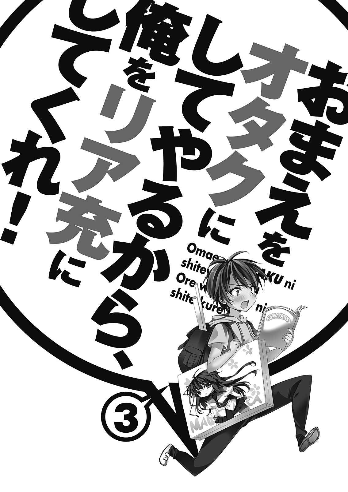

| おまえをオタクにしてやるから、俺をリア充にしてくれ！3 | |
| III ofおまえをオタクにしてやるから、俺をリア充にしてくれ！ | |
| 村上 凛 & あなぽん | |
| 富士見書房 (2012) | |
おまえをオタクにしてやるから、
俺をリア充にしてくれ！３
村上 凛

富士見ファンタジア文庫
本作品の全部または一部を無断で複製、転載、配信、送信したり、ホームページ上に転載することを禁止します。また、本作品の内容を無断で改変、改ざん等を行うことも禁止します。
本作品購入時にご承諾いただいた規約により、有償・無償にかかわらず本作品を第三者に譲渡することはできません。
本作品を示すサムネイルなどのイメージ画像は、再ダウンロード時に予告なく変更される場合があります。
本作品は縦書きでレイアウトされています。
また、ご覧になるリーディングシステムにより、表示の差が認められることがあります。
口絵・本文イラスト あなぽん

１
「せんぱぁ～い、昨日の飲みで何気麻衣ちゃんとメアド交換してましたよねー？ あの後連絡とってるんですかぁ～？」
今日から八月に突入し、暑さが一層増した。
俺、柏田直輝は今日も死んだ魚のような目をして、後ろのキッチンから聞こえてくる甘ったるい女の子の声を耳障りに感じながら、バイト先のカラオケのフロントに立っている。
「はー!? いやいやいや、俺麻衣ちゃんとメアド交換なんてしてないから！ ぶっちゃけ、俺メアド教えたけど、その後全然メール来ないし」
「えーちょっと、まじですかぁー!? あや絶対二人いい感じだと思ってたんですけど～！」
勿論、バイト先の女子の甘ったるい声は俺に向けられたものではない。バイト先のチャラい先輩加藤とバイト先の女子の会話が勝手に俺の耳に入ってきただけだ。
夏休みとはいえど平日の夕方のカラオケというのは意外と人が来ず、無駄話ができるほど暇なのだ。
俺はたまに来る客の応対をしたり、終了時間五分前の部屋に連絡を入れたりしながら、後ろのキッチンでチャラ男加藤と、バイト先のアイドル（笑）とか言われている女子がくだらない話をしているのを黙って聞いていた。彼らも相当暇なようで、先ほどからキッチンに溜まってずっとだべっている。
まあそうは言っても完全にサボっているわけではなく、料理や飲み物の注文がくればきちんと用意して持っていくのだが。
そういえば、バイト仲間中心で行ったバーベキューは昨日の予定だったようだが、雨だったためバーべキューは中止になり、来る予定だったメンバーで飲み会をしたらしい。
......行かなくて良かったのだ、行ってもどうせ、今と同じように会話に入れず誰とも馴染めなくてつまらない思いをしたに違いない。
その後も後ろのチャラ男たちのくだらない話を聞きながら仕事を続け、午後十時にバイトを上がった。
バイトを終えてすぐ、携帯をチェックする。
今日も、恋ヶ崎からのメールは入っていない。
周囲に誰もいないのをいいことに俺は深いため息をついた。
二日前、恋ヶ崎からお礼の（？）電話があって以降、互いに全く連絡をとらなくなってしまった。
どうしてあんな怒っているような態度をとってしまったのか、自分で自分が分からない。
この気まずい状態のままなのは嫌だが、どうしても自分から連絡する気にもなれなかった。
それから、受信ボックスのメールを遡って見る。今日は誰からもメールが入っていないし、昨日だってメルマガと迷惑メールが来ただけだ。
その前の日......七月三十日、コスプレイベントに参加した日。桜井小豆さんからのメールを四通、受信していた。今一度読み返してみる。
この日は初めて桜井さんからメールが来て、しかも内容がやけに好意的で、ものすごく驚いたものだ。それまで俺のことを毛嫌いするような態度をとっていた桜井さんが、どうして突然好意的な態度になったのか。未だによく分からない。
一通目のメールの内容は、『昨日はお疲れ様。いろいろお話できてよかったです。よかったら今度は桃ちゃんも含めて三人でコスプレしよう（笑）Ｐ．Ｓ． 柏田君って桃ちゃんのこと好きなの??』
俺はこのメールを読んだとき、それはそれは戸惑い、どう返すか悩んだ挙句、
『今日はお疲れ様！ いろいろ協力してくれてありがとう！ えっ...コスプレ!? 俺で良ければ是非！（笑） 俺が恋ヶ崎を好きって...何故??（笑）ありえません（笑）』と送った。何度も推敲を重ねた末にできた文なので最善であり会心の出来だったが、送ったあとになって『いや...コスプレしよう、ってどう考えても社交辞令だよな!? っていうか、このメール自体単に俺をからかってるだけだったりして......そんなメールにマジレスする俺って......今頃メール読んだ桜井さんが俺を馬鹿にしてたりしたらどうしよう......』
と、暫く落ち込んだ。
だがそんな俺の心配とは裏腹に、意外にも五分後くらいに桜井さんから再びメールが入った。
『本当？ 絶対ですよ～（笑）桃ちゃんのこと好きなわけじゃないんだ？ てっきりいろいろ協力してあげてるし好きなのかと思ってたｗ』
絶対ですよ～、というのはもしかして、コスプレの件なのだろうか？ 桜井さんは本気で俺なんぞとコスプレしたいなんて思ってくれているというのか？ 一体なぜ......!? そんでもって、どうして俺が恋ヶ崎のことを好きだなんて勘違いを？ そもそも、なぜそんなこと気にするんだ？ 最早一から十まで分からなくて、俺は益々混乱状態に陥る。
『いやいやいや（笑）俺が恋ヶ崎に協力してるのは、ちょっと深いわけがあって......とにかく、好きとか絶対ありえないから！ｗ しかも今軽く喧嘩っぽくなってるし（汗）』
『そうなんだ?? なんだか深いわけってのは私は聞いたらまずい雰囲気??（笑）って喧嘩してるの!? あんなに仲良かったのに......なんでー!?』
喧嘩しているということを自分から送っておいて、理由を聞かれて困ってしまった。鈴木のことを桜井さんに言っていいのか分からないし、しかも俺は自分が恋ヶ崎にイラついてしまった理由を自分自身でも分かっていないのだ。説明のしようがない。
『いや、ほんっとくだらないことで......喧嘩って言えるレベルかどうかも分かんないんだけど（笑）』
俺はそのメールを送った後、よほど疲れていたらしく寝落ちしてしまった。翌朝携帯を見ると、『そうなの?? ちょっと心配（汗）早く仲直りしてほしいな～！ ......って、もう何気十二時回るね（汗）こんな遅くまでごめんね！ おやすみ～！』というメールが入っており、慌てて『おはよう！ ごめん昨日は寝落ちして......』とメールを打ちかけたが、あることを思い出してメールを打つ指が止まった。
あること、とは......先日バイトしているとき、後ろから聞こえた同じバイト先の女子二人の会話の内容である。
「てか、こないだの合コンの男とメールしてんだけどー、あたしが夜メール終わらしたくて話の最後に『じゃ、おやすみ～☆』ってメール送ると、翌朝『おはよ～！』ってメール入ってて、前日の会話の続きメールしてくんの。こっちはもうアンタとのメール終わらしたくておやすみメール送ってんだから、空気読めっつの。マジガツガツ感ハンパなくて超めんどくさいんだけどー」......とのこと。
おやすみメールからの翌朝のおはようメール......というのは、『マジガツガツ感ハンパなくて超めんどくさい』らしい。ここで俺が桜井さんにメールをしてしまったら、それに該当すると思われる。それはまずい。
俺は悩んだ挙句に、メールを送るのをやめた。そこで、俺と桜井さんの七通にわたる（わざわざ数えてるところがキモいんだろうなどうせ......）メールのやり取りが終了した。
電車に乗り、帰路につく。その間も、恋ヶ崎から連絡がないかどうか気にしてしまう俺は、我ながら女々しいと思う。
翌日。ついに長谷川とお台場へ行く日の前日を迎えてしまった。未だに恋ヶ崎からの連絡は勿論来ていない。
長谷川とも、あれ以来一切何も連絡を取り合っていない。
前日くらい、『明日はよろしくね～！』だなんてメールをしてもいいのかもしれないが、向こうからのメールが途絶えてしまった上に、長谷川のメールの文面からしてあまり俺とメールのやり取りをしたいように思えなかったので、メールを送る勇気が出なかった。
雑誌を立ち読みしたりネットで調べたりして、明日お台場でどこへ行くのかは決めていた。
まず昼食を食べてから、ジョイポリスで遊び、それから長谷川が行きたがっていたお台場海浜公園を散歩する。
長谷川の家の門限にもよるが、あまり遅くまで連れ回すわけにもいかないので、適当な時間に帰路につく。
我ながらバッチリな計画だ。あとの問題は、明日俺の髪型がうまくいくかどうかと、当日ヘマをしないかどうか、それと、会話が続くかどうか......って、問題山積みだなおい......。
いや、今から不安になってどうする！
大好きな長谷川とのデートなのだ、もっと楽しみな気持ちで臨んだっていいじゃないかよ、俺。
現にワックスでの髪型のセットだって、我ながら結構上手くなってきたのだ。
恋ヶ崎にバッチリ立つ硬いワックスもらったし、雑誌も立ち読みしたりして予行練習を重ねた結果、うまくできるようになってきた。
眉毛の手入れだって恋ヶ崎にコツを聞いて教えてもらった通りにきちんと行っているし、私服だって恋ヶ崎に選んでもらったいい感じの服で決まってるし......。
......って、結局恋ヶ崎に頼りっきりだよな、俺......。
第一今回長谷川とデートができるようになったのだって恋ヶ崎のおかげだし、長谷川に勉強を教えてもらえたのだって、恋ヶ崎のおかげだ。
結局一人じゃ何もできないんだろうか、俺って......。
恋ヶ崎に連絡を取りたいと思った。この気まずいままだなんて絶対にいやだ。この間の態度のことだって謝りたいし、鈴木にいい印象を持ってもらったことだって喜んでやりたい。長谷川とのデートへのアドバイスだって欲しい。だけど......なんて連絡したらいいのか分からない。
そこで俺は、思い出した。以前恋ヶ崎と原宿で模擬デートをした際に、恋ヶ崎に『デートの心得』という、とても役に立つメモをもらったことを。
いつか使おうと思ってどこかにとっておいた気がするが、今こそ使い時じゃないか。
まず鞄の中を探し、次に財布の中を探し、次に制服のポケットを探した。だが、メモは見つからなかった。
俺って、とことん駄目な奴だな......と落ち込む。
ふと時計に目をやると、午後の五時を回っていた。
バイトが六時から入っているため、そろそろ出る準備をしなければならない。メモを探すのを諦めて、バイトへ行くための準備をした。
その日、憂鬱な気分でバイトをしながら考えた。恋ヶ崎のメモはもう思い当たる場所全てを探しつくしたけれど、見つからなかった。これ以上探しても見つかる可能性は低いと思われる。こうなったら、もうメモは諦めるしかない。そして直接本人に連絡をとるのが手っ取り早いのではないだろうか。デートが明日だということを伝え、助けを求めるしかない。連絡をとることで仲直りもできるだろうし、一石二鳥だ。もうこの際連絡しにくいだとかグダグダ言っている場合ではない。
バイトを終えてすぐ、帰りの電車で俺は意を決して恋ヶ崎にメールを打った。
『よう。この間はなんか怒ってるように思えたなら悪かったな。悪気はない......。鈴木と距離が縮まって良かったな。ところで、実は長谷川とのデート明日なんだけど......前にお前からもらった『デートの心得』的なメモを見返そうとしたんだけど、なくしちまって......すまん（汗）こんな哀れな俺に何かアドバイスを！（泣）』
我ながらなんと情けない文章だろうか。アドバイスが欲しいがために謝ってる感が前面に出てしまっているかもしれない。でも謝っていることには変わりないし、こういうどさくさに紛れた感じの方が謝りやすい。一度読み返してから送信ボタンを押す。
しかし、メールを送ってから五分たっても十分たっても、恋ヶ崎から返信が来ない。
メールが送れていないのだろうかと何度か見返したが、何度見てもきちんと送信済みフォルダに入っている。
いつもメールしてから三分以内に返信が来る恋ヶ崎から、返信が来ない。
これはつまり、どう考えても、恋ヶ崎が怒っているため返信して来ないとみてほぼ間違いないだろう。
こちらから謝っているのにそれでも尚怒っているだなんて、恋ヶ崎の怒りは俺の予想以上のようだ。
俺の胸は今までより一層不安で高鳴り、再度謝りのメールを送ろうかだとか、電話するべきかだろうかといろいろ考えた。
だが、よくよく考えてみれば、俺ってそんなに悪いことしただろうか？
恋ヶ崎からの電話に愛想悪く対応した。俺の行いはこれだけである。
その前は散々恋ヶ崎に協力してやった。俺の身を削ってまで。それなのに、その後ほんの少し対応が悪かったからって、謝っても許さない程怒っているだなんて......。恋ヶ崎の怒り具合の方がおかしいのではないだろうか。
だんだん腹が立ってきて、再度謝りのメールや電話をしようという考えは俺の中から消えた。
バイトで溜まったストレスに恋ヶ崎から返信が来ないことからのイライラも加わって、不快な気分のまま家に辿り着いた。
もう夜十一時を回っているので妹もオカンも眠っている。
テーブルの上にある冷めた夕飯をレンジでチンして食べながら、俺は明日のデートへの不安がどんどん募っている自分に気付き、焦っていた。
最後の頼みの綱であった恋ヶ崎からも返信が来ない。メモも見つからない。
ふと先月購入した『モテ男バイブル』という恋愛指南書の存在を思い出して、自室へ行き本棚に並んでいるその本を開いてみる。
一度全てに目を通して高校生の俺にはあまり役に立たない本だと分かってはいたが、もう藁にも縋る思いだった。
デートの項目を開く。
『女は夜景の見えるお洒落な店に弱い！』
『初デートでホテルへ行こうとすると女に警戒心を持たれるからやめた方が無難。』
『ドライブデートの場合、車の運転中イラついているところを見せないこと！』
......という具合で、やはり社会人の大人の男性向けのこの本は、高校生である今の俺に役に立ちそうなことはあまり書いてない。
次に、パソコンの電源をつけてインターネットを開く。俺は何か分からないことや知りたいことがあるとネットで調べるのが習慣となっていた。
『デートの心得』と文字を打ち込み、ググってみる。
次々に、デートに関するアドバイスの記事がヒットした。
女性向けの記事も多かったが、男性向けの記事も見つけ、ページに飛んで記事をじっくりと読んでみる。
『初デートで女の子との距離を縮めよう！』とタイトルのあるその記事は、まだ付き合っていない男女を想定した記事となっており、今の俺にぴったりだと思った。
『その１ 女の子はとにかく話したがり！ 面倒でも、一生懸命話を聞いてあげよう！』
......な、なるほど。長谷川に当てはまるかどうかは別として、これは有効な気がする。ついつい携帯に打ち込んでメモをとった。
『その２ せっかくデートまで漕ぎ着けたのに、ただのいい人......で終わってはいけない。女の子をドキドキさせることが大事！ いい雰囲気になったら思い切って手を繫いでみよう！』
何......!? その２にして、随分難易度が上がってしまった。長谷川の手を繫ぐ......!? 駄目だ、想像しただけでとてもじゃないがそんな冒険できやしない。
『それが無理だったとしても、勇気を出してさりげなくボディタッチをしてみよう！ 女の子に男として意識してもらおう！』
さりげなくボディタッチ......!? 手を繫ぐ、なんかよりはまだ難易度が下がったが、これだってとてもできる気がしない......。だが、男として意識してもらうにはここまでしなければならないのだろうか。一応これもメモをとった。
『その３ 初デートで告白までする必要はありませんが、好意を持っていることはそれとなく伝えましょう！』
これもなかなか......難しいことを言ってくれる。そんなこと簡単にできたらこんなに思い悩んだりしない。むしろ今なんて、好意を持ってることをひた隠しにすることに精一杯になっているというのに。
記事を読んでいくと、最後にこんな文が書いてあった。
『ここに書いてきたことは、少々勇気が必要なことかもしれません。しかし、ほんの少しの勇気を出して女の子に好意を伝えることができれば、二人の距離はグッと縮まります！ 頑張りましょう！』
なるほど......。何事にも勇気が必要なのだ。ほんの少しの勇気で長谷川との距離が縮まるのであれば、やってみる価値はある。
ここに書いてあることを明日は実行できるように、自分なりに努力してみよう。
そこで時計を見ると、もう深夜一時半を回っていた。まずい、明日寝坊して遅刻なんて以ての外だ。
パソコンの電源を落とし慌てて風呂に入る。バイトの疲れのせいか湯船に浸かっていると眠気が襲ってくるが、無理やり頭を起こした。
風呂から出てドライヤーで髪を乾かそうとしたが、ものすごい眠気に襲われて、一瞬だけ休もうと思いソファーへダイブした。
そこで俺の意識は途切れた。
２
「どわああああああ！！！」
翌日目覚めた俺は、時計を見て絶叫した。
午前十一時......家を出る予定の時刻の、十分前だった。
なんてことだ、今日は家を出る一時間前に起きて、完璧な身支度をして出るつもりだったのに。
しかしまだ十分前で良かった、急げば間に合う時間である。
顔を洗うために慌てて洗面台へ向かう。
「!?」
鏡を見て、今度は絶句した。
髪型が、やばい。おもいきり変な寝癖がついてしまっている。
そういえば昨日、風呂へ入った後ドライヤーで乾かさずに寝てしまったのだ。
「ちきしょおおおおお」
叫びながら蛇口をおもいっきり捻って水を出し、髪を濡らした。
「朝からうるさいなあ、直輝......」
俺の声に寝ていた妹のあかりが起きてきたが、構っている暇はない。
濡らした髪を、今度はドライヤーで乾かす。
時計を見ると、既に起きてから七分が経過していた。
もう朝食をとる時間はないと諦め、左手でドライヤーを持ちつつ右手で歯を磨いた。
それから顔を洗って髭を剃り、コンタクトを入れ、髪が乾いたのでワックスをつける。
時計を見る。もう出なくてはいけない時間を過ぎていた。
中途半端な状態だったが髪型のセットを途中でやめて、急いで着替え、携帯と鞄を持って家を出た。
チャリを駅まで飛ばし電車に飛び乗る。
予定していたより十五分も遅い電車に乗ってしまった。携帯の乗換案内で到着時間を確認する。
到着予定時刻は待ち合わせ時間の十分後だった。まずい、このままじゃ十分も遅刻だ。長谷川との初デートに遅刻なんて......絶対にあってはいけない。長谷川が遅刻するなんてことは性格的にまずありえないだろうし。
電車の窓に映った自分の姿を見て、更に焦る。髪型が、全然決まってない。慌てて窓に映る自分の姿を見ながら髪を立ててみたが、どうにもうまくいかない。
......ああ、よく若い男がその辺の店のガラスを鏡代わりにして髪を立てているのを見て、うわー、とか思ってたけど、今おもいっきりそれになってるな、俺。彼らの気持ちが今よく分かった。
ＪＲ新橋駅に到着し、下車したホームから乗車するゆりかもめの新橋駅のホームまで全力疾走する。ＪＲの改札を出て、ゆりかもめの乗り場へ走り、エスカレーターの右側を駆け上がる。
おかげで、乗換案内に出ていた電車よりも一本早い電車に乗ることができた。あまりにヘトヘトになり電車の扉に寄りかかりながら今一度乗換案内を調べると、この電車だったら待ち合わせ時間の五分後に到着すると結果が出た。
乗換案内の時間を根性で超えたぜ、俺。だが五分縮まったとはいえ五分遅刻してしまうことには変わりない。長谷川に謝罪のメールをすべきだろうか......と思いつつ、もう一度携帯の画面を見ると、メールのマークが表示されている。
......長谷川だろうか？ と思いながら、乗換案内の画面を消してメールを確認する。
携帯画面に表示された名前を見て、俺は目を見開いた。
『送信者・恋ヶ崎桃』
......四日ぶりの、恋ヶ崎からの連絡。
『ごめん。旅行先で携帯充電切れてた。。。今日コンビニで充電器買えたとこ』
俺はあまりの安堵に、大げさでなく涙ぐむ勢いだった。恋ヶ崎は、俺に対して怒っていたわけじゃなかった。その事実がこんなに嬉しいだなんて......俺はどうかしてるかもしれない。気を取り直してメールの続きを読む。
『メモなくすとか。。。てか今ってもぅ長谷川さんと会ってんの？ 今日デート何時から??』
恋ヶ崎に感謝しつつ、速攻返信を打とうとしたが、その前に長谷川に遅刻の連絡をしなければいけないことを思い出し、慌てて長谷川にメールを打った。
『おはよう！ ごめん、今日五分くらい遅刻しそうです...』
泣いている絵文字を最後につけて、送信する。その後、今度は恋ヶ崎にメールを打つ。
『やべえええどしよう、今電車だけど寝坊して髪型やべえし遅刻だしもう最悪すぎる...助けてくれ 』
』
間もなくメールが来る。送信者は、長谷川ではなく恋ヶ崎だった。
『なんであんたってそぅなの。。。今日って結局どこ行くの??』
『昼飯→ジョイポリス→お台場海浜公園 って流れだが...』
それまで一分程度で返信が来ていたのに、そのメールを送ってから返信が来なくなった。
その間に長谷川からメールが届く。
『了解しました。』
それだけか......もしかして長谷川、怒ってる？
しつこいかもしれないと思いつつも『本当にごめんね！』と再度謝罪のメールを送った。
恋ヶ崎から返信が来ないことに、さすがに呆れられて見放されたか......と落ち込みかけたとき、携帯のバイブが鳴る。恋ヶ崎からのメールだった。
『重要事項だけまとめてあげたから感謝せよ。
●昼食...奥の席を譲る。メニューは先に見せてあげる。食べ方のマナーに気をつける。
●ジョイポリス...気分が悪くなってなぃか気遣ってあげる。長谷川さんの乗りたぃ乗り物に乗せてあげる。
●公園...歩いてて足が痛くなってないか気遣ってあげる。（特にサンダル時）
これだけ守れればかなり好印象間違いなし！』
読んでいて目から鱗だった。
......ああ、やっぱりこいつって、なんだかんだいってめちゃくちゃいい奴じゃないか！
『マジサンキュー！ そういえば昨日、お前から返信が来なかったから焦ってネットでデートの心得調べて、ボディタッチしろとか好意を見せろとか書いてあったからその通りに頑張ろうかと思ってたんだけど、どうすべきかね??』
その俺のメールに対する恋ヶ崎からの返信は、意外なものだった。
『ボディタッチ...!? 現時点でそんなことしたって逆効果だから絶対やめなよ!? そういうのは、好きな男子とか意識してる男子にされてこそ嬉しいだけで、何とも思ってない男にされたら警戒するか不快感持っちゃうだけだから！』
マジで......!? あぶねー！ あのサイトに書いてあったこと丸々鵜呑みにしてとんでもないことになるところだった......。
『あんたから借りた漫画とかでは、主人公の男が事故で女に抱きついたりして、それがきっかけで女が主人公に好意を持ち始めるとかそんなんあったけど、現実世界じゃ絶っっっ対ありえなぃから。最初から好感持たれてるパターンだったら話は別だけど、そうじゃなければ地道に少しずつ好感度上げてくしかないのよ！』
恋ヶ崎からの長文メールは、今の俺にとってぐさぐさと心に突き刺さることばかり書いてある。
『で、でも二人きりで遊ぶことをＯＫしてくれたし、少しは好感持ってくれてるんじゃ......!?』
『そこがよく分かんなぃんだよね。今回あたしが行けなくなって二人きりになっちゃったってことになってるから来てくれるだけかもしんなぃし。。。よし、分かった、長谷川さんの反応を見てあんたの今日の行動を決めるのよ！ 長谷川さんがあんたのことをどう思ってるかどうかを長谷川さんの行動で判断するの。
まずないと思ぅけど、長谷川さんからの好感度が高そぅだったらボディタッチだとか好意を伝えるってこともしてＯＫ！
好きでも嫌いでもなく普通そうだったら、まず友達として好感を持ってもらうようにするの。
嫌われてそぅだったら。。。まずはあんたへの嫌悪感を取り除くことから始めないと。
嫌われてる相手にボディタッチなんかしてもまぢ逆効果じゃん』
なるほど、確かに相手の反応を見て態度を変えるっていうのは合理的かもしれない。しかし。
『でも長谷川が俺のことどう思ってるかなんて、今日の態度だけで俺には分からないと思う...』
『だろぅね。。。じゃあ、長谷川さんの今日の様子をあたしにメールして。その態度で長谷川さんの気持ちをあたしが考えて、あんたのとるべき行動をメールするから。ただし！ 分かってると思うけど、間違っても長谷川さんの前で携帯なんかいじっちゃ駄目だからね！ 長谷川さんがお手洗い行ってる間とかに素早くメールすんのよ。メールできる隙がなかったら無理にしなくていいから』
そこまでメールのやり取りをして、待ち合わせ場所であるお台場海浜公園駅に到着しそうになったので、俺はメールの返信をせずに携帯をズボンのケツポケットに入れた。
恋ヶ崎からのメールを、非常に心強く思った。恋ヶ崎に感謝しつつ、自分に気合いを入れ直しデートに臨んだ。
待ち合わせ場所であるお台場海浜公園駅に到着すると、電車を降りてすぐ改札までダッシュした。予定通り、五分の遅刻。改札の向こうで既に長谷川が到着して待っていた。
「あ、長谷川！ 遅れてごめん！」
慌てて改札を出て長谷川のもとへ駆けていく。
「そんな、走ってこなくても構わないのに」
長谷川は相変わらずクールだが、その言葉は長谷川なりに俺に気を遣ってくれているのが分かってありがたく思う。息を切らしながら長谷川の姿を見る。膝丈の白いレースのワンピースに、水色のリボンがついた可愛らしいサンダルを履いていた。髪をポニーテールにしてシュシュでとめていて、手には籠バッグを持っている。
白いワンピースキタコレ、夏の清楚なファッションの定番......可憐すぎて眩しい。直視できないほど光り輝くサマーエンジェル......。
「......柏田君？」
やべっ、暑さと緊張で脳が一瞬やられていた。
「あっ、ごめんごめん！ じゃあ、行こうか！」
冷静を装って笑顔でその台詞を言ってみたのだが、違和感が生じるほど声がうわずってしまった。緊張と興奮と疲れで既に俺がやばい。
「柏田君......汗がすごいようだけど、大丈夫？」
「えっ......」
長谷川に指摘されて気づいたが、俺はシャワーを浴びたかのごとく死ぬほど汗をかいていた。
当然といえば当然だ、ただでさえクソ暑いのに、電車に乗っている以外の時間をほぼ全て全力疾走してここまで来たのだから。
鞄を開けてハンカチを探す。......ない。ハンカチを忘れた。もう既に死にたい。
「......もしかして、ハンカチがないの？」
「......あ、うん......忘れちゃって......」
情けない笑顔を作りながら長谷川を振り返ると、彼女は......なんと俺に向かって、ハンカチを差し出していた。
「これ、良かったら」
マジで、天使かこの子は。
「いやいやいやいや!? だ、大丈夫！ 長谷川のハンカチを俺の汚い汗なんかで汚すわけにはいかないし！」
俺の酷い慌てっぷりに、それまで無表情だった長谷川の顔が少しだけ綻んだ。
呆れられて笑われただけなのかもしれないけど......嬉しかった。
「それじゃあ、どこか冷たい飲み物が飲める場所にでも入りましょうか」
「えっ......」
なんということだ、長谷川が俺を気遣って、そんな提案をしてくれた。
なんてできた子なんだろうか。どっちにしろ、俺の中での計画でもまず昼食を食べるということになっていたので、どこか店に入ることになった。
駅を出てジョイポリスも入っている『デックス東京ビーチ』という建物の中へ入り、昼食が食べられる店を探す。
「長谷川、お昼食べてきた？」
「いいえ、でも朝食を食べてきたので、まだあまりお腹が空いていなくて......。柏田君はお腹空いてる？」
「あ、俺もそんなにはー......」
そこまで言いかけて、かなりでかい音で俺の腹が鳴った。
なんて漫画のような絶妙なタイミングだろうか。ここまでくると感心する。いや、情けなくて死にたい。
正直朝から何も食べていないので、ずっと腹ぺこだったのだ。
「じゃあどこか、ご飯が食べれるお店へ入りましょうか」
「うん......ごめん......」
建物の６Ｆにレストランがたくさんあるようなので、エスカレーターで６Ｆへ上がることになった。
俺は自身のポケットティッシュで自分の顔の汗を拭きながら（ティッシュのカスが顔につかないよう気をつけなければならないので意外と大変である）、エスカレーターで俺の前に立っている長谷川の後ろ姿を見つめた。
こんな俺があの長谷川と二人きりでお台場に来ている......ここまで来てなんだが、未だに信じられない。長谷川の白いうなじにドキドキしてしまう。......って違う、感慨に耽ったりときめいたりしている場合ではない。この気まずい静寂を打ち破らなければ。
「は、長谷川は今日何時くらいに着いたの？」
「柏田君が来るより少し前よ。時間丁度に着いたから」
「そ、そっか～！」
......。
会話、終了......。
長谷川も元々話すタイプではないし、俺が口ベタなために、二人でいるとすぐに気まずい静寂が訪れる事態となってしまう。
それから話題を探したが特に適切なものが見つからず、互いに黙っているうちに６Ｆへたどり着いてしまった。
「長谷川、どういう店に入りたい!?」
「私は......冷たい飲み物が飲めればそれでいいわ」
よし、冷たい飲み物が飲める店だな......って、大抵の店で飲めるじゃねえか！
「柏田君が食べたいものがあるお店で構わないわ」
「え、本当に!?」
デートでは女の子の希望を第一に考えなければいけないとは分かっているが......長谷川自身がどこでもいいと言うのだから、この場合俺が決めるのが適切、ということだろうか......。
「え、えーと......じゃあ......」
キョロキョロと店を見渡す。様々なレストランがあり、どの店がデートに適切なのか分からない。
「ど、どこがいいかなー......」
ああ、もうこの時点で既に恋ヶ崎に助けを求めたくなってくる。
その時、俺の目に死ぬほど美味しそうなハンバーグ料理中心のレストランが飛び込んできた。
「う、うまそ～っ！」
「じゃあ、ここにしましょうか」
「えっ......いいの!?」
「ええ、私はどこでも構わないから」
俺個人の行きたい店に決まってしまって申し訳なく思いながらも、俺はハンバーグにテンションが高まった。
店に入り、席へ案内される。
丁度お昼時なので混んでいたが、丁度二人分の席が空いていたのですぐに席に着くことができた。
僕は意気揚々と奥のソファーの席に着こうとした、が......そこで、恋ヶ崎からのメールを思い出した。
『奥の席を譲ってあげること』
「あ、長谷川奥いいよ！」
自分の足を止めて、慌てて長谷川にそう言った。
「え？ あ、ありがとう......」
長谷川は少し驚きながら、俺に礼を言った。
「こちらメニューになります」
店員にメニューを渡され、すぐにハンバーグを選ぼうとしたが......。再び恋ヶ崎からの助言メールを思い出した。
「あ！ 長谷川先に選んでいいよ！」
「え？ えぇ、ありがとう......」
長谷川は再び少し戸惑いながら、俺からメニューを受け取って選び出した。
「私、決まったから大丈夫」
すぐに俺にメニューが返ってくる。
「えーっと、俺は......」
メニューを見て、非常に困ってしまった。いかんせん空腹状態なので、何を見ても美味そうに見えるのだ。
さんざん迷った挙句、ダブルチーズハンバーグのライス＆サラダセットを頼むことにした。
二段のチーズハンバーグなので少々量が多いかもしれないと思ったが、朝昼兼用なので大丈夫だろう。
「メニュー決まった？ じゃあ呼ぶわね。すみません」
長谷川がスマートに美しく店員を呼んでくれた。
しまった、店員を呼ぶのだってできれば俺がやった方が良かっただろうに、またもや長谷川に気を遣わせてしまった。
「アイスティー一つ」
「あ、俺ダブルチーズハンバーグのライス＆サラダセット！」
「かしこまりました、メニューお下げします」
店員がメニューを持って去っていく。
......再び訪れる沈黙。
ああ、今のところ恋ヶ崎に言われたこと二つはクリアしたけど、食事をするときマナーに気をつけろとかも言われたんだっけ......。前回原宿デートの際恋ヶ崎にマナーが悪いと注意されたのを思い出す。
デートって、大変なんだな......。
長谷川は黙って窓の外を眺めていた。
俺は話題を探そうとしたが、差し当たって適切な話題も見つからず、長谷川の顔に見とれていた。
「お待たせいたしました、アイスティーとダブルチーズハンバーグセットになります」
思ったより早く注文の品が届き、助かった。
長谷川の前にアイスティーが、俺の前にダブルチーズハンバーグとライスとサラダが置かれた。
ダブルチーズハンバーグが、思っていたよりでかい。量が多い。ふと長谷川を見ると、長谷川も俺のハンバーグを見て啞然としていた。
「な、なんか一人でがっついちゃって、ごめん......」
長谷川はアイスティーなのに俺はハンバーグセットって......アンバランスにも程がある。この空腹のままデートへ行くよりはいくらかマシとは思うが。
「どうして謝る必要があるの？ 私が自分の都合で食事を頼まないだけだもの」
長谷川はあくまで冷静に事務的に、俺に告げた。
それからなるべくマナーに気を付けることを心がけつつ、目の前のご馳走に本気でがっついた。
なるべく綺麗にハンバーグをナイフとフォークで切り分け、なるべく丁寧に口へ運ぶ。こんなに丁寧に食事することなどめったにないし、長谷川の視線も気にしてしまって手が震えてしまう。
「あっ」
ガシャン、と音をたてて、俺はなんと自分の水を倒してしまった。
「わっ、やべ、やべ」
中にまだ結構水が入っていたために広がってしまい、自分でも慌てすぎだと思うくらい慌ててしまう。
「柏田君、大丈夫？」
持っているティッシュやナプキンで水を拭き取る。長谷川も鞄からティッシュを出して俺に渡してくれた。
すぐに店員が来て、布巾でテーブルの上や床を拭いてくれた。なんで俺ってこう絵に描いたような失敗をしてしまうのだろうか。自分が情けなさすぎて、長谷川の顔を見ることができない。
全て水を拭き終わり、その後空腹だった俺はハンバーグもサラダもライスも全て平らげた。二段のハンバーグはかなり量が多く、ものすごく満腹になった。
食事中は俺がたまに美味いとかもらす程度で、ほとんど会話もなかった。正直、飯に夢中で会話どころでもなかったのだが。
「ふう、完食した......ごめん、待たせちゃって」
俺は食事を終えてすぐ、荷物をまとめて店を出る準備をする。
「そんなすぐ出なくても大丈夫よ、食休みをした方が......」
「いや、大丈夫大丈夫！」
ただでさえ俺の食事中ずっと長谷川を待たせてしまっていたせいでいたたまれない気持ちになっていたので、急いで席を立つ。伝票を持ちレジへ向かった。
本当は奢ることができたら良かったのだろうが......俺は今日のデート代でさえ金がなく、十五年間貯め続けたお年玉貯金から一万を下ろしていた。その貯金は何かあったときのためになるべく手をつけないようにと親にも言われている貯金なのであまり下ろしたくなかったが、やむをえない。その一万で今日のデート代も含めあと一ヶ月近く過ごさねばならないため、長谷川にアイスティーを奢る余裕はなかった。
情けない気持ちで自分の分の会計だけを支払い、店を出る。
「ちょっとお手洗いへ行ってもいいかしら」
店を出たところで長谷川がそう申し出た。
「あ、勿論！」
長谷川がトイレへ向かったので、その場で携帯をポケットから取り出し時間をチェックした。二時前......まだ会ってから一時間も経っていないのに、俺のこの困憊具合。どうかしてるぜ！
たまらずメールを打った。
『宛先・恋ヶ崎桃
やべ～～失敗しまくった！ 会話続かねえ！ 何話したらいいんだ...』
一分も経たないうちに返信が来る。確か旅行中と言っていたが......こいつ、意外と暇？
『とりあえず、落ち着きなよ。。。あんたがキョドってる様子が目に浮かぶ。笑 長谷川さんの様子はどぅ？ 遅刻してきたことに対して怒ってるっぽい？ あんたへの言動は？』
『いや、怒ってる様子はない......多分。結構気遣ってくれてる。ハンカチ差し出してくれたりとか心配してくれたりとか......マジ天使！』
『あんた、現時点で心配されたりハンカチ差し出されたりする失敗やらかしてんのね?? まあ大体想像つくけど。。。でもそんなに気遣ってくれてるってことは、嫌われてるってことはなぃかもね。このまま好感度を下げないように、あくまで無難に行くのよ。積極的に攻めるのはダメ！ ただのクラスメイトから、いい人って思われるように心がけて行動すんのよ。』
そこに長谷川が戻ってきたので、俺は慌てて携帯を閉じる。
「お待たせ」
「いやいや！ じゃあ、行こうか！」
「この後、どこへ行くか決まっているの？」
「え、えっと、長谷川さえ良ければジョイポリスに行こうかと思うんだけど......」
「ええ、構わないわ」
長谷川の反応は相変わらず気持ちが読めない冷静なものだった。
先ほどの恋ヶ崎からのメールが頭の中を駆け巡る。好感度を下げないように、あくまで無難に......いい人と思われるように......簡単に言うけど、具体的にどうしたらいいのだろうか。
意識してしまい、ほとんど会話もできぬままジョイポリスへ移動する。
「長谷川、ジョイポリス来たことある!?」
「ええ、昔、一度......」
意外だった。物静かな長谷川と、この騒がしい屋内遊園地とではあまりイメージが結びつかない。
俺は券売機で大人用のパスポート（入場券＋アトラクション乗り放題）を二枚購入する。
長谷川が券売機に金を投入しようとしていたので、慌てて止めた。
「あ、今日は勉強のお礼で来てもらったんだから、このくらいの金は俺が出すよ！」
購入したパスポートの一枚を長谷川に差し出した。
そう、ついつい忘れがちになるが今日の名目は『勉強を教えてもらったお礼』なのである。飲み物代は出せなかったが、チケット代すら出さなかったらさすがにお礼も何もあったものじゃないと思い、貯金を下ろしてまでパスポート代を確保したのだ。
「えっ......そんな、いいわ、そんなつもりで来たのではないし......」
長谷川は無表情のまま首を横に振って、財布からパスポート代を取り出そうとする。
「いや！ 俺の気がおさまらないんだよ！ 受け取って！」
やべ、俺今ちょっとかっこいいかも。
「そんな......」
「いや、ほんっと大丈夫だから！」
ここは強気で押さなければならない。
「......そう、そう言うなら......ありがとう」
長谷川は申し訳なさそうに、やっと俺からパスポートを受け取ってくれた。
それから俺たちはパスポートを持って入場した。
「長谷川、何乗りたい!?」
パンフレットを広げて長谷川に見せ、質問する。
「ええと......」
長谷川はパンフレットを見て考え込んだ。
「長谷川って、乗れない乗り物とかある？」
「いえ、特に今まで乗れなかったものはないわ」
「え!? じゃあ絶叫系もお化け屋敷もなんでもいけるの!?」
「おそらく......」
ここでもオールマイティなのか。さすが長谷川としか言いようがない。
俺はというと、絶叫系は大丈夫だがお化け屋敷は結構苦手だ。
しかし、ここへ来て先ほど食べたハンバーグのせいで若干気分が悪くなってきたことに気付いてしまった。食べ終わった直後は食べ過ぎたな、と思った程度でさほど苦しかったりはしなかったのだが......時間差で来るなんて。
そんな状態なので、最初からあまり激しい乗り物は避けた方がいいだろうなと考える。
出入り口のところにある小規模な回転系コースターらしきものが目に入った。
「あ、これとかどうかな？」
「ええ、構わないわ」
長谷川の承諾も得られたので、とりあえず乗り物の列の最後尾に並ぶ。
「ふう～」
腹が苦しすぎて俺はつい無意識にため息をもらしてしまった。
「柏田君......大丈夫？」
「えっ、あ、全然大丈夫大丈夫！」
やべっ、無意識とはいえデート中にため息をつくだなんて、何やってんだ俺は。その上長谷川に心配かけてしまうなんて。ああ、早く消化してくれ。俺の消化器官全力で頑張れ。
意外とすぐに順番が回ってきて、コースターに乗り込んだ。
当たり前だが、長谷川と隣同士で座る。......やばい、なんだこれ、近過ぎやしないか。
どうかすると手が触れてしまいそうな程に、横に並んだ長谷川との距離が近くて、最早乗り物どころではない。
そんなことを考えているうちにコースターが発車した。普段こんなレベルの乗り物だったら大丈夫なはずなのだが、緊張と胃の不快感に襲われる。
「......ひいいっ......」
小規模なコースターだと舐めてかかったのがまずかった。今のこの最悪なコンディションの俺にとって地獄のような数分間が終了した。
......乗らなきゃ良かった。心から後悔した。
いや、後悔すべき点が違う。ダブルチーズハンバーグセットは食べ過ぎだった。せめて普通のハンバーグセットにすべきだった。
だが長谷川に俺の気分が悪いことがバレてはいけないと思い、必死に平静を装った。
「は、長谷川......次何乗りたい？ 今......俺が好きな乗り物乗ったから......次長谷川の好きな乗り物でいいよ......」
「柏田君......ものすごく顔色悪いわ、大丈夫？」
顔を見ただけでそんなに分かるほど、今の俺の顔色はやばいのだろうか。
正直、もう大分限界を迎えている。
「ご、ごめん......ちょっとだけ、トイレ行ってきてもいいかな......すぐ戻るから......」
「ええ、勿論」
俺はフラフラとした足取りで男子トイレを探し、なんとかたどり着いた。個室に入ってすぐ、便器に向かって戻してしまった。
......やばい、これは本格的にしんどい。
汚いと思いつつも、トイレの床に座り込んで再度便器に顔を向ける。しかし、気持ち悪いのだが吐くことができないという最悪な状態だ。
思わず鞄から携帯を取り出す。
『宛先・恋ヶ崎桃
やばい...食べ過ぎて気持ち悪くなってジョイポリスでトイレとお友達なう...どうしよう、まだ一つしか乗り物乗ってないのに』
思わずそう打って送信した。恋ヶ崎に報告したところでどうにもならないのだが、藁にも縋る思いだった。
またもやすぐに返信が来る。
『どんだけヘタレなの。。。まぢやばぃんだったらもぅ乗り物乗るのやめなよ』
『でも乗り放題のパスポートもったいないし！ 長谷川の好きな乗り物まだ何も乗ってないし...』
『余計気分悪くなって長谷川さんの前でリバースしちゃったらどうすんの?? 大人しく休んだ方がまだマシでしょ。長谷川さん海行きたいって言ってたんだったら、ジョイポリス出て海散歩でもしたら??』
恋ヶ崎のメールを読んでから、また便器に顔を向けたまま十分程度休んだ。
その間も戻すことはできず、だからと言って気分が優れることもなく気分が悪いままなのでトイレから出ることもできず、その場で蹲る。
良くなる兆しが見えないのだったら、やはり恋ヶ崎が言っていたようにジョイポリスで他の乗り物を楽しむのはもう諦めるべきかもしれない。
だけど、海を散歩するんだったらその間会話をしなければならないので、今以上に気まずい空気になってしまうような気がしてならない。既にどんな話を振ればいいか困っている状態だというのに......そこまで考えて、昨日読んで携帯にメモったネットの記事を思い出した。そうだ、確か女の子の話を聞いてあげろとか書いてあった。
『昨日ネットの記事で見たんだが、海を散歩するとしたらひたすら長谷川の話聞いてあげれば好感持たれるだろうか??』
念のため、恋ヶ崎にも確認してみる。
『うーん...でも長谷川さんってあんまり話したがりじゃなさそうじゃなぃ？ 話聞いてあげるのはいいけど、質問攻めとかにしたら駄目だからね？ 今日朝何時に起きたー？ 何食べたー？ 電車混んでたー？ みたいな、意味のない質問攻めはうざいから。相手のテンションに合わせんのよ。言いたくなさそうなことは無理に聞かない。扱いやすい話題としてはー...学校のこととか、中学のときの話とか？ 長谷川さんが話したそうにしてることとかあったら聞いてあげるって感じ』
......なるほど。ただ話を聞いてあげればそれでいいってわけじゃないんだな。
それからトイレで少し休憩したのち、長谷川のもとへ戻った。
「柏田君、本当に大丈夫？」
戻ってきた俺に向かって、長谷川が心配そうに声をかけてくる。
「ごめんごめん、長いこと待たせちゃって......でもさっきよりは一応マシになったよ」
まだまだ気分は優れないが、先ほどトイレへ行く前の状態よりは少しだけマシになったと思える。
「でもまだ顔色があまりよくなっていないように思えるわ......」
それでもやはりまだ、一目見て分かるほどに俺の顔色はよくないのか。
「今日はもう帰って休んだ方がいいんじゃ......」
恐れていた一言が長谷川の口から出てしまった。せっかくの長谷川とのデートだっていうのに、こんな状態で途中帰宅だなんて絶対に避けたい。長谷川の方もこんな俺に呆れてもう帰宅したいと思っているのだろうか......と長谷川の方を見ると、本気で俺のことを心配している様子で、今の俺の憶測が愚かだったと反省する。
そこで俺は、恋ヶ崎からきた先ほどのメールの内容を思い出した。
「うん、ごめん......確かに、本当に申し訳ないけどこれ以上アトラクションに乗るのはかなりまずいかも......だから、長谷川さえ良ければ、もうジョイポリスは出てお台場海浜公園行かない？」
「え......柏田君は、大丈夫なの？」
「海で風に当たった方が気分よくなると思うんだよね」
「そう、だったら......」
長谷川の承諾を得ることができたので、俺たちはジョイポリスを後にして、お台場海浜公園へと向かった。
お台場海浜公園は海の風が気持ちよく、体調がそれまでよりマシになったような気がした。
「長谷川が来たかったのって、ここで良かったんだよね？」
「ええ......」
長谷川は海風に髪を靡かせて、気持ち良さそうに俺に返事をした。
俺たちは海辺を歩きながら話すことにした。
既に会話が途切れてしまって焦って話題を探す。
「は、長谷川って海が好きなの？」
「え？」
「いや、ここに来たがってたのは、海が好きなのかなあって思って......」
長谷川は俺の質問に答えず、なぜか遠くを見つめていた。
やがて口を開き、
「昔、よくここへ来たから......行きたい場所と言われて真っ先にここが思い浮かんだの」
と言った。
「昔よく来てたんだ？」
「ええ」
そのとき、恋ヶ崎からのアドバイスが頭に浮かんだ。
長谷川が話したそうにしていることは聞いてあげる。
話したそうにしている、かどうかはよく分からないが、話したくなさそうではない......よな？
「昔って......中学のときとか？」
「いえ、小学生の頃まで」
「へえ～。家族でとか？」
「ええ、そう。家族で」
見ると長谷川は、当時を思い出してか懐かしむ表情をしていた。
「そのときが楽しかったから、また来てみたいって思ったのかもしれないわ......」
「そっか、家族の仲いいんだね」
そんなに楽しかったのなら、仲がいいんだろうなあ、と何となく思って軽く口にしてみたのだが、俺がそれを言った瞬間、一瞬だけ長谷川が悲しげな笑みを浮かべたような気がした。
もしかして、俺は言ってはいけないことを言ってしまったのだろうか。家族仲が良かったのは昔だけで、今はそうではないとか？
先ほどの恋ヶ崎からのメールに、言いたくなさそうなことは無理に聞くなとあったのを思い出す。
長谷川は俺のセリフに何も答えなかったので、言いたくないことなのかもしれないと判断し、それ以上聞くのをやめた。
再び静寂が訪れてしまって俺は焦る。
「柏田君、本当に体調大丈夫？」
「あ、うん」
長谷川に心配されて思い出したが、体調は確実に少しずつ良くなっているような気がする。
「そこにベンチがあるから、少し休みましょうか」
「あ、うん、ありがとう」
俺たちはベンチに座った。長谷川の気遣いを嬉しく思う。
ベンチに座って話題を探す。俺は一つ長谷川に聞いてみたいと思っていたことがあった。
「あのさ、ずっと不思議に思ってたんだけど......六月にカラオケに誘ったとき、どうして来てくれたの？」
今日来てくれたのも意外だったが、その前に大人数でのカラオケに来てくれたことをずっと不思議に思っていた。
あんなにクールで他人との距離をとっているかのように見える長谷川が、あっさりと来てくれた理由が気になっていた。
長谷川は俺の質問になにやら考え込んでしまった。
「どうして......理由を聞かれると、正直困るわ」
「え？」
「特に理由なんてないもの。誘ってくれたから、行った......。それだけよ」
誘われたから来た......？ だったら、長谷川は遊びに誘えば大抵来てくれるというのか。そういえば現に今日だって、すんなりと来てくれた。
「えっと、じゃあ長谷川って、今後も何か遊びに誘えば来てくれるのかな？」
どさくさに紛れて少々大胆な質問をしてしまったかもしれない。
長谷川は俺の発言に驚いた表情を浮かべて
「え、ええ......。私なんかを誘ってくれるのであれば......」
と、戸惑いながら言った。
その言葉が聞けただけで、俺は嬉しくなった。
「そろそろ、行きましょうか。体調は、大丈夫？」
長谷川が俺の顔色を覗き込んでくる。
「あ、うん、すっかり大丈夫」
もう少し、長谷川と一緒にいたかった......というのが本音だったが、これ以上いても話題に困ってしまうというのも事実だ。あまり遅くまで連れ回すわけにはいかないし、俺の体調のこともあるし、今日のところはもう帰った方が無難かもしれない。
それから俺たちは、駅に向かって歩き出した。
駅にもうすぐ到着するというところで、長谷川が突然立ち止まった。
「え......」
長谷川が、小さく呟いた。
「ど、どうかした？」
「あれ～!? もしかして長谷川さん!?」
目の前の横断歩道を渡ってこちらに向かって歩いていた若い男女のカップルのうちの女性の方が、長谷川に向かって声をかけたのだ。そのままつかつかと歩み寄ってくる。
「うわー超久しぶり～！ びっくりした～！」
どうやら口ぶりからして、長谷川の昔の知り合いのようだ。
「も、森嶋......さん......」
長谷川が、初めて彼女に対して言葉を発した。
だがその顔を見て、俺は驚いた。普段の長谷川の冷静な無表情からは想像できないほど、顔を歪めていた。
長谷川はもしかして、この女性のことが苦手......なのだろうか？
「中学のときから全然変わってないねー！ びっくりー！」
今の発言で中学校時代の知り合いということが特定できたが、テンション高めのその女性は恐らく俺たちと同い年くらいで、派手で露出度の高い格好をしており、長谷川とはタイプが違うように見える。
長谷川は、相変わらず顔面蒼白なままで、なるべく彼女と目を合わせないようにしているようだ。
気付くと、その女性が俺の全身を上から下までじっくりと眺めてきた。
「あ、っていうかもしかして、デート......とかだった？」
気のせいだろうか、なんだかその言い方が、少し馬鹿にしている風だったのは。
その女も男連れで、相手の男は明らかに年上っぽく、色黒でちょっと悪そうなイケメンだった。
......まずい、長谷川が、俺のせいで馬鹿にされる。やけにダサい男を連れてると思われている。私の彼氏の方がカッコイイ、勝った、とか、今絶対思ってるこの女。
「ち、違います！ 元々三人の予定が一人減ってしまったから二人になっただけで、決してデートなどでは......」
気付くと俺は、必死にそんなことを口にしていた。
「あ、そうなんだ～、ごめんごめん」
女が大して悪びれもせず謝った。
なんだか俺は彼女に対して、負の感情を抱かずにはいられなかった。言葉にはできないのだが、全身から嫌なオーラを発しているというか......。何より、長谷川が彼女に対して怯えているようだし。
「あ、そういえばさあ長谷川さん、園田さんと連絡ってとってるー？」
「......！」
長谷川がその台詞に反応して顔を上げた。
「とって......いないけれど、どうして？」
「そっか～。いやあたしも中学卒業後メールとかしてみたんだけどさあ、全然連絡とれなくって」
「そう......」
「長谷川さんも連絡とれてなかったんだねー」
そのときの長谷川の表情を見て、俺はさらに驚いた。今までに一度も見たことない、切なそうで、悔しそうな、複雑な表情を、長谷川は浮かべていたのだ。
「理沙、まだかよ」
そのとき女の連れの男が初めて口を開いた。イラついた口調でとても感じが悪い。
「あ、ごめん！ じゃあ長谷川さん、またね」
「え、ええ......」
理沙と呼ばれたその女と彼氏らしき男は、去っていった。
「は、長谷川......大丈夫？」
長谷川は相変わらず顔面蒼白のまま、言葉を発するのを忘れて呆然としていた。
「......あ、ごめんなさい......ぼうっとしてしまって......」
「すごく、顔色悪いよ？」
「え......そう、かしら......」
長谷川は自らの鞄からハンカチを出し、自身の顔の汗を拭った。
「あのさ、聞いてもいいかな？ 今のって......？」
単純に俺自身が気になったのと、この場で何も聞かないとそれはそれで不自然だと思ったので、思い切って長谷川に質問してみる。
「............」
長谷川は、何も答えない。まずい、聞くべきではなかっただろうか。
「あ、ごめん、話したくないなら無理に話さなくていいんだ......」
「......今のは、中学のときのクラスメイトで......なんて説明したらいいか......」
長谷川は困った表情になりながらも、口を開いてくれた。
「話すと長くなってしまうし、とても退屈な話よ」
「いや、俺は全然構わないよ！ 勿論、長谷川さえ、話してもいいって思うんなら、だけど......。もし良ければ、気分転換も兼ねてぶらぶら歩かない？ まだ時間も早いし......」
「そう？ ......それじゃあ、そうしましょうか......」
それから、長谷川と二人駅の下を、当てもなく歩いた。
「今日は暑いけれど、風があるから比較的過ごしやすいわね」
歩道を歩きながら、長谷川は珍しく世間話なんかをした。
「そう、だね......俺も、おかげで大分気分良くなってきたよ」
だが、俺が聞きたいのはそんな話ではないのだが。
「......森嶋さん......さっきの彼女が言っていた、園田さんという子なのだけれど......」
長谷川が、突然本題に突入した。少し驚いて長谷川に顔を向ける。
「中学のときの私の友人なの」
長谷川は落ち着きを取り戻しつつ、ゆっくりと言った。そうだ、先ほど長谷川はあの女に、「園田さん元気？」という名前を出されて、悲しそうな悔しそうな複雑な表情をしていたことを思い出す。
「そうなんだ。......仲良かったの？」
「ええ......。彼女は明るくて人気者で、なのにいつも一人でいる私のことなんかを気にかけてくれて......。誰よりも、優しい子だったわ」
「へえ～！ すごくいい子だったんだね、じゃあ中学時代はその子と一番仲が良かったんだ？」
失礼ながら、長谷川は中学時代も友人がいなかったのかと思っていたので、少々驚いた。
「ええ......」
長谷川が風に綺麗な黒髪をなびかせて、穏やかな表情になった。その友人のことを思い出しているようだった。
「私は父の仕事の都合で小学生の頃転校ばかりしていて......誰かと親しくなることを避けていて......」
「ええっ転校？ 小学生の頃から大変だね」
少しショッキングな話で動揺する。
「子供の頃にそんな苦労したんだったら、誰かと仲良くなろうとか思えないかもしれないよね」
「いえ、そんなことないわ。単に私が......臆病だっただけよ」
長谷川がはっきりと言う。
「でもそんな私に、彼女は......しつこいくらいに声をかけてきて。私が冷たくしても全く動じなくて」
長谷川が少し笑顔になった。長谷川は、彼女のことが好きなんだろうなあと思った。
「だけど......」
そこで突然、長谷川の顔から笑みが消え、いつもの無表情になってしまった。
「彼女、私なんかと仲良くしてくれたせいで......クラスの女子から無視されるようになってしまったの」
「えっ......えぇ!?」
俺は長谷川のセリフに衝撃を受けた。
「......彼女は、ずっとクラスメイトの女子に、私と仲良くするなって言われていたの。なのに、それを無視して私と仲良くして......。私と仲良くするなと言われていたことも、無視されていることも、彼女は私に隠していた......」
長谷川は心底悔しそうな表情になって語った。
「長谷川と仲良くするな、って......どうしてクラスメイトはそんなことを......!?」
「よくは......分からないけれど......私、あまりよく思われていなかったみたい」
どうしてそんなことを言う人間がいるのだろうか。長谷川が何か気に障るようなことをしたのだろうか。こんなに優しい長谷川が、そんなことをしたとは到底思えないのだが。
「そのとき、無視をするように言っていた人物が......さっきの彼女......森嶋さんなの......」
「えぇえ!?」
俺は心から驚き、声を荒らげた。
「ひ、酷いな......それなのに、あんなに自然に、悪びれもせず話しかけてくるなんて......」
「彼女......森嶋理沙さんは、表向きはすごくいい子だったから......もしかしたら、私が彼女に......気付かないうちに酷いことをしてしまったのかもしれない。それで、私のことをよく思っていなかったのかも」
長谷川に限って、絶対そんなことするはずがないと思う。
「......その友達って、どうなったの？」
「......最終的には、学校に来れなくなってしまった......」
長谷川のこんなに辛そうな表情を見るのは初めてだった。
「私が......彼女をそこまで追いつめたのよ......私に関わったから......」
「そんなことないよ！ は、長谷川のせいじゃないと思う！」
俺はつい、強く否定する。
「じゃ、じゃあその友達は、中学を卒業できなかったの？」
「いえ、出席日数はギリギリ足りて、なんとか高校へ行くこともできたわ。さっきは森嶋さんにああ言ったけれど、本当は今も連絡を取り合っているの。彼女は何もなかったかのように変わらず私に優しく接してくれて......」
「そっか......」
長谷川の辛い気持ちが、俺にまで伝わってくる。
「......ごめんなさい、長々と暗い話をしてしまって」
「い、いや！ こっちが聞き出したんだし......」
......どうしよう、長谷川はここまで俺に話してくれたのに、自分から聞いておいて、俺は今この場でなんて言ったらいいのか分からない。かける言葉が見つからない。
軽い言葉で簡単に慰めたりできるような話なんかじゃない。
......って、このタイミングで黙るとか一番駄目だろ俺！
だけど、なんて声をかけるのが正解なのか......。
そのとき、俺は自分自身の中学校時代の記憶が頭を過ぎった。
そうか......長谷川も俺のように......いや、俺なんかよりもよっぽど、辛い経験をしているんだ。経験は違えど、中学時代に辛い思いをしているという点では同じじゃないか。
「長谷川......」
「え？」
「辛い話だったと思うけど......は、話してくれて、ありがとう......俺、嬉しかった」
やっとの思いで、そこまで言えた。
「............」
「その......よく分かっていない俺なんかが言うのもおかしいけど......長谷川は、悪くないと思うんだ！」
長谷川は黙って俺の話を聞いている。
「えっと、俺も......長谷川ほど辛い経験じゃないけど、中学のとき嫌な思い出があって......未だに引きずってるから......気持ち、少しは分かるっていうか......」
「嫌な思い出？」
長谷川は不思議そうな表情で俺を見ていた。
「あ、うん......その、まあ......好きだった子に、軽く陰口叩かれてた、っていう......まあ中学時代じゃありがちっていうか、全然大した話じゃあないんだけどさ」
勢いに任せて、俺は苦笑いを浮かべながら自分のトラウマを口走っていた。
今まで、誰にも言ったことがなかった、中学時代の俺のトラウマ。忘れたくても忘れられない、辛い思い出。まさか、こんなタイミングで、人に話すとは思ってなかった。
「そんなこと......ないわ。きっと私の身に起こった出来事よりも、辛い出来事だと思うわ......」
気付くと、長谷川は歩く足を止めて、真剣な表情で真っ直ぐ俺のことを見つめていた。
「私は、まだ誰かを恋愛対象として好きになったことがないから......その辛さは分からないけれど、好きな相手に否定されるだなんて、きっと私の想像を絶する程に......辛いと思うわ」
長谷川は、まるで自分のことのように、辛そうな表情で俺を見る。
長谷川のその言葉だけで、俺は十分だった。なんだか少し、救われたような気がした。
それから俺たちは、駅から少し遠くまで来てしまったので、ゆりかもめに乗るために元来た道を戻ることにした。
互いに何を言うわけでもなかったが、不思議と俺の中で、もう気まずいだとか何か喋らなきゃっていう気持ちはわいてこなかった。
......長谷川はもしかしたら、中学時代の辛い出来事が原因で、今までよりも一層人と距離をとるようになってしまったのかもしれない。先ほど、自分が友達を追い詰めた、自分と関わったせいで......と、自分を責めていた。自分と関わったせいで人が辛い思いをしたと思っているとしたら、人と関わることが怖くなって当然だと思った。
だけど一方で、長谷川はみんなのために学級委員に立候補してくれたり、カラオケのときも、今日だって、遊びに誘えば来てくれた。心の奥底では、再び人と深く関わりたいと、みんなと仲良くなりたいと、そう思っているのではないだろうか。
長谷川の根の性格がこんな風に素直で他人を思いやる優しい子なんだとみんなが分かれば、きっとみんな長谷川のことを好きになる。長谷川と仲良くなりたいと思うはずだ。
「あのさ、長谷川......」
俺の声に、長谷川が反応する。
「さっきの話だけど、しつこいかもしれないけど......長谷川のせいでそういうことになったなんてことは......絶対に、絶対にないから！」
長谷川は目を見開いて俺を見ている。
......って、俺、何突然熱くこんなことを言ってしまったのだろうか。痛い奴だと思われたかもしれない。
「あ、それと......あくまで予想だけど、俺、クラスのみんなは、長谷川と仲良くなりたいって思ってると思うんだ......！ だから、その......」
長谷川はそのうちクラスのみんなとも仲良くなれると思う。そう言おうとしたけど、途中でセリフが止まってしまった。俺なんかにそんなこと言われたって、余計なお世話だよな......そう思ったのだ。
「柏田君......」
長谷川は、黙っている俺を驚いた表情で暫く見つめた後、
「......柏田君って......」
「え？」
「柏田君って、やっぱり......変わっているわ」
そう言って、俺に向かって微笑んだ。今まで俺に向けてくれたことなどないような、優しい笑顔で。
「長谷......川......」
俺は、長谷川のその表情に驚き、長谷川を......抱きしめたいような衝動に駆られた。
それからもういい時間になっていたので、二人でゆりかもめに乗り帰宅することになった。
「このモノレール......懐かしい......」
長谷川が電車内で不意に呟いた。
「家族でお台場に遊びに行ったときも、ゆりかもめで行ってたの？」
「いえ、家族で来た際は、父の運転する車で来ていたわ」
その返答に少し違和感を覚えた。お台場へ来る以外にゆりかもめに乗ることなんてあるだろうか？
「それとは別に、二回ほど乗ったことがあるの」
俺が以前にゆりかもめに乗ったのは、去年の冬コミだ。
「......お台場に遊びに来たの？」
「ええ......お台場というか......東京ビッグサイトだけれど......」
「えっ......？」
夏コミや冬コミ以外で、ビッグサイトへ行くことなんてあるのだろうか？
だが長谷川と夏コミなんて全くイメージが結びつかないし......。
ものすごく気になったがどう聞けばいいのか分からず、結局その後も聞くことができなかった。
長谷川が......オタク......？
いや、そんなまさか。
そんなこと、絶対ありえない。
それから新橋の駅にたどり着き、乗る電車が違う俺たちはそこで別れることになった。
「今日、気分悪くなっちゃったりとか......いろいろ迷惑かけてごめん！」
「いえ......」
今日は、長谷川といろんな話をすることができた。
長谷川の意外な過去も知ることができた。
長谷川が自ら俺に話をしてくれて、すごく嬉しかった。勝手に長谷川との距離が縮まったような気になっていた。ここまで話してくれたのは、俺に心を開いてくれたからだと信じて疑わなかった。俺への好感度で言えば、好きとまではいかないが、普通よりも上の、『好感』っていう位置に俺はいるのではないだろうか。よくギャルゲーの好感度とかである、嫌い、苦手、普通、好感、好き、という五段階で好感だ。
だから俺は、少々調子に乗った。
俺は今この場で......長谷川を、次のデートに誘おうという、とんでもない勝負に出ようとしていたのだ。
「は」
「柏田君」
俺が長谷川、と声をかけようとしたのとほぼ同時に、長谷川に名前を呼ばれた。俺の声は長谷川の声にかき消されたので、長谷川は俺が言葉を発しようとしていたことに気付いていなかった。
「今日は、ありがとう」
長谷川は俺の顔を見て、礼を言ってくれた。
「いや、そんな......礼を言わなきゃいけないのはこっちの方で......」
長谷川に礼を言われて、俺は素直に嬉しかった。
「遊園地のお金を出してくれたり......他にも、私の話を聞いてくれて......。私、今日柏田君と話せたおかげで、もう少し頑張ってみようって気になれた......」
「え？」
なんのことか分からず、長谷川を見る。
「正直、今まで諦めかけていたの。私がもう一度、友達を作るだなんて、無理だって」
「......？」
「だけど今日、高校でも心からの友達を作れるように、もう一度頑張ってみようって......そういう気持ちになれた」
俺の思考回路は一瞬停止する。
「柏田君の、おかげだと思うの......だから、ありがとう」
「あ、いやあ......そんな......」
俺は作り笑いを浮かべつつも、心の中で長谷川に向かって疑問を投げかけていた。
心からの友達を作れるように、もう一度頑張る？
......ということは、俺はどうなる？ 俺のことは、友達とすら認識されていないのか？
「じゃあ、また......」
「あ、ああ......気をつけて」
俺には最早次のデートに誘う余力なんて残っておらず、無理して笑顔を作って長谷川に手を振るのが精一杯だった。
一人、虚無感を覚えながら帰りの電車に乗る。
俺は......長谷川にとって、何なんだ？
友達と呼べるレベルにすら、いないのか？
今日で長谷川との心の距離が縮まったと思い込んで浮かれていたのは、完全に俺の独りよがりだったのか？
自分の体調が悪いことも、恋ヶ崎に報告メールを打つことも忘れ、呆然と電車の壁に寄りかかる。今日の出来事と長谷川の最後のセリフがずっと頭の中をぐるぐると回り続けていた。
３
『柏田君......私、柏田君だったら......いいよ......』
今俺の目の前で、美少女が俺の部屋のベッドに座り、顔を赤らめてそんなことを言っている。
『ひなた......！』
『あっ......らめえ、そ、そんないきなりそんなとこぉ......』
俺と美少女によるラブシーンが今まさに開始したとき、
「昼間っから気色悪いんじゃ変態直輝ぃいいいいいいいいい!!」
勢いよく部屋の扉が開き、嫌悪感丸出しの表情をした妹のあかりが俺の部屋に侵入してきた。
「どわあああっ!!」
心臓が止まるほどに驚いた俺は慌てて自身のノートパソコンを閉じた。
「ノ、ノックしろっつってんだろーが！」
「隣の部屋にいると壁越しに甲高いアニメ声が聞こえるんだよ！ 超迷惑！ ほんと気持ち悪いんだけどっ!! 夏休みに昼間っからエロゲやってるとか人生終わってんじゃん!?」
う、やはりイヤホンをすべきだったか......。この前壊れたばかりなんだよなあ。早く買わないと。小さい音量でゲームをしていたので大丈夫かと思ったのだが......。
「うううう、うるせ！ 俺はエロゲなんて......」
「もうバレてんのっ！」
俺のパソコンの横には、きっちりと俺が今プレイしていたエロゲのパッケージが置かれており、あかりはそれを指差した。
「はあ......たまに家にいると思ったらこれだよ！ デートで女の子と散々いいことしてきたんじゃないわけえ!? 外ではデート、家ではエロゲってどんだけ毎日発情してんだよこの変態っ！」
「デート......？」
「な、何とぼけてんの今更っ！ もうあかりとっくに知ってんだけど！ 昨日ママが言ってたし。......ほんと、こんなキモオタ変態とデートしてくれる女子がいるなんてどんだけ物好きなんだか！ っていうか、どうせからかわれてるだけだろうけどね！」
「デート......デートか......ふふ......ははは......ははははははは！」
「!? ひいいいい......な、直輝が......ついに壊れた!?」
怯えた目つきで俺を見ているあかりをよそに、俺は高笑いをしながら床に寝転がった。
長谷川とのデートから丸一日が経過した。
デートの日の夜、俺が長谷川になんてメールを送ろうか悩んでいると長谷川から『今日はありがとう。ゆっくり休んで体調整えて下さい。』とメールがあり、一瞬テンションが上がって即『こちらこそ付き合ってくれてありがとう！ すごく楽しかったです！ 体調はおかげさまで大分よくなったよ！』と返信すると、十分後くらいに『なら良かった。では、また学校で。』と返信が来た。
では、また学校で。ということはつまり、もうメールの返信は必要ないと。ついでに、夏休み中も会う気はないと。いや、俺の被害妄想というか、単なる挨拶として言っただけなのだとは分かるのだが、あまりに素っ気ないその返信に、俺はまた心が折れた。だが一応、『うん、心配してくれてありがとうね～！ 引き続きよい夏休みを！』と送ると、予想通り返信は来なかった。
それから俺はずっと、なんともいえない寂しさ、むなしさの感情から抜け出せずにいた。
昨日のデートの一日、俺としては頑張ったつもりだった。だけど結果的には、『友達』の位置にすら辿り着けていなかったのだ。俺はもう、今後どうしたらいいのだろう。どう距離を詰めればいいのだろう。全てが分からない。
現実を投げ出したくなり、二次元に逃げた。ここ最近、遊びに行ったり服を買ったりしていたために金がなく、新しいゲームなど買えていないので、中学時代に一番ハマったエロゲを棚から引っ張り出してきて久しぶりにプレイした。
ゲームは簡単だ。攻略情報さえ分かっていれば、丸一日もあればクリアできる。女の子の気持ちを簡単に手に入れることができる。
だけど現実は......頑張っても、努力しても、何週間、何ヶ月かけても......未だに『友達』にすらなれていない。もうどうすりゃいいんだよ。なんだよこの無理ゲー。
久々にエロゲをやってみたところで、現実との差を思い知らされただけであまり楽しくなかった。（もう何度もクリアしているゲームだから飽きているということもあるが）
「はははは......はは......はあ......」
笑いつかれた俺は天井を見ながらため息をついた。
「な......なんなの......直輝、マジで変......おかしい......」
あかりが不審な目で俺を見つめてくる。
「はは......高校生にもなるとだな、いろいろあるんだよ！」
「はあ？ 何それ？ 中学生馬鹿にしてるわけ？」
「いや......そういうわけじゃないが......」
現に俺は中学時代の方が暗黒だったしな。
「なんか......いやなことでもあったなら......」
あかりが何か言いかけたようだが、俺の携帯の着うたが鳴り響いてあかりの声が丸ごとかき消され、何も聞きとれなかった。
「あ、電話出るわ」
慌てて携帯を開き、通話ボタンを押す。
「もしもし」
俺が電話に出ると、あかりがなぜか途端に眉をしかめて立ち上がり、物凄い勢いで俺の部屋から出て行き、思いきり大きな音を立てて扉を閉めた。完全に怒っている態度だが、突然何を怒り出したのだろうか。いや、あいつが怒っているのは別にいつものことか。
「もしもし柏田？」
あかりに気をとられて誰からの電話か確認せずにとってしまったが、電話越しに、聞きなれた高めの声が聞こえてきた。......恋ヶ崎だ。
「あんた生きてたの？」
突然生死を確認されて、俺は呆気にとられる。
「なんだよ、そりゃそんな簡単に死にゃしねーよ」
「なんだよって何よ！ 言っとくけどなんだよはこっちのセリフよ！ あんだけデート中助けを求めてきたくせに、突然返信もしてこなくなったからデートに失敗したショックで死んだと思ったわよ！」
おお、こいつなりに心配してくれていたのか。
「そういや......連絡すんの忘れてたな、悪い」
「あんだけ協力してあげたんだから報告してくるのが普通なんじゃないの!?」
全てに無気力になってしまった俺は、恋ヶ崎に連絡をとることすら完全に頭から抜けきっていた。
「それだったら、さっきのお前の発言が半分正解だな......デートに失敗して死んだ......死んではいないが」
「......え!? ってことは、あんたデートに失敗したの!?」
一体何をもってデートの失敗と成功を判断するのかなんて明確な基準はないと思うので、だとしたら自分の中で満足のいく結果であれば成功、そうでなければ失敗、という自己判断になると思うのだが、それでいくと昨日の俺のデートは完全に失敗である。
「まさかあたしの言ったこと守らずに、攻めの姿勢でボディタッチだのなんだのして、長谷川さんにドン引きされたとか......」
「んなことするか！」
「じゃあ無理してジョイポリスで遊び続けて長谷川さんの前でリバースしちゃったとか......」
「んなこともしてねえ！」
「じゃあどう失敗したのよ？」
「いや、普通にあの後お前に言われた通りお台場海浜公園に移動して、海辺を歩いてだな......」
「海で溺れた!?」
「なんでだよ!? いや、普通に会話して......」
「失礼なこと言って傷つけた？ セクハラ発言して嫌悪感丸出しにされた？ 会話がなさすぎて気まずくなって長谷川さんが不機嫌に!?」
「どれもなってねえわ！」
いや、最後の会話が続かなくて気まずいってのはあったが、勿論そんなことで長谷川が不機嫌になんてならないし、最後の方はかなり話せるようになって、気まずい空気になんてなってなかった......と思う。
「じゃあどう失敗したのよ。テンパって長谷川さんの話あんま聞かずに自分の話ばっかりしたとか？」
「いや......俺の話もしたはしたけど、意外に......長谷川の話もいろいろ聞けた」
「マジで？ あの長谷川さんがそんなに話すなんて......あんたもしや、無理やりいろいろ聞きだしたんじゃ......」
「ちっ違う！ 無理やり、ではない......と思いたい......。現に長谷川だって、別れ際に話を聞いてくれてありがとう、って言ってくれたんだぜ」
「え、マジで？ 感謝されたの？」
「ああ......笑ってくれたし」
「長谷川さんが笑ってくれた!? 噓、すごいじゃん。学校じゃ絶対笑顔なんて見せてくれないのに」
恋ヶ崎の言葉を聞いて、俺は少し嬉しくなった。やっぱり長谷川の普段の様子からしたら考えられないような態度を俺に見せてくれたんだよな。その事実は、素直に喜んでいいんだよな。
「なのにあんたが失敗したって落ちてる理由って一体何なわけ？」
「......別れ際に、『これから友達を作るために頑張ろうと思う』というようなことを言われたんだよ」
「......それ、どんな会話の流れ？」
「いや、まあいろいろあってだな......とりあえず、最後に感謝されつつそう言われたんだ」
「よく言葉の意味が分かんないし、それでなんであんたが落ちたのかも分かんないんだけど......」
「いやだって、友達を作るために頑張る、って言われたってことは少なくとも、目の前にいる俺のことは友達として認識されてない、ってことだろ!?」
「............ああ、まあ、確かに......」
恋ヶ崎が口ごもりながらも肯定してきたので、俺のテンションは再び落ちていく。
「でもそれはそれとして、感謝されたり笑顔を向けてくれたのも事実なんでしょ？ 嫌いな相手には普通そんなことしないと思う。長谷川さんは、気を遣って無理して思ってもいないようなこと言うような人ではないと思うし」
「そ、そうか～？」
「そうでしょ、今までは普通のクラスメイト、としか思われてなかったかもしれないけど、少なくともそれより上のレベルにはいけたんじゃん？ まあ、状況が分かんないから断言はできないけど。逆になんであんたがアガってないのか意味分かんない。あんたにしては結構すごいことなんじゃん？ 頑張った方なんじゃないの？」
恋ヶ崎に褒められたことにより、俺の落ちていたテンションが上がり始める。やっぱりそうか、あの長谷川が笑ってくれたり感謝をしてくれたのって、普段の長谷川を知る人間からしたら驚くほどのできごとなんだ。いつも俺を貶すことしかない恋ヶ崎が珍しく褒めたんだから間違いない。俺は何を暗い気分になっていたのだろうか。
「そっか......俺がネガティブ過ぎたのか......」
嬉しい気持ちが沸き起こるのと同時に、すぐに後悔すべきことを思い出した。
「くそっ、じゃあやっぱり別れ際に次のデート誘うべきだったかー!?」
そんなに俺の印象が良かったのなら、誘っても承諾してくれたんじゃなかろうか、そんな欲張りな気持ちが再度沸き起こる。
「いや、それはしなくて正解でしょ」
が、恋ヶ崎に瞬殺された。
「えっなんで!?」
「あのねえ、今回はたまたま、あたしが行けなくなったことにしてあげたから来てくれたけど、最初から二人きりとなるとかなりハードル上がるよ？ 断られる可能性結構高いと思うよ？ 断られても凹まない自信があるなら誘ってみてもいいと思うけど......」
「マ、マジか......」
確かに恋ヶ崎の言うことはもっともだと思う。今回誘いを受けてくれたのは、元々恋ヶ崎も含めた三人という前提があったからだ。二人きりのデートと三人で遊びに行くのとではわけが違う。今回来てくれたんだから、次回も来てくれるだろうなんて当然のように考えていた俺は思い上がっていたのかもしれない。長谷川にデートの誘いを断られる、拒否される。そんなことがあったら、俺はもう二度と立ち直ることができないほどに落ち込んでしまうような気がする。
「二人きりのデートに誘うのは、もう少し仲良くなって、あんたの印象が良くなってからの方が無難だと思うけど」
「そう......だな......」
少々焦りすぎていたかもしれない。焦ってフラグを折ってしまったら元も子もない。今はまだ、様子見が一番か......。
ということはつまり、夏休み中長谷川と遊ぶことは不可能。もう夏休み中ずっと、長谷川に会えない。
今でさえ会いたくなっているのに、夏休み中ずっと会えないだなんて辛すぎる。
果たして二学期まで我慢できるのだろうか。
「夏休み中、もう長谷川に会えないのかー......」
「何贅沢言ってんのよ！ 二人きりでデートできたんだから最高じゃん！ あたしなんて......あれから勿論鈴木君と連絡なんかとってないし、夏休み中だってずっと会えないのに......」
電話越しに恋ヶ崎の深いため息が聞こえて、恋ヶ崎が相当寂しそうにしているのが分かった。
「ねぇ、あれからなんか鈴木君に会えるようなイベントないの!? こんだけ協力してあげたんだから、あんたもなんかセッティングしてよ」
「......って言われてもなぁ......」
鈴木は恋ヶ崎のことになど全く興味がないし、むしろ下手したら苦手意識さえ持っているようなのに、恋ヶ崎を含めた何人かで遊びに行こうだなんて誘うのも不自然だしなあ......。
「もー。協力的じゃないわね。あーあ、夏休み、早く終わんないかな......学校だったら、クラスはちがくても結構廊下とかですれ違うし、毎日会えるのに」
俺も同じ心境だった。学校では長谷川と話せないけど、毎日見つめることができる。
「ほんと、早く終わんねえかな......夏休み」
学校に行きたいだなんて、中学のころの学校に行くのが憂鬱だった俺からしたら、考えられない心境の変化で我ながらすごいと思う。
俺たちは互いに深くため息をつき、その後少し適当に雑談をして、電話を終えた。
＊
翌日、俺は鈴木と秋葉原のマックで食事をとっていた。
今日は鈴木と秋葉に買い物に行く約束をしており、ゲーマーズ、とらのあな、アニメイトなどを適当に見て回った後、マックに移動して一休みしているところだった。
「ねーねー、カッシーって今年夏コミ行くの？」
「あー、どうしよっかな......行きたいけど、金ないし」
ポテトを頰張りながら鈴木の質問に適当に返事をする。
というか、もし夏コミに行くなら鈴木と行こうと思っていたのだが。
「鈴木は？」
「俺さー、すっっっげー行きたいけど......俺が行きたい二日目って、じいちゃんの三回忌で法事なんだよねー」
「マジか」
鈴木が行けないなら、俺も行くのやめるかな......。他に一緒に行く相手いないし、金もないし。大手の本だったら夏コミ終了後に秋葉の同人誌専門店で買えるから、そこで買えばいいし。
「っていうか行きたいの三日目じゃなくて二日目なんだな？」
「うん、東邦目当てだから、三日目も行きたいけど二日目の方がより行きたいかな。まあその付近田舎のばあちゃんちに泊まってるからどっちにも行けないんだけど。二日目に、俺の好きなサークルが、通販も委託もなしの夏コミ限定本出すんだよね～！」
「へー」
「超欲しかったんだけどさー。しかもその作家が女性作家らしくて、女性客限定でスケブ描いてくれるらしくて。まあどっちにしろそれは無理だけど。もー限定本は諦めるしかねーかなー......」
鈴木はそう言うと、ふくれっつらをしてジュースをブクブクしだした。
「ブクブクはやめろブクブクは。まー俺が行く予定だったら買ってきてやりたかったところだけどなー......」
行きたくても行く相手がいないとな......。中学の時の友達にでも声かけてみるかな......あ、でも俺、金ないんだった。
「あっ、そういや全然話変わるけど、鈴木最近マイホーム行った？」
俺は唐突に鈴木に聞きたかったことを思い出し、問いかけた。
マイホームというのは、以前鈴木に連れて行ってもらったメイド喫茶であり、現在恋ヶ崎と桜井さんが働いているアルバイト先でもある。
鈴木がその後もあの店に行っていたとしたら、バイト中のメイド服姿の恋ヶ崎に遭遇する可能性もあるなあなどと思ったのだ。
「え、行ってないけど、なんで？」
その言葉を聞いて少し安心してしまう。
別に二人が遭遇したところで何も不都合なことはないのだが、ただでさえバイト中テンパってる恋ヶ崎が鈴木の姿なんてみたら焦りすぎて大失敗してしまうんじゃないかなどと少し心配していたのだ。
「あ、そっか......。いや、特に深い意味はねえけど、俺この前行ったからさ。鈴木は行ってんのかと思って」
「え、カッシー行ったの？ メイド喫茶とかあんま興味なさそうだったのに。誰かと行ったん？」
「あ、いや、一人で」
「一人で行ったの!? なんだよー、誘ってよー」
「あ、ああ、じゃあ今度は誘うよ......」
もし鈴木と共にマイホームへ行くこととなったら、事前に恋ヶ崎に知らせてやるべきだな。
それから適当に雑談し、いい時間になったために俺たちはマックを出て、帰宅するために駅へ向かった。
＊
翌日、俺は朝十時からバイトが入っていた。
この夏休み、ほぼ家にいるかバイトしかしていないような気がするな、俺。
「あ、どうもぉ、おはようございま～す」
バイト先に着いて準備を済ませてフロントへ行くと、先にいた人に声をかけられる。
最近、山本さんの他にも、俺に優しく声をかけてくれる人ができた。それが今挨拶をしてきた女性、バイト先のアイドル（笑）渡辺あやさんである。
「お、おはようございます」
若干どもりながら挨拶を返す。渡辺さんはどうやら俺とタメらしく、違う高校に通う一年とのこと。
彼女......渡辺さんは肩までの黒髪ストレートヘアで、お洒落だが恋ヶ崎ほど化粧が濃くなく、常にナチュラルメイクで清楚な雰囲気の可愛い女の子だ。
童顔で小柄な割に胸は少しだけ大きく、まさしく男が好みそうな要素が惜しげもなく詰め込まれた女子である。
そんな外見に加えて、甘ったるい声、常に女の子らしい仕草に話し方、また誰にでも人見知りしない人懐っこい性格のため、バイト先の皆に可愛がられており、バイト先のアイドル的存在と化している。
俺には素っ気無く接してくる人が多い中、（被害妄想かもしれないが......）山本さんとこの渡辺さんだけは、明るく挨拶してくれるのである。
まあ実際のところ、俺とこの渡辺さんは挨拶や事務的内容以外ではほとんど会話を交わしたことはないのだが。
渡辺さんは俺の方を振り向いて挨拶してくれた後、すぐにキッチンの中にいる先輩の方へ向き直って会話を続けていた。
「つーかあやちゃん、いつ合コンやってくれんのー？ 俺ずっと待ってんだけどー」
今日も今日とて、俺の苦手なチャラ男先輩......加藤が渡辺さんに話しかけていた。
加藤......今日もシフトは入ってたんか。こいつなんか常にバイト先にいないか？ バイト以外することないのかよ。
「えーってか、あやはいつでもいいんですけどー。加藤さん、どんな女子がいいとか言って下さいよー！」
「え？ どんな女子？ あやちゃんみたいな子を他にも連れてきてくれれば俺はそれで......」
「ちょっと、何言ってるんですかー！ ってか、あやの友達、あやより可愛い子超いっぱいいますからー」
「えっまたまたー！ んなわけないでしょ、あやちゃんより可愛い子なんてそうそういないし、あと女子の言う可愛いって絶対あてになんないからー。性格が可愛いとかそういうのなしだからね？」
ああ、聞いているだけでなんとうすら寒い会話だろうか。
そして俺はどうも......この渡辺あやさんに、惹かれないのである。
いや可愛い。確かにとても可愛い。しかも黒髪清楚系なんて大好物だ。
だがしかし、なんというかこの......全体から溢れ出る、「あたし可愛いでしょ？ ね、こんなに可愛いでしょ??」みたいなオーラが受け付けられないのである。
勿論本人はそんなこと思っていないのかもしれないが、自分のことを名前で呼ぶところとか、常に目をぱちくりさせてキョトン顔していたり、常に口がアヒル口っぽかったり、その表情絶対常に作ってんだろ!? みたいなところとか、質問するとき口元に指をあてて首をかしげるところとか、なんかもう全体的に......それ絶対男受け狙ってるよな!? みたいなところが、多分無理なんだと思う。
思えば、俺の周りにそういう女子って他にいない。恋ヶ崎なんて横暴という言葉が擬人化したような存在の女だし、俺の好きな長谷川もそういうタイプとは真逆だし、桜井さんだって当てはまらない。
前回のバイトと全く同じ状況で俺は今日も二人の会話を聞きながら、一瞬も会話に入ることなどできず、フロント業務に徹した。
「じゃ、休憩行ってきまーす」
やがて加藤が休憩時間になったようだ。
そこで、渡辺さんと二人きりになってしまったことに気付く。
今までバイト中、他の女性とは二人きりになったこともあったが、渡辺さんと二人きりになったのは初めてである。
不覚にも緊張してしまう。まともに会話なんてしたことないし、沈黙になってしまったら気まずい。
でもそういえば渡辺さんって、結構誰にでも話しかけるタイプだし、こんな俺にも毎回笑顔で挨拶してくれるし、二人きりになったら気を遣って話しかけてくれたりするのだろうか。もし話しかけてくれたとしたら、最近昔よりは女子に免疫がついたとは言え、あまり話し慣れていない可愛い女子と二人きりだなんて、きちんと会話できる自信がない。
だが、そんな心配は取り越し苦労だった。
なぜなら、いつまでたっても渡辺さんが俺に声をかけてくることはなかったからだ。
やがて暇な時間帯になり、客もほとんど入らなくなってくる。
俺はあまりの沈黙に気まずく思って、ふとキッチンにいる渡辺さんを振り返った。
「............」
俺は、渡辺さんの姿を見て驚いた。
彼女は、なんと......ポケットから出したらしき携帯をいじっていたのである。
いくら暇だからって仕事中に携帯をいじるだなんて......そんな人、今までバイトのメンバーで一人も見たことがない。チャラ男加藤でさえそんなことしない。
俺が見ていたことに気付いた渡辺さんが、携帯の画面から一瞬だけ、俺の方に視線を向ける。
俺と目が合った瞬間、気のせいだろうか......渡辺さんは、一瞬だけ嫌そうな顔をして、また何事もなかったかのように携帯画面に目を落とす。
今、気付いた。
俺がこの渡辺さんに、惹かれない理由。
彼女は、俺に全く興味がない。
今日だって、おしゃべり好きっぽい彼女が俺には一度も話しかけてこない。
他の男性従業員には、イケメンだろうがそうでなかろうが、自分から積極的に話しかけるし、ときにはボディタッチなんかもして、好意を前面に出している。
他の男と、俺とで、完全に態度を変えているのだ。
俺に積極的に挨拶してくれるのは、他の人に『誰にでも明るく声をかけてあげるいい子』と思われたいから......そんな気がしてきた。
いくらぶりっこでも、俺にも愛想よく接してくれたら、女に免疫のない俺はすぐ好意的に思ってしまうだろうと思う。
だけど、なんか気に食わない......そう思ってしまっていたのは、彼女が俺に対してだけ態度が違うからだったのだ。
それに気がついたところで、俺の気持ちはますます落ちる一方だ。
ああ、こんな女と二人きりで暫くの間この空間にいなくてはならないなんて......。
と気分が落ちていたとき、休憩が終わった加藤が戻ってきた。
「休憩もらいましたー」
助かった......加藤の存在をこんなにもありがたく思ったことはない。
「あ、加藤さん、お疲れ様でぇーす」
一瞬にして態度をころっと変えて、渡辺さんは加藤に声をかけた。持っていた携帯は既にポケットの中にしまったらしい。
「あ、あのー、さっきの合コンの話なんですけどー」
渡辺さんのぶりっこモードが再び発動する。
「なになにー？」
「山本さんも誘ってくれませんかぁー？」
「......えっ」
加藤が渡辺さんの一言にひどく驚いている。
「あやちゃん、何、山本さん好きなの？」
「えっちょっ、違いますよー何言ってるんですかぁー！」
渡辺さんの高い声が更に甲高くなって否定の声をあげる。
山本さん......やはり、彼はモテるんだな。
見た目だってかっこいいし、俺なんかにも優しく接してくれ、仕事もできてバイト仲間からの信頼も厚いとんでもなく出来た人だ。どうして彼のような人が存在するのだろう。
ああ、今日のバイトだって山本さんがいたら少しは楽しかったことと思う。
渡辺さんは山本さんを狙っているのか......。
個人的には山本さんに、渡辺さんみたいな二重人格のぶりっこ女なんかに簡単に落ちて欲しくない。
「でもあやちゃん、山本さんは結構厳しいと思うよ俺は」
「えっ......!?」
「あの人、シスコンだから」
「えぇえっちょっと、マ......マジですかー!?」
渡辺さんが加藤の言葉に動揺していたが、俺もその発言には驚いた。
山本さんが、シスコン？ そういえば、俺と同い年の妹がいるって言ってたよな......。
「妹大好きらしいから、相手にしてもらえんと思うよー」
「えー？ 噓っ......マジショックなんですけど......」
あからさまに渡辺さんのテンションが落ちていくのが分かった。
山本さんがシスコンか......でも確かにすごく優しいから、妹思いっていうのは納得できるかもな。山本さんの妹だったら可愛いだろうし......ちょっと見てみたいかも。
それから休憩をとりつつ、六時まで働き続けた。
終了時間になったので上がって従業員控え室へ戻ると、山本さんが支度をしていた。
「あ、柏田君、今上がり？ お疲れー」
「あ、お疲れさまです。これからですか？」
「うん、六時半からだけど早く来すぎちゃったよ」
それから俺は山本さんと少し雑談をした。
どうにも、先ほど加藤が言っていた噓だか本当だか分からない『山本さんがシスコンである』というセリフが気になってしまう。
「あの、山本さん......」
「何？」
「妹さん、元気ですか？ 俺とタメの」
「ああ、妹ね......どうだろうね」
「えっ......!? 何かあったんですか？」
「ああ、いやあ、元気かどうか分かんないって意味でね。もうずっと話してないから」
話してない......？ 兄妹なのに会話がないのだろうか？
俺なんかあんな妹でも、会話をしない日など一日もないが。
「い、妹さんと仲良くないんですか？」
「ああ、うん......仲良くはないね、っていうか、俺が嫌われてる感じ......かな」
意外だった。こんなにできた人が、妹との仲がうまくいっていないだなんて。
こんないい兄貴だったら絶対誇れる兄だろうに、どうして山本さんの妹は山本さんを嫌っているのだろう。
山本さんが妹に嫌われるようなことをしただなんて到底思えないのだが。
「あ、ごめん、俺そろそろ行かなきゃいけない時間だわ。じゃ、柏田君、またね」
「あ、はい」
非常に気になったが、そこで山本さんが仕事へ行ってしまったので、聞くことができなかった。
今度会ったとき続きを聞いてみたいと思ったけど、なんで妹に嫌われてるんですか？ なんて聞きにくいよなあ。話したくない話題なのかもしれないし。
俺は一人悶々としながら帰路についた。
電車の中で携帯を見ると、バイト中に恋ヶ崎からメールがきていた。
『柏田って夏コミとか行くの？』
恋ヶ崎から夏コミだなんてオタクワードが飛び出したことに驚きつつも、返信する。
『金ねえから多分行かねえかな...行きたい気もするけど一緒に行く相手いないし』
『鈴木君とかと行かないの??』
やっぱり、鈴木が行くのかどうか聞きたかっただけなんだな。まあ、最初からどうせそんなことだろうとは思っていたけど。
『鈴木は法事で行けねえんだと。欲しい本あったらしくてすげえ悔しがってたけど』
『そうなの!? あたし小豆ちゃんから誘われてて、会場で鈴木君と逢えないかひそかに狙ってたのに。。。欲しい本て何??』
また夏コミで偶然を装って会うつもりだったのか......。まああんなに人が多い場所じゃ、頑張っても会えない確率の方が高いと思うが......。
『何って、言ってもお前分かんないと思うけど...』
鈴木が欲しがっていたのは同人シューティングゲーム『東邦プロジェクト』というジャンルの男性向け同人誌で、夏コミ二日目に販売されている。恋ヶ崎に軽くそのことを説明する。
『２日目って13日？ 小豆ちゃんが行きたがってたのもその日だ！』
『いや、でもどっちにしても鈴木行けないんだってば』
『あたしが鈴木君が欲しがってるその本、鈴木君のために買ってきてあげよっかな～！』
恋ヶ崎からのそのメールを見て、俺はため息を吐かずにはいられなかった。
確かにあれだけ鈴木が欲しがっていた本を恋ヶ崎が買ってきてやれば、鈴木は喜ぶだろうし、恋ヶ崎に感謝すると思う。
だがしかし......。
『お前が夏コミの２日目って...無理だな。オンリーイベントの何倍も人多いし、２日目だって、３日目ほどじゃないけど男性客めっちゃ多いんだぞ。そもそも、お前鈴木が欲しがってる本がどこに売ってるかとか探せないだろ...』
『えー。。。その本探すのってそんなに難しぃの?? じゃぁあんたも手伝ってよ。笑』
『え...手伝うって...』
『一緒に来てよ。長谷川さんとのデート、あんなに協力してあげたじゃん』
またその脅しか......。だが確かに、長谷川とのデートはデート前もデート中もめちゃくちゃ恋ヶ崎に助けてもらったんだよなあ......。考えた挙句、仕方なく一緒に夏コミへ行って本の購入を手伝ってやることを決意する。
もう俺の残金は千円を切っているから、またお年玉貯金を切り崩すしかない......。夏コミに行けるのは嬉しいが、また貯金が減るのか......。
『まあ俺も行きたいと思いつつ一緒に行く奴いなかったから...しょうがねえ、一緒に行ってやるよ。そういや、女性限定でスケブ...スケッチブックにリクエストした絵描いてもらえるとか言ってたから、お前が本買って描いてもらったら鈴木喜ぶんじゃねーのかな』
『えーまぢで！ じゃぁ絶対本買って、そのスケブとかいうのも描いてもらぅッ!!』
そこまで順調に話が進んだが、一つ不安なことを思い出した。
『でもそういえば、お前桜井さんと行くんだよな?? 俺も一緒に行って大丈夫なのか...？』
桜井さん......あの謎のメール以降一切連絡をとっていないが、あのときのメールではやけに優しかったよなあ。あれは一体なんだったんだろう。単に気分が良かったのか？
再び会ったら、態度が変わっているのだろうか。それとも、元のツンツンした桜井さんに戻っているのだろうか。
『あーそれは心配ないんじゃん？ だって小豆ちゃんがあんたゎ誘わないのかって聞いてきたんだもん』
恋ヶ崎からのメールの文面に驚いて、今一度読み返す。
桜井さんが俺を誘わないのか聞いてきた......？
先日のメールといい、本当に桜井さんが好意的になった。以前の態度からは考えられないほどだ。
勿論嬉しいといえば嬉しいのだが、正直突然のことすぎてわけが分からない。
『なんで桜井さん、突然俺に優しくなったんだろう...』
『優しくなった？ 気のせいじゃん?? 笑』
気のせい......気のせい、なのだろうか......。確かに、今のところメールで優しかっただけで、面と向かって優しくされてはいないし。
とりあえず桜井さんのことは置いておくとして、三人で夏コミ二日目に行くことが決定した。俺が欲しいと思っていた同人誌のジャンルもちょうど二日目だったので、非常にちょうど良かった。
恋ヶ崎に死ぬほど人が多いことと男が汗臭いことと暑くて死にそうになることを覚悟するよう伝え、八月十三日に国際展示場正門駅で待ち合わせをすることにした。
『そうと決まったらカタログ買わないとな...あれたっけえんだよな...多分二千円くらいだから三人で割り勘でいいよな？ 桜井さんにもそれでいいか聞いといて。』
『カタログ?? なにそれ、それ買わないと夏コミ行けなぃの??』
『行けないことはないけど、あれがないとどこに何があるかわかんねえし絶対迷うから買った方がいいと思う。特にお前迷うだろうし...』
『ふーん。。。小豆ちゃんに自分で聞けばいいじゃん。まぁいいけど』
『あとお前が買おうとしてる鈴木の本、大手壁サークルのだからいつ売り切れるかわかんねえからなるべく早く行った方がいい。とりあえず六時頃国際展示場正門駅待ち合わせにしとくか。待ち合わせ、その時間でいいか？ 始発で行けば、その時間間に合う？』
『...六時？ って朝の??』
『当たり前だろ』
『え。。。え───!? まぢ...意味わかんないんですけど！ なんでそんな早く行くの!?』
思ったより恋ヶ崎の反応が大きく、俺にとっては毎回のことだから当たり前になっているが、やはり一般人からしたら驚かずにはいられない時間帯なんだなあということを認識する。
『誰のためにその時間に行こうとしてると思ってんだよ。お前が鈴木のために買おうとしてる本、何部刷られるかもどのくらい売れるかも想像つかねえんだよ。すげー大手の壁サークルだからな。でもまあその時間に行けば多分買えると思うけど』
『ふーん。。。オタクって随分朝早いんだね。。。とりま了解』
一般人からしたら、始発でコミケに行くだなんて理解できないかもしれないな。現に俺も初めてコミケに行ったとき非常に驚いたもんだ。だがしかし、朝が早いというだけで気後れしているようなら夏コミなんてとてもじゃないが参加できたものじゃない。
『★夏コミの心得
持ち物：金（できれば小銭もたくさんあった方がいい）・冷たい飲み物・うちわ又は扇子・ゲームなど暇つぶしになるもの
あと、朝食は絶対に食ってくること。靴は歩きやすい靴を履いて来い。前日はよく寝て体力万全で来ること。途中で暑いだの臭いだの辛いだの帰りたいだの、だだこねても知らねえからな。』
思い付く限りのコミケへの注意点をメールに打ち込んで送信する。俺ってなんて親切なんだろうか。
『...えっ？ ちょ、意味わかんないんだけど。。。山登り？ ハイキング？ 夏コミって山の上とかで開催するわけ?? お台場じゃなぃの??』
『お台場のビッグサイトに決まってんだろ。だけどビッグサイトマジなめんな』
『同人誌とかいうの買いに行くだけなのにそんなに大変なわけ??』
『......行けば分かる。いやでも。』
過去に一度、熱射病で医務室送りになった俺が言うのだから間違いない。
それから、待ち合わせ時間や場所、カタログの件などを恋ヶ崎経由で桜井さんに伝えてもらい、俺たちは三人で夏コミに参戦することになった。
４
来る八月十三日。夏コミ二日目。
俺は五時前に家を出るため、四時半に起きた。
運良く前日はバイトを入れていなかったため早い時間に寝ることができ、すっきりと目覚めることができた。
長谷川とのデートの日は寝坊したくせに夏コミでは四時半でも起きられる俺って......自分で悲しくなってくる。
起きてすぐ顔を洗い、カップラーメンを自分で作って食べ、ひげをそって歯を磨き、コンタクトを入れる。今日は髪をワックスで整えるどころか髪をとかしてすらいないが、気にしない。今日俺の髪型を注目する人間なんておそらく皆無だからな。ついでに最近眉毛もそっていなかったが、それも別にいいだろう。長谷川と会うわけでもないし。
リュックに昨日から冷やしておいた冷たいお茶、財布、ビニール袋、紙袋、うちわ、タオル、定期券、そしてコミケのカタログを詰め、早々に家を出発する。
外はもう明るいが、明け方の五時などに歩いている人など滅多におらず、たまにランニング中の人や犬の散歩中の人と出くわす程度だ。
チャリを駅前駐輪場に停め、駅へ向かう。始発が来るのは五時七分。あと少しだ。
ホームにいると、カートを引いた男性が俺と同じように始発待ちをしていた。あれは......確実に、同志のような気がする。仲間のことはすぐに勘で分かる。
恋ヶ崎と桜井さんは、寝坊せずに来れているのだろうか......。
でもそこまで仲が良いわけでもないし、『起きれたかーいｗ』なんてメールしてもうざいだけだろうからやめるか......。
それから電車に揺られること約二十分、乗り換えつつ新橋駅に到着して、ゆりかもめに乗る。この夏、二回目のゆりかもめだ。思えば去年も、夏コミと冬コミに行くためにこのゆりかもめに乗ったものだ。などと感慨にふけりながら、ゆりかもめに揺られて約三十分、国際展示場正門駅に五時五十五分に到着した。
もう既に夏コミへ向かう人々が駅には溢れている。
改札を出ると、待ち合わせ時間前だというのに既に恋ヶ崎と桜井さんが正面に立っていた。
「おはよう！ お待たせ！ つーか、二人とも早いな......」
「あんたが六時待ち合わせとか言うから、不安になって家超早く出たけど、それでも道路めっちゃ混んでてさっき着いたとこ。早朝だってのになんなのこの人!?」
「道路混んでて、ってお前......車で来たのか？」
「うん。パパがそこまで送ってくれた」
やっぱりこいつ、箱入り娘なんだなあ。考えてみれば、朝の通勤・通学ラッシュに娘を電車に乗せたくないのだったら、今日の夏コミ行きの電車だって同じような混雑ぶりだしな。
「わ、わたしも、今来たところです......」
桜井さんの発言に、違和感を覚えた。
メールではタメ語で話してくれていたのに、また敬語になっているじゃないか。
しかもメールではフレンドリーだったが、今は......最後にコスプレイベントで会った時とほとんど態度が変わっていない。よそよそしい。あまり目を合わせてくれない。
やはり、俺に好意的になってくれたなんて感じたのは、俺の気のせいだったのだろうか......。
「......なんか、いつもと違う......」
そのときふと、桜井さんが小声でボソボソと恋ヶ崎にそう告げた。いつもと違う......というのが、一体何の話なのか俺には分からない。
「ほんとだ！ あんた、今日の頭とか服とか......いつにも増して超やばいんだけど......マジ秋葉系......。眉毛それ何日放置してるわけ？」
って、いつもと違うって俺の話かよ！ 桜井さんよ、なぜ俺に直接でなく、恋ヶ崎に言う？
「秋葉系って......夏コミ来てるんだから秋葉系に決まってんだろ！」
キリッと俺が言うと、
「何開き直ってんの......うざっ......」
と言う恋ヶ崎は、こんな早朝なのにもかかわらずメイクも巻髪も服装もいつも通りバッチリだった。白いノースリーブのフリルブラウスに、ピンクのミニスカートを穿いている。この時間に夏コミに来ている人でそんな派手な服装の人あまりいないから目立つだろうな。桜井さんも桜井さんで、恋ヶ崎ほどメイクや髪型が決まっているわけではないが、いつもの学校でのクオリティを保っている。二人とも、朝早いのに偉いな......。女子ってすげえ。
「っていうか、なんでこんな明け方なのにもう既に人いっぱいいんの!? オタクの人ってマジすごすぎ......」
恋ヶ崎は言いながら、周りをキョロキョロと見渡した。
恋ヶ崎のそのセリフに、周りにいた通りがかりの何名かがこちらをちらっと見たような気がした。
『オタクの人ってマジすごすぎ......』って、じゃあ夏コミに来てるお前はオタクじゃないのかよ、って話だよな。せめて声のボリュームを落として言って欲しかったと切に思う。
「いや、恋ヶ崎......驚くのはまだはええぞ......」
「え......？」
それから俺たちは人の流れに乗って移動して、ビッグサイトに近づいていく。恋ヶ崎が、あることに気付いた。
「ねぇ......あの列、何......？」
俺たちの目に、ビッグサイトへ続く長蛇の列が飛び込んできた。
「何って、決まってんだろ。ビッグサイトに入場するための列だよ」
「えええ!? ビッグサイトに入場するのに並ばなきゃいけないの!?」
恋ヶ崎は目の前のものすごい人の列を見て、ひたすら驚いている。
「信じられない......日本に、これだけたくさんのオタクがいるってこと......？」
「いや......もっといると思うけど......」
呆気にとられてそんな発言をする恋ヶ崎に、俺は冷静に突っ込んだ。
「っていうか、なんで始発で来たのに既にこんなに人がいるのよ!?」
恋ヶ崎がもっともな指摘をした。
「もしかしてこの暑い中外でずっと並んでなきゃいけないの？ 信じらんない......」
「だから事前にいろいろと準備して来いって言っただろ」
まだ並び始めたばかりだというのに既にうんざりしている恋ヶ崎に対して、こいつこんなんで今日大丈夫なのだろうかと心配になる。
「あ、柏田君......カタログ、持ってきてくれましたか？」
「ああ、うん！」
桜井さんに声をかけられて、俺は慌ててリュックからコミケのカタログを取り出して桜井さんに渡した。
話し合った結果、俺が事前にカタログを購入して持ってきて、後で二人から金を貰うということになっていたのだ。
「俺はもう散々見てチェックとかも済んでるから、後は二人で見てもらっていいよ」
早朝に行くとしたら相当長い時間列に並ぶことが想定できたので、その間にカタログをチェックしてもらう時間がとれると見込んでいた。
だが俺がその言葉を発する前に......桜井さんがとんでもない勢いでカタログを必死にめくり始めていた。
「Ａ─５は～～～あっ、このへんっ!!」
「もう行きたいサークルのスペース番号はチェック済みなんだ？」
「当たり前です！ 基本です！ でもカタログ見てるうちに新たに見たいサークルとかもたくさん出てくるだろうし......あーやっぱりわたしがカタログ買う係になれば良かったかな......並んでる間に全部見きれるかな......」
ものすごい剣幕でカタログをめくり続け、凝視し続ける桜井さん。こんな必死な彼女、初めて見る。
っていうか、やっぱりこの子怖いよ......？ 全然優しくないよ......？ あのメールは俺が見た幻だったのだろうか......。
「あ──っこのサークルさん......夏コミ出るの!? 全然チェックしてなかったー！ うそーっ！」
俺なんかの何倍も、夏コミに命かけてんじゃないだろうか、この子......。
「いつものあずきちゃんじゃない......」
恋ヶ崎は、桜井さんの豹変振りにただただ怯えていた。
「えっそんなことないよ！ いつものわたしだよ！ 怖がらないで桃ちゃん！」
口では優しい口調で恋ヶ崎にフォローしつつも、桜井さんはカタログから一時も目をそらさず、チェックする手も止まっていなかった。
「あっ、ていうかすみません忘れてました！ カタログ代！」
「あ、あたしも」
二人が鞄から財布を出し、カタログ代の三分の一を俺に手渡してくれた。
桜井さんはともかく、見たいサークルが一軒しかない恋ヶ崎にカタログ代の三分の一をせびるのは申し訳ないような気もするが......ここのところ一層金欠大王な俺に、金を貰わないという選択肢はなかった。すまん恋ヶ崎よ。
「お前も後で見ろよ、カタログ」
「え、でもあたし見たい場所一箇所だけだし......」
「それ以外にも夏コミの心得的なタメになるページとかあるから」
イベントの注意事項だとか、前回来た人のレポートだとか、ビッグサイトの地図だとか、事前に見ておく必要のあるページがたくさんあるのを思い出して、俺は恋ヶ崎に告げた。
「ふーん。......っていうか......さっきから全っっっ然列進んでなくない？ 何なのこれ？」
恋ヶ崎の指摘通り、俺たちが列に並び始めてから少しも列は動いていなかった。
「まあそのうち動くから気長に待て」
「気長にって......あーあっつい！」
先ほどから、俺も恋ヶ崎も、そして桜井さんも、ひたすらハンカチで顔の汗を拭っていた。
「暑いっていうと余計暑くなるんだよ！ 暑いって思うな！」
「無茶言わないでよ！」
俺はついにリュックからうちわを取り出し、自分自身を扇いだ。
「あ、あたしも扇いでー！」
「自分で扇げよ！」
「うちわ忘れたんだもん」
「持って来いって言っただろ!?」
仕方なく、恋ヶ崎と、ついでに桜井さんに向かってうちわを扇いでやる。と、
「ちょっとおおおおおおお!?」
「......え？」
「カタログのページが風でめくれるじゃないですか！ やめて下さい！」
桜井さんに、すごい剣幕で怒られた。
良かれと思ってやったのに......。
「ご、ごめんなさい......」
やっぱり桜井さん、以前の俺に対しての態度から何一つ変わってないな......。
「っていうか恋ヶ崎お前......」
俺はふと、恋ヶ崎の足元を見て気付いた。
「歩きやすい靴履いて来いって言っただろー!? なんでよりによってサンダルなんか履いてきてんだよ!?」
「え、このサンダル超可愛くない？ 可愛い割に履きやすいんだって！」
恋ヶ崎は、花の飾りがついたピンクのサンダルを履いていたのだ。
「履きやすいって言ったって、それでずっと歩いても痛くならないのかよ？」
「多分大丈夫だと思うけどー。ペタンコだし、これで買い物とかよく行くけど全然余裕だし」
「ただの買い物と夏コミを一緒にすると痛い目見るぞ......スニーカーとか履いてこいよ......」
「スニーカーなんて持ってないもん」
恋ヶ崎の甘い考えについため息が出る。
「ねえ、これって何時くらいにビッグサイトの中に入れんの？」
「どうだろうな......開場は十時だけど」
「そんなに並ぶのお!? それまでの間何してればいいわけ？ 超暇じゃん！」
「だからゲームとか持ってこいって言っただろ？ なんか持ってきたか？」
「あたしゲームなんて持ってないもん。あんたにＤＳも返しちゃったし......あ」
恋ヶ崎は言いながら、自身のスマホを鞄から取り出す。
「最近グリーにハマってんのよね～」
グリーとは、携帯で無料でゲームができるサイトだ。俺も登録していてたまにゲームをやっている。
「柏田に質問。イエスかノーかで即答しなさい。週末は必ず予定が入っている？」
「え......えぇ!? なんだよいきなり......ゲームやんじゃなかったのかよ」
「いいから早く答えなさいよ！」
突然繰り出された恋ヶ崎からの謎の質問に、俺は戸惑いながら返答する。
「......ノー......」
「次、異性と付き合ったことがある？」
「......なんなんだよ一体......ノー」
「今現在、働いている？」
「イエス」
「気兼ねなく話せる友人が十人以上いる？」
「十人!? そんなにいる奴いんのかよ......ノー」
「今、恋をしている？」
「......えっ............」
イエスだが、なんとなく答えに詰まってしまった。恋ヶ崎はもう分かりきっているが、桜井さんに好きな人がいることは言っていない。桜井さんは俺に好きな人がいるかどうかなんて全く気にしないだろうから、俺が変に意識しすぎなんだけど......。第一今はカタログを見るのに夢中だし......。
バサッ。
「え......」
音がして、音が聞こえた方向を見ると桜井さんがカタログを落としていた。そして、なぜかこちらをガン見している。
「あーもうおっそい次、異性に告白されたことがある？」
恋ヶ崎が、なかなか質問に答えない俺にイラついたのか、次の質問にいってしまった。恋ヶ崎は俺に好きな人がいることなんて勿論知っているので、恐らく勝手にイエスにして先に進めたのだろう。再度桜井さんを見ると、何事もなかったかのようにカタログを拾い、サークルチェックの続きを再開していた。
「ノ、ノー」
それからも、恋ヶ崎による質問がいくつか続き......。
「あっ結果出た！ あなたのリア充度は......20パーセントです！ まずは異性と親密になるところから始めましょう。出会いは様々なところに転がっています。だって。低ーっ！」
「ああああ!?」
どうやら、グリーのリア充診断ゲームだったようだ。
恋ヶ崎は結果を見ながら俺を馬鹿にして笑っている。
「ちなみにあたしは70パーセントだったけどね！」
「くっ......ちきしょう......」
結構イエスの項目もあった気がしたのだが......。
それからも、恋ヶ崎によるグリーの診断ゲームが続き、俺のモテ男度は10パーセント、ヘタレ度は70パーセント、これから来るモテ期は四十二歳で寿命は三十八歳、（矛盾してる......）死因は菓子を喉に詰まらせたため、死んだときに泣いてくれる人の数は三人であることが判明した。
ってんなわけねーだろ！ どれもめっちゃ適当な結果だなおい！
「なんか......飽きた......っていうか、あっつい......」
恋ヶ崎がスマホを鞄にしまう。
「人を勝手に診断しといて飽きたってお前......確かに暑......」
そのとき、俺はとんでもないことに気付いた。
「恋ヶ崎、お前、顔......」
「え？」
「はああっ！ 桃ちゃんっ！」
カタログに夢中だった桜井さんも、反応せずにはいられなかったようだ。
「何よ、顔って......あたしの顔が一体......キャーッ!!」
鞄から鏡を取り出して自身の顔を見た恋ヶ崎は、悲鳴を上げた。
いつものバッチリ濃い化粧が、汗でどろどろに溶けていたのである。
「もっ桃ちゃんの......可愛らしいお顔がああ～～！！！」
「いやあ────っ!!」
恋ヶ崎は悲鳴を上げながら、鏡を見つつ自身の持っていたウエットティッシュのようなもの（制汗剤のようだ）で慌てて顔を拭く。そしてそのまま......手で顔半分を隠し始めた。
「何やってんだ......？」
「だって......すっぴんになっちゃったんだもん......」
「別にいいじゃねえか今更......」
「桃ちゃんのすっぴん見たいよー！」
「無理！ マジ無理！ 本気無理！ あたしすっぴん超ブスだし!! あーどうしよ......いくらなんでもこんなところでメイク直すわけにいかないし......」
若いギャルが電車内などで平気でメイクを直しているところをたまに見かけるが、恋ヶ崎は同じギャルでもそういうギャルとは違って、割と常識人なんだよな。
「お前、今日一日ずっとそうしてるつもりか......？」
俺に言われて、恋ヶ崎は諦めたように顔を覆っていた手を下に下ろした。
そこには、初めて見る恋ヶ崎の素顔があった。
「え......桃ちゃんすっぴんも超可愛い～～っ!!」
「やめてあずきちゃん！ お世辞はいらないから！」
恋ヶ崎は俯き加減で遠い目をしているが......。
「いや......お前、いつものケバいのより全然そっちの方がいいと思うけど......」
恋ヶ崎の素顔は、本当に可愛かった。化粧などしなくても肌は元からびっくりするほど白くて綺麗で、目の周りを過度に飾り立てなくても十分大きくてパッチリとした目をしている。いつもの派手なメイクなんかしていない方が、よっぽど自然で可愛い。
「かっ柏田までっ!? 変なこと言わないでよっ!! メイクしない方がいいなんてこと絶対ありえないし！」
「いや、桜井さんはともかく、俺がお世辞なんか言うわけないだろ......」
「た、確かに......」
恋ヶ崎は、暑さのせいか化粧が落ちているのに頰が赤らんでいる。
「っていうか......ケ、ケバいって何よケバいって!! まじムカツくんですけど！ あんたのせいでムカツきすぎて頭に血が上って暑いのが余計暑くなってきた──っ!!」
......もしかしてこいつ、照れてるのか？
「..................っていうか、マジで暑い」
恋ヶ崎が散々喚き散らしたあと、死にそうな声でボソっと呟いた。
そりゃあ、あれだけ一人で騒ぎまくれば余計暑くもなるだろう。
正直、俺たちはもう限界だった。
俺は半そでシャツを肩まで捲り上げて一人お祭り男みたいになっていたし（だがコンクリートによる日差しの照り返しが強すぎて肌が痛く、肌の露出が高い方がより暑いような気もしてきた......）、恋ヶ崎は髪の毛が暑いらしく髪の毛を高い位置で団子にまとめ、更に俺のうちわを奪い取って狂ったようにひたすら自身を扇ぎまくっている。桜井さんは持参したらしき冷えピタを周囲の目も気にせずおもむろにおでこに貼り付けていた。無論、そこまでしてても全員暑さで死にそうだ。
一体、あとどのくらいで室内に入れるのだろう。
「ああ......日焼け止めも全部落ちちゃった......日傘持ってくれば良かった......焼ける......」
恋ヶ崎が声にもならないような声でボソボソと呟く。
桜井さんはサークルのチェックが終わったのかそれとももう途中で諦めたのか、自分が回るスペースの地図だけ切り取ったようで、もうカタログを閉じて両手で抱えていた。
「あ、桜井さんカタログ見終わった？」
「あ、はい......」
「じゃあ俺持っとくからまた見たかったら言って」
俺は桜井さんからカタログを受け取ろうと手を差し出した。
「えぇっ!? い、いいんですか......？ これ重いのに......」
「いや、重いからこそ俺持っとくから......」
「あ......す、すみません......」
桜井さんは俺にカタログを渡すと、そのまま俺から顔をそらしてしまった。
えっ......？
俺今、なんか気に障るようなこと言ったか？ 気を遣ったつもりだったのだが、突然顔をそらすだなんて何か怒ったのだろうか......？
だが暑さのせいで思考能力が低下し、もう考えることすら面倒になってきた。
三人とも、先ほどまでテンション高く騒ぎすぎた。疲れが後からどっとやってくる。
それからは無言になり、各々携帯をいじったりボーっとしたり、たまに会話をしたりして列が進むのをひたすら待ち続けた。
そして、列に並び始めてから実に四時間が経過したとき......。
「おはようございます、ただいまより、第八十回コミックフェスタを開催致します」
開場アナウンスと同時に、拍手が響き渡る。
「やっと......開場した......」
「えっ!? 開場？」
俺たちも周りに合わせて拍手をする。
それからは列がどんどん流れ、ついに、ビッグサイトの中に入ることができた。
なんとも言えない感動が俺たちを包み込んだ。
「やっと......やっと室内に......！ はあ......はあ......」
「恋ヶ崎......息上がってるぞ......？」
「違う......！ ......なんか......この中......酸素薄くない？」
言われてみれば、そんなような気がしなくもないが、単純に視覚の問題なのではないだろうか。この広いビッグサイトにところ狭しとものすごい数の人間が右往左往している。ものすごい人口密度なのだ。
「あっすみません！ わたし、大手サークルさんの本で買えるかどうか分からない本あるので、真っ先にそっち行きますね！ 後で携帯に連絡します！」
「あ、了解」
桜井さんが入場早々、一人颯爽と早足で西ホールへ向かっていった。
「あずきちゃんがあんなに必死になるほど欲しい同人誌って、一体どんなやつなんだろ......」
「お前そんなのんびりしてる場合じゃないぞ！ 鈴木の欲しがってる本だって買えるかどうか分かんねえんだから、さっさと向かうぞ！」
「え......こんなに朝早く入場したのに、それでも買えるかどうか分かんないの!?」
恋ヶ崎は驚きの声を上げつつ、俺の後に早足でついてきた。
事前にチェックしていた、鈴木のお目当てのサークルスペースへと向かう。
「壁サークルだから絶対もう列できてんだろうな......」
「え？ かべさーくる？ って何？」
俺の言った言葉が理解できずに混乱している恋ヶ崎をとりあえず放置し、俺は鈴木のお目当てのサークルのスペースナンバーと会場の地図を見比べながら、早足で目的地へと向かった。後ろから恋ヶ崎が、
「え、ていうかあたし、会場入ったらまずお手洗いに行ってメイク直したかったんだけど......！」などと言ってきたので、
「そんな時間ねえよ！ 早く行かないと売り切れるかもしんねえんだぞ！ それでもいいのか!?」と言い返し、ひたすら歩き続けた。
やがて目的のサークルスペースへたどり着く。既に長蛇の列ができていた。恋ヶ崎の様子を見ると、男だらけの列に呆気にとられている。
「何この行列......」
「どうだろなこれ......買えるのか、どうにも微妙だ......」
「えーっ!? うそっ！ こんなに早く来たのに......!?」
俺は自分自身が欲しい本の中に大手サークルのものもあり、そちらに並びに行きたいとも密かに思っていた。だが、こんなオタクの男だらけの列の中に（俺もオタクの男だけど）恋ヶ崎を一人置いていく気などには到底なれず、仕方なく一緒に並んでやることを決意する。
俺が欲しい本の中には幸い夏コミ限定本はないので、最悪今日売り切れてしまって購入できなかったら帰りに秋葉原の同人誌専門店に買いに走れば、購入できる可能性も高いだろう。
「っていうか、この列最後尾どこ......？」
「外だよ。一旦出るぞ」
「えーっ!? せっかく中に入ったのに、また外に出なきゃなんないの!?」
大手壁サークルの列に並ぶとなると、一度外に出て列に並ばなくてはならない。外へ出るための出口に向かって足を進めた。ものすごい人数の人が外へ出ようと出口に向かっている。
やっとの思いで外へ出ることができ、列の最後尾を探そうとしたのだが......その前に、まずいことに気が付いた。
「恋ヶ崎......!?」
恋ヶ崎の姿を見失ってしまった。外に出る直前までは確かにいたのだが、外へ出るときあまりにたくさんの人の波に揉まれてはぐれてしまったようだ。
慌てて周りを見渡してみるが恋ヶ崎らしき人物の姿が見当たらない。携帯を取り出して恋ヶ崎に電話をかける。
『只今回線が込み合っております』
なんということだ。人が多過ぎて電話が繫がらない。その後も二回ほどかけ直してみたが、同じアナウンスが流れて繫がらなかった。
こうしている間にも俺たちが買おうとしているサークルの列にどんどん人が並んでしまうので、仕方なく『列並んでるぞ』とメールを送り、列の最後尾に並んだ。
恋ヶ崎からの返信はなく、列に並んでいる間も何度か電話をかけてみるが、やはり繫がらない。俺と同じように列に並んでいるのだろうか。それとも並ぶ場所が分からず違う場所へ行ってしまったりしているのだろうか。
それから少しずつ列が進んでいき、やがて会場の中へ入ることができた。サークルスペースへの距離がどんどん近付いていく。いざスペースに辿り着いたとき、既に目当ての本が完売していたらどうしようとハラハラしながらも前へ前へと進んでいき......列に並び始めて三十分弱。俺の前の人が本を購入し、順番がめぐってくる一歩手前になったとき......悪夢は起きた。
「あっ、夏コミ限定本最後の一冊完売しましたね」
スペースに二人いる売り子の女性のうちの一人が、もう一人にそう声をかけているのが聞こえてしまった。
完売......？ 今限定本完売、って言ったのだろうか......？
聞き間違いだったらいいのに......と思いながら、俺の番がやってくる。
今まで限定本が平積みされていたであろう場所には、もう......何も置いていなかった。
「あの、夏コミ限定本は......」
「あ、申し訳ありませんが限定本は完売しましたー」
売り子の女性が、事務的にそう告げる。
「完売......!?」
「申し訳ありません......」
もう一人の売り子の女性が、心底申し訳なさそうに俺に告げた。俺は呆然とその場に立ち尽くす。ああ、今日頑張ってきた全てが......たった今、目の前で水の泡になってしまった......。
「こんなに買って頂けるだなんて予想していなくて......本当に、ごめんなさい......とても長い時間並んで頂いたのにこんなことになってしまって......」
俺があまりにショックを受けていたためか、売り子の女性が再度謝罪してくれた。
「あ、いえ......」
ショックのあまりその場をしのぐ言葉が出てこない。見ると、今丁寧に謝罪してくれた目の前の売り子の女性は、コミケで男性向け同人誌を売っているのがあまり似合わない、綺麗でお洒落な女性だった。年もまだ若そうで、おそらく俺たちより少し上くらいだろうか。肩までのセミロングヘアの、清楚な雰囲気のお姉さんだ。壁サークルになるほどの大手だったら、売り子もこんな綺麗な人を雇うことができるのかなあ......なんてどうでもいい考えが一瞬だけ頭に浮かんだ。
「どうなさいますか？」
呆然としていた俺に、もう一人の売り子の女性が事務的に声をかけてきた。俺たちの後ろにもたくさんお客さんが控えているため、買わないくせにスペースの前に突っ立っていたって邪魔なだけだ。
「あ、すみませんが、今回は......大丈夫です」
鈴木はここのサークルのファンなので、他の既刊は恐らく全て持っていると思い、俺は売り子の女性にそう告げた。
「本当にすみませんでした......！」
先ほど丁寧に謝罪してくれた方の売り子の女性が、その場から去ろうとする俺に向かって深々と頭を下げてくれた。
ショックを受けつつも、今後どうしようかと考える。鈴木の好きそうな本を買っていってやってもいいのだが、俺と鈴木は大分好みが違うため（※ロリコンと姉属性的な意味で）、どういう本が好みなのかイマイチ摑めない。自分で夏コミ後に秋葉に行ける時行って夏コミの新刊買うとも言ってたので、下手にお土産として買っていってやったところで既に持っていたり、全く好みでないものを買ってしまう可能性もあるので、勝手に購入するわけにもいかないのだ。
恋ヶ崎の奴が、俺より先に並んでいて買えていたらいいのだが......。
暫くいろいろと考えてぼうっと立ち尽くしていたのだが、気付くと俺の携帯のバイブが鳴っていた。
画面には『恋ヶ崎桃』と表示されている。
「あ、もしもし？」
「柏田？ あーもーやっと繫がった！」
「俺も何回もかけたんだけど繫がんなかったんだよ」
「あたしも。ってか、あんた本買えた？」
「いや......お前は？」
「うそっ......あんたも買えなかったの......!? あたしはたった今、売り切れって聞いたところ......」
......ということは、恋ヶ崎は俺よりも後ろに並んでいたのか。
「もーマジ信じらんない！ こんなに頑張ったのに全部無駄になるだなんて......」
電話越しにも、恋ヶ崎が酷くショックを受けているのが伝わってくる。
こいつはこの本のためだけに夏コミに来たのだから、俺以上にショックが大きいのだろうと思う。
「......お前、今どこにいんだ？ これからどうする？ 俺これから自分の見たいスペース回るけど......」
「えー？ んー......とりまお手洗い行って、その後はどっかで休んでよっかな......暑いし既に超疲れたし」
「そっか......じゃあ、買い物終わったら連絡するから。また携帯繫がらなくなったら困るから、休む場所決まったらメールしといて」
「うん、分かった......じゃ」
恋ヶ崎は元気なくそう言って、電話を切った。
やはり目当ての本が買えなかったことが相当ショックなようで、声にも覇気がない。
心配だったが、俺は今日まだ自分の目的を果たせていないことを思い出し、リュックからカタログを出して目的のサークルスペースへと早足で向かう。
今の時間を確認しようと携帯を見ると、桜井さんからメールが入っていた。
『今どこにいますか!?』
受信時間を見るとメールが来たのは五分ほど前だったので、俺は慌てて今自分がいる場所に一番近いスペースナンバーを確認してメールを送る。
『今から向かうのでちょっとだけ待ってて下さい』
すぐにそう返信が来たので、言われた通りその場で待機しているとすぐに桜井さんが現れた。
「あ、早いね......」
「ちょうどわたしも近くにいたので......良かったです。あれ？ 桃ちゃんは......」
「ああ、恋ヶ崎ならトイレ。その後休んでるってさ。俺の買い物が終わったら連絡するってことになってる」
「そうなんですか。あの、実は......わたし、携帯の充電が切れそうで......それで......こ、これからは柏田君と一緒に行動した方がいいかな、って思って......」
「え......」
一緒に行動......？
「あ、ごめん、俺恋ヶ崎に付き合ってたからまだ自分の買いたい本全然買えてないから、これから買いに行かないといけないんだけど......」
「あ、はい......そうだと思ってましたから......できればご一緒させてもらえないかと......」
......ということは、俺が自分の趣味の同人誌を買っているところに桜井さんもついてくる、と......そういうことか!?
「......抵抗があるのは分かります......。でも、この後携帯の充電が切れてしまったら、待ち合わせとかしたとしてもこの人混みじゃあ会えるかどうか分からないし、一緒にいた方が安全だと思って......。それで、実はわたしもまだ買い物途中なので......申し訳ないんですが、柏田君の買い物が終わってからでいいので、少しばかり付き合ってもらえないかと......」
確かに携帯の充電が切れてしまいそうなのであれば、一緒に行動するのが無難だろう。しかもまだ本を買い終わってないのなら、恋ヶ崎と一緒に休んでるわけにもいかないし......。
「でも、俺の本先に買いに行っちゃっていいの？ その間に桜井さんの目当ての本売り切れたりは......」
「あ、大手壁サークルさんで購入したかったところは全て購入できたので問題ないです。あとは大手さんじゃないので、多分後から行っても買えると思うし......」
「でも俺が買う本って......その、桜井さんが苦手な男性向けジャンルなんだけど......」
以前、桜井さんが中学生のときに漫研の男子からエロ同人誌などを無理やり見せられていやな思いをした、という話を思い出した。
「え、ああ......それなら全然大丈夫です！ 中学生のときは、そういう......エッチな......ものに、全く免疫がなかったので精神的ダメージを受けましたが、今はもう免疫つきましたから！」
な、なるほど......。今はもうエロいものが平気になったのか。確かに、エロいものが駄目なんだったらそもそも夏コミで同人誌なんて買わないよな......と思い直す。
「じゃ、じゃあ......そういうことであれば......」
それでも女の子に自分の性癖がもろバレになってしまうことに抵抗を感じつつも、やむをえない状況なので了承した。
「よかったです！ わたしのことは気にせず、空気だと思って買い物を楽しんで頂ければそれでいいので！」
無茶言わないでくれ......空気だなんて、思えるはずないだろ......。
仕方ないので今日は、どうしても欲しい本だけ素早く購入して、なるべく立ち読みはしないようにしよう......と半ば諦め気味に決意する。中身が桜井さんに見られたら大変だし......立ち読みするとしても、そこまでエロくない本のみだな......。
それから、俺の行きたいと思っていたサークルスペースまで地図を見ながら移動した。
大手の本は後から秋葉の同人誌専門店で購入することを前提として、大手以外のサークルを見て回るつもりだ。
目当てのサークルスペースに辿りつき、今回絶対に欲しいと思っていた新刊がまだ残っていたので、すぐに手に取り、
「この本お願いします」と売り子さんに差し出す。
「ありがとうございました」
購入した本を意気揚々とリュックの中に仕舞っていると......。
「柏田君」
桜井さんが眉毛をしかめて俺を見ている。
「えっ!?」
自分が私のことは気にしないでいい、って言ったから俺は本を購入したのだが......。
「今......本の中身確認しないで買ってましたけど、いいんですか!?」
「......え？」
全く見当違いなことを指摘されて、俺の頭上にクエスチョンマークが浮かんだ。
「わたしのことは気にしないで、って言ったじゃないですか！ 中身確認しないで買って、表紙は好みだけど中身見てみたら表紙の絵と結構違ったとか、漫画だと思ったらイラスト集だったとか、十八禁だと思ったら一般向けのギャグ本だったとか、そういうことが起きたら大変じゃないですか！ 中身は絶対確認した方がいいです！」
「は、はあ......」
確かに言っていることはごもっともだが......もしかして、俺に気を遣ってくれているのか？
「わたしのことは気にせずに！ 好きに買い物をして下さい！ せっかく夏コミに来たんですから！」
「う、うーん、そう言ってもらえるのは大変ありがたいけど......さすがに全く気にしないわけにはいかないっていうか......」
口でいくらそう言ってても、いざエロ本を手に取ったらドン引きするのではないだろうか......。うわあ、柏田君の性癖キモい......とか思うんだろ、内心......。
「あとでわたしの買い物にも付き合ってもらうんですからお互い様ですよ！ 気を遣って遠慮なんかしたら勿体ないです！ それにわたし......か、柏田君が、エッチな同人誌とか買っても......全然、引いたりなんてしませんから！ だって、同人誌ってそういうものが大半じゃないですか！」
「え......えぇ!?」
突然そんなことを言い出した桜井さんに、俺は戸惑ってしまう。
「それに......わたし、分かってます......そういう、エッチな本を読むのは......そのキャラに、愛があるからだ、ってこと......！ わたしもそうだし......。だから、本当に気にしないで下さい！」
桜井さんは赤くなりながらも、はっきりとその言葉を言い切った。
「あ、ありがとう......そこまで言ってくれるのなら......俺、気にしないで買い物することにする......」
女子というのはみんな、恋ヶ崎のように、二次元のエロいものを見たらキモい信じられない変態、などと罵ってきたり、軽蔑してきたりするのが普通なのかと思っていたが......桜井さんみたいに同じオタクの女の子だと、理解がある子もいるものなんだなあ......。軽く感動してしまった。
こんな風に理解のある、同じオタクの女の子が彼女だったら楽しいんだろうなあ......。無理してオタクを隠す必要だってないし......。
「柏田君？」
そこまで思考が働いたところで、桜井さんに名前を呼ばれて我に返った。
やべえやべえ、何を考えていたんだ俺は......。俺が好きなのは、付き合いたいと思っているのは、長谷川翠ただ一人なんだ。たとえ今はまだ友達とすら認識されていなくても、いつか心を開いてもらいたいと、そのためにはどんな努力だってするって決めたじゃないか。
それに、目の前の桜井さんは俺のことを嫌悪しているんだった。ちょっと優しい言葉をかけてくれたくらいで、勘違いしてはいけない。
「ごめん、ちょっと暑さでぼーっとしちゃって」
「大丈夫ですか？ じゃあ、暑さにやられないうちに早く次の本を買いに行きましょう」
桜井さんは笑顔で俺にそう言った。今日初めて、桜井さんの笑顔が俺に向けられた瞬間だったと思う。
正直その笑顔は、とても魅力的だった。
それからいくつか俺の目当てのサークルスペースを見て回った。桜井さんに言われた通り、なるべく桜井さんに見られているということを気にしないように、気になった本は中身を見てから購入した。
表紙からして引かれるレベルでエロい本は、諦めるか、どうしても気になったら光の速さで中身を確認してからすぐに購入する、という行動で乗り切った。
いくら気にするなと言われても、俺自身の恥ずかしさの問題で、さすがにあまり性癖を大っぴらにはしたくないという気持ちがまだ残っていた。
「お待たせ桜井さん、じゃあ次のサークルに......」
買い物が終わり、桜井さんに次のサークルスペースへ行こうと告げようとしたところ、桜井さんが一冊の同人誌を熱心に立ち読みしていた。
その本をよく見ると......たった今、俺が購入した十八禁同人誌だった。
「さ、桜井さん!?」
「あ、ご、ごめんなさい！ 買い物終わったんですね......次行きましょうか！」
桜井さんはそこで初めて俺の声に気付き、慌てて同人誌を元あった場所に戻した。
俺がそれを購入したことを知って読んでいたのか、知らずに桜井さん自身がその同人誌に興味があって読んでいたのかは......分からない。ちなみに、つい最近最終回を迎えたアニメの同人誌で、主人公が嫌がるヒロインを無理やり......という内容の十八禁同人誌だった。
「あの......」
「え？」
「柏田君って、ああいうのが好みなんですか......？」
「えっ、ええっ!?」
ああいうの、というのは今読んでいた同人誌のことなのだろう......。さっき自分で、俺がエロ本を買っても引かない、って言ったくせに、結局引くのかよ......!?
などと一瞬思ったが、桜井さんの顔を見てその考えは一瞬で消えた。
桜井さんは頰を赤らめつつ、興味津々、といった感じの表情で真剣に俺の顔を見つめていた。とても引いているようには見えなかったのだ。
「あ、ああいう......無理やり......みたいなシチュエーションに萌えるんですか？」
更に、俺の顔を覗き込むようにして桜井さんは問い詰めてくる。
「え、えええ!? い、いやべ別に......シチュエーションっていうか......え、絵が好みだから買っただけで......」
俺はしどろもどろになりながら言い訳をした。その同人誌を購入したのは、勿論絵が好みだということもあるが、シチュエーションに萌えたというのもある。だけど、そんなこと正直に言うだなんて、自分の性癖を自ら晒しているようなものだ。そんな恥ずかしいことできるか。どんな羞恥プレイだよ。
「なるほど......そうですか。すみません、変なこと聞いて......」
「あ、うん......」
まったくだよ。
「しかし、恋ヶ崎からまだメールが来ないな......」
「え？」
「あ、携帯が繫がらなかったら困るから、トイレ行った後休む場所が決まったらメールしてくれって言ってあるんだ。なのにまだメールが来てなかったから気になって」
「お手洗い相当混んでると思いますけど、それにしても遅すぎますね。一度こちらから連絡してみては？」
「そうだね」
桜井さんに言われた通り、携帯で恋ヶ崎に電話をかけた。
また回線が込み合っていて繫がらなかったらどうしようと思ったが、今度はすぐに繫がった。
「もしもし」
「恋ヶ崎？ お前今どこだ？」
「あ、えっと......さっきうちらが列に並んだサークルさんの場所覚えてる？」
「え？ ああ」
「あのサークルさんの......スペースの中に今いて」
「えっ!?」
スペースの中!? 一体どういうことだ、スペースの中というのは基本的にサークル参加者のみが入れる場所なのだが......。
「買い物って終わったの？」
「いや、まだだけど......」
俺の回りたいスペースは全て回ったが、桜井さんの買い物がまだ済んでいない。
「じゃあ買い物終わったらさっきのサークルさんのスペースまで来てくれる？ 後で説明するから」
「ま、マジか......買い物まだかかるかもしれねえけど」
桜井さんの先ほどのカタログチェックの様子からして、回りたいところは結構あるだろうと想像する。
「あ、大丈夫だって。ゆっくり買い物してきていいって」
『だって』ということは、誰かの許可を得ているのだろうか。サークルスペースの主さんだろうか。まったくわけが分からない。
「じゃあ、また後でね」
「え、あっ......」
そこで、恋ヶ崎によって電話が切られてしまった。
「桃ちゃん、なんて？」
「ああ、なんか今よく分かんないけどサークルスペースの中に入れてもらってるらしくて......」
「えぇえ!?」
「で、買い物済んだらそこに来てくれればいいって」
「ど、どういうことです!?」
「いや、あとで説明するとか言ってて......まったく意味分からん。とりあえず俺の回りたいスペースはもう全て見終わったから、今度は桜井さんの買い物に付き合うよ」
「え!? でも、桃ちゃんは......」
「それがなんか、ゆっくり買い物してきていいよとか言ってて......」
「そ、そうなんですか？ とりあえずあとでゆっくり事情を聞きましょう......。柏田君は、もう買い物いいんですか？」
「うん、もう金もないし......」
恐らく今日で一万円近く使ってしまった。金欠なので、さすがにもうこれ以上金を使うと胃が痛くなってくる。
「じゃあお言葉に甘えて......」
桜井さんは鞄からサークルスペースの地図を取り出して、目的のサークルスペースへ向かった。黙って俺も後についていく。
そういえば桜井さんって、どういう同人誌を購入するのだろう。少し気になった。
やがてサークルスペースに辿り着く。売っている本や飾られてるポスターを見るに、今女性（というか主に腐女子）に人気のある、日本全国都道府県擬人化漫画のジャンルのスペースのようだった。
「はあ～っ！ 新刊出てるっ！」
桜井さんは興奮気味にそう漏らすと、早速本の中身を確認し、購入した。
さりげなく、本の表紙を見る......やはり、男同士の恋愛が描かれた、ＢＬと呼ばれるジャンルの本だった。
もしかして、とは思っていたが......やはり桜井さんは腐女子だった。
本を購入し終えた桜井さんが、何かを思い出したかのようにこちらに振り返った。
「......引きましたか？」
「え？」
「いや、その......腐女子だって知って......」
「え、別に......なんとなく、そうかなあとは思ってたし......」
「え!?」
「いや、前に日暮里行ったとき、雷ナインが始まるからって帰ったじゃん。あれって腐女子人気あるしさ......」
「あ、そういえば......そんなこともありましたね......」
桜井さんは出来事を思い出して、少し恥ずかしそうにしていた。
「桜井さんが俺に言ってくれたように、桜井さんも俺のことは全く気にせずに本買っていいから。俺、妹が腐女子だから全然そういうの抵抗ないし」
「ほ、本当ですか......!? ありがとうございます！」
その言葉をきっかけに、桜井さんが覚醒した。
「はあっ！ まさかの神奈川総受け本が売ってる！」
「東京ヘタレ攻め......!? わたし以外に受容あったなんて......」
「このサークルさんの青森ショタ過ぎ......！ 超可愛い......！」
「山梨×香川とか、邪道だと思ってたのに結構売ってる～！」
途中、よく分からない言葉が混じりつつ、桜井さんは終始興奮気味に、都道府県擬人化ＢＬ同人誌を買いあさった。
十八禁指定の結構激しい本なんかも平気で購入していたりする。
「柏田君......やっぱり引いてません？」
買い物を終えて戻ってきた桜井さんが、俺の顔色を窺いつつそう尋ねてくる。
「え!? 全然引いてないって！」
......すみません、正直ちょっとだけ、引いてました。腐女子ということよりも、桜井さんの興奮っぷりに......。
「す、すみません......次で最後なんで......」
「いや、全然気にしなくていいって！」
桜井さんが「最後」と言ってやってきたのは、意外にも男性に人気があるアニメのスペースだった。
メインヒロイン二人の百合モノらしき同人誌を購入している。
ＢＬにしか興味がないのかと思っていたが、百合も好きだったなんて意外だ。
百合好きの女の子って、本当に存在するんだなあ。
桜井さんが購入した本をパラ見してみる。一般向けのほのぼのとした百合本で、絵がとても可愛かった。
「俺もこれ、お願いします」
俺自身も好きなジャンルだったし、内容も好みだったので本を購入してみた。
購入し終えてスペースから離れると、桜井さんが驚いてこちらを見ていた。
「えっ!? か、柏田君もこのアニメ好きなんですか!?」
「うん。桜井さんも好きなの？」
「はい！ でも周りにこのアニメ好きな人いなくて......男性に人気があるジャンルだから、オタクの女友達はみんな興味ないみたいで......。だから、嬉しいです！」
桜井さんは目を輝かせてそう言った。
「確かに女子でこのアニメ好きなんて意外だね」
「そ、そうですかね......？ あ、柏田君、秋にやる劇場版も見に行くんですか？」
「あ、うん、見に行きたいなーとは思ってるけど......」
見に行きたいとぼんやりと思っているだけで、誰といつ見に行くかなどの詳細は全く決まっていない。もし鈴木が見に行きたそうだったら誘おうかなあと思っている程度だった。
「あああああああの、じゃっじゃあ、その、映画......」
「え？」
「え、映画......一緒に行きませんか......!?」
桜井さんは俺から視線をそらしつつ、その言葉を放った。
「えっ......!?」
「あ、ちが、違うんです！ その、デデデデートとか、そういうんじゃなくって......見に行けそうな人、周りにいないから......もし良ければ、って......」
桜井さんに、映画に誘われた。
なんだこれ、ドッキリとかじゃあるまいな？
あんなに俺のことを毛嫌いしている桜井さんが......俺のことを映画に誘うだなんて......。
「あっでっでも、柏田君が他に見に行く相手いるんだったら別に......」
「いや！ 是非、一緒に行ってほしいよ！ 俺も、行く相手とか全然決まってなかったから......」
俺も動揺を隠し切れぬまま、やっとの思いで返答する。
「ほ、本当ですか......!? 良かった......。や、約束ですよ！」
「う、うん！」
桜井さんは、心から安堵したような表情を浮かべた。
桜井さんが俺を映画に誘うだなんて......今までの態度からはとてもじゃないが考えられない。
いくら一緒に見に行く相手がいないからって、嫌悪している相手を映画には誘わないよなあ？
少なくとも、嫌われてはいない......そう思っていいのだろうか......？
だけど、それならば今日の朝の態度はなんだったんだろう。ちょっと......いや、かなり冷たく感じたのだが......俺の気のせいだったのだろうか？
「か、柏田君......？」
黙っている俺に、桜井さんが不思議そうに声をかけた。
「あっごめん！ いや、今日、桜井さん......何か怒ってんのかなあって思ってたから......そうじゃないみたいで安心したよ」
「えっ......」
本人に伝えるつもりはなかったが、つい口から出てしまった。
「わたし、そんな態度でしたか......!?」
「あ、いやごめん、俺の気のせいだったと思うから、全然気にしないで」
「............メール」
そのとき、桜井さんが聞こえるか聞こえないかというくらい小さな声で、呟いた。
「え？」
「その、メール......返ってこなかったから、わたし、何か気に障ることを言ってしまったのかなあ、って思って......」
桜井さんは焦りながら言う。
「で、でも、わたしの勝手な勘違いだったんですよね......すみません......」
「え......」
それってもしかして、二週間前、コスプレイベントがあった日の夜やりとりしたメールのことだろうか。
その日の翌朝、桜井さんからメールが来ていたのにもかかわらず、俺は悩んだ挙句返信しなかった。翌日にまで持ち込んでうざいと思われるのがいやだったからだ。
そのことで、桜井さんの発言で俺が気分を悪くしたから返信しなかったのだと勘違いさせていただなんて......。
「ご、ごめん、翌日にまで返信したらうざがられるかなって思って......」
「そ、そんな！ 柏田君からのメールをうざがるだなんて......そんなこと、絶対にないです！ ありえないです！」
桜井さんが強く否定してくれたので、俺は心底嬉しく思った。
「あっい、いえその、わたし、メールするの好きだし、っていう意味で......深い意味ではなく......」
「そ、そっか......ありがとう、ごめん、返信しなくて」
「い、いえ......こちらこそ、勝手に勘違いして......すみません。わたし、どうにも思い込み激しくて......」
それじゃあやはり、桜井さんに嫌悪感を持たれていると感じていたのは......俺の誤解だったのだろうか。少なくとも、コスプレイベント以降、桜井さんの俺に対する態度が友好的になったと感じていたのは、やはり俺の思い込みなどではなく事実なのだろうか。
いやしかし......単に夏コミでいつもよりテンションが上がって映画に誘ってくれただけという可能性も高いよな......。現に今日、ずっとはしゃぎっぱなしだしな、桜井さん。
「あ、というか、そろそろ桃ちゃんのところへ戻りましょうか。お互い買い物は終わったし、随分待たせてしまったし......」
「あ、うん、そうだね」
桜井さんにそう言われて、俺たちは恋ヶ崎がいるサークルスペースへと向かった。
「あの、この前のコスイベで、柏田君もコスプレしてましたよね？ いろいろあって余裕なくてあのときは何も聞けなかったですけど......普段からコスプレしてるんですか？」
歩いている途中、不意に桜井さんに話しかけられる。
「え、まさか！ あれが初めてのコスプレだよ」
あのコスプレのクオリティの低さで普段からコスプレしているコスプレイヤーだったらやばいだろ、と我ながら思う。
「その、友達に誘われてたまたまやっただけで......」
「そうなんですか!? と、友達って......その......女の子ですか......？」
「え？ いや、男だけど......Ａ組の鈴木って奴。知らない？」
「男!? だ、男子二人でコスプレしたんですかっ!?」
桜井さんは大げさに驚いた。その後にあ、すみませんその方のことは知らないんですけど......と付け加える。あの女子から人気者の鈴木のことを知らないだなんて、少し意外だった。軽く学年レベルで有名人だと思っていたのだが。
「あはは......男二人でコスプレって、やっぱりおかしいよね......」
桜井さんの驚きっぷりを見て、やべえこれは今度こそ引かれたか？ だなんて思ったのだが......。
桜井さんの反応は、俺の想像の斜め上をいっていた。
「い、いいえ！ 全然、全っ然おかしくなんかないです！ むしろ......素敵です！ 男子二人でコスプレ......しかもサイキッカーズなんて腐女子人気の高い作品の......！ 素敵すぎです！ そ、そのお友達とは......普段から仲いいのですか!?」
「え......え......」
桜井さんは突然ハイテンションになって目を爛々とさせていた。気のせいか、息も荒くなっているような気がする......。
「まあ、仲いいっちゃいいけど......秋葉とか二人で行くし......」
「な、なるほどです......！ す、素敵な情報提供ありがとうございます！」
以前よりは桜井さんのことを理解できたような気になっていたが、まだまだ全然理解できていないなと思い直す。どうして今そんなにテンション上がってるのか教えてください......。
「あ、そういえば......メールではタメ語になってたのに、なんでまた敬語に戻ってるの？」
今日一日ずっと気になっていたことを思い切って聞いてみる。
「あ......えと、同い年なんだしタメ語の方がいいかなって思ったんですけど......もう敬語で話すのが癖になってしまって......今更直せないっていうか......」
「あ、そうなんだ、まあ桜井さんが話しやすい方でいいけど」
そんな話をしているうちに、俺と恋ヶ崎が一番初めに来たサークルスペースへ辿り着いた。
もう列はなくなっており、スペースの中に先ほど本を売っていた売り子の女性のうち一名と恋ヶ崎がパイプ椅子に座って何かを話している。
「あ、どうも......」
とりあえず来たことを知らせようと売り子の女性に声をかける。
近くに来て分かったが、その売り子の女性は先ほど俺が本が売り切れたことにショックを受けていたとき、丁寧に謝罪してくれた綺麗なお姉さんであった。
「あ、柏田、あずきちゃん」
恋ヶ崎が俺たちに気が付いた。
「こちらの方、このサークルの作家さんの、ペンネームムラサキさん。あたしお手洗いに行こうとしたらすっごい混んでて、待ってる間にあまりの暑さに気分が悪くなっちゃって、列抜け出して壁に寄りかかって休んでたの......。そしたら偶然、ムラサキさんが通りかかって、あたしのこと覚えててくれてて、良かったらスペースの中で休みませんか？ って声かけてくれたの」
「あ、そうだったのか!?」
あの後恋ヶ崎が気分悪くなっていただなんて......想像もしていなかった。
っていうか、さっきの綺麗だなあって思ってた売り子さん、作家さん本人だったのかよ......。
わざわざ客の顔を覚えててくれただなんて、すごいなあ。
「売り子さんは本を買いに行ってしまったし、新刊も売り切れてしまって暇だったので、私も桃さんにお話し相手をして頂いて助かりました」
同人作家さん......確か、ムラサキさん......だっけ？ は、穏やかな笑顔でそう言った。なんていい人なんだろうか。
「桃ちゃん、気分大丈夫？ ごめんね、全然気付かなくて......」
「いや全然！ ムラサキさんに冷たい飲み物とかも頂いちゃって......座って休んでたらもうすっかり気分良くなったから......あ、しかも」
恋ヶ崎は言いながら自身の鞄から何かを取り出す。
「これ！」
鞄から出てきたのは、一冊の同人誌だった。
「新刊購入させてもらえたの！」
「え......!?」
新刊って、先ほど俺たちの目の前で売り切れた新刊なのか......？
「マ、マジで......!?」
売り切れたのではなかったんだろうか？
「カートの中を探していたら、見本誌が一冊でてきたんです」
ムラサキさんは笑顔で言った。
「しかもほら！」
さらに恋ヶ崎は、鞄からスケッチブックも取り出した。
「女性客限定のスケッチブックも描いてもらえたの！」
スケッチブックには、このサークルさんで一番メインで描いているキャラクターの絵が鉛筆描きで描かれていた。
「鈴木君がどのキャラが好きかとか分かんないからとりあえず今回の新刊のメインキャラを描いてもらったんだけど......」
「鈴木が好きなキャラそれで合ってるよ！」
「本当!? 良かったー！」
「あ......なんかいろいろ......本当にありがとうございます」
ムラサキさんに向かって礼を言った。
「いいえ、とんでもないです」
ムラサキさんは俺に満面の笑みを向けた。
恋ヶ崎は鈴木お目当ての新刊が買えた上にスケッチブックも描いてもらえて、上機嫌だ。
目の前で本が完売したと告げられたときは絶望的な気分になったものだが、こんなことってあるもんなんだなあ......。
「私の方こそ、桃さんとお話しできてとても楽しかったですよ」
恋ヶ崎とムラサキさんは互いにニコニコと笑い合っていて、短時間でそんなに話すほど仲良くなれるだなんて女子ってすげえな、と思った。
「あ、そういえばお手洗いってまだ混んでるかなー？」
不意に、恋ヶ崎がそんなことを漏らした。
「え、そりゃあ混んでるだろ」
「さっき行けなかったから行きたいんだよねー......ムラサキさんのおかげで気分も良くなったし。けどまた携帯が通じなくなってはぐれたら困るし......」
「あ、わたしもお手洗い行きたいかも」
桜井さんが恋ヶ崎に続いた。しかし、確かにこれでまた別行動して携帯が繫がらなくなったりしたら面倒だ。
「でしたら、柏田さん、宜しければスペースに入ってお二人をお待ちになってはどうですか？ きっと廊下の方も混んでいて座って待てるところがあるかどうか分かりませんし。それに、スペースにいればどこにいるか分からなくなってはぐれることもないでしょうし」
「え......い、いいんですか!?」
ムラサキさんの提案はとてもありがたかったが、少々動揺してしまう。というか、なぜ俺の名前を？
「何から何までありがとうございます～！ じゃ、あずきちゃん、行こっか」
「いいえ、どうぞごゆっくり」
焦る俺をよそに、恋ヶ崎は桜井さんを連れてさっさとトイレへ向かう。ムラサキさんはにこやかにトイレへ向かう二人を見送っていた。
「ではどうぞ」
「あ、失礼します......」
スペースの中にお邪魔して、先ほどまで恋ヶ崎が座っていたムラサキさんの隣のパイプ椅子に座った。
なんだ、この状況......。なんで俺、鈴木がファンの同人作家さんのサークルスペースで作家さんの隣に座っているのだろうか。なんだか変な気分だ。その上、初対面の女性......しかもムラサキさんみたいな年上の綺麗なお姉さんと、成り行きとはいえ二人きりになってしまうなんて......。何か話さなくてはと思うが、なんて声をかけていいのか分からず困ってしまう。
「桃さんがスペースでお二人をお待ちしている間、いろいろな話を聞いてしまいました」
そこで、ムラサキさんの方から俺に話しかけてくれたため驚いた。
「え、そうなんですか!?」
「ええ。柏田さん......ですよね？ 桃さんにオタクに関することをいろいろ教えて差し上げているっていう」
「え、あ、はい......あいつ、そんな話までしたんですか？」
それでムラサキさん、俺の名前を知っていたのか。
「ええ。柏田さんにラブマイナスのオンリーイベントに連れて行ってもらったお話とか、先月コスプレイベントに参加したお話とかお聞きしました。桃さんのお話はとても興味深くって」
「は、はあ......」
今日初めて会った人にそんなことまで話すだなんて、恋ヶ崎とこのムラサキさんは余程話が盛り上がったのだろうか。
「いいですよね、学校の男女のお友達同士でイベントに参加するだなんて、青春って感じがして」
「え、ええ!? 全然そんなことないですよ!?」
オタクイベントに男女で参加......って、別に青春っぽくはないよなあ。
「そうですか？ わたしは高校も大学も女子大なので、ちょっと憧れちゃいます。漫画でもあるんじゃないですか、大学のオタクサークルで男女がわきあいあいとする話。ああいうの、密かに憧れていたんですよねえ」
「え!? い、いや、あんないいもんじゃないですよ」
大学も......ということは、今彼女は大学生なのだろうか。
「第一俺は、恋ヶ崎に振り回されてるだけっていうか......」
「ふふ、そうなんですか？ でも、あんなに可愛い女の子に振り回されるなら本望じゃないですか」
「えっ、いやいやいや、別に俺、恋ヶ崎のこと好きでもなんでもないですし......」
「あら、意外です。あんなに可愛い女の子の近くにいて、好きにならないだなんて。じゃあ、もう一人の方の女の子といい感じとか？」
もう一人の方......というのは、桜井さんのことか。
「いやまさか。あの子には......つい最近まで嫌われてましたし......今もどう思われてるんだかよく分からないし......」
なんで俺、初対面の女性にこんなこと話しているんだろうか。自分でもよく分からない展開だ。
「そうなんですか？ でも少なくとも、嫌いな男性とはイベントになんて来ないと思いますよ？」
「そ、そうですかねえ......」
「そうですよ。あんなに可愛い女の子二人を連れて夏コミに来るだなんて......両手に花じゃないですか。世の男の子の憧れの的ですよ？」
ムラサキさんは終始穏やかな笑顔で今の俺の状況を持ち上げまくっているが、その笑顔にはなんというか......小悪魔的な魅力も含んでいた。少々、からかわれているような気がしてならない。いや、年上の美人にからかわれるなんて正直ご褒美ですけど。
よく分からないがなぜか少し興奮してしまった俺は、喉が渇いたのでリュックに入れていたペットボトルの冷たいお茶を取り出した。しかし、出してからそれが空っぽになっていることに気付く。
「あ、もうない......」
「あら......。私ので宜しければ、飲まれますか？ 凍らせておいたので冷たいですよ？」
「え、あ、いいんですか？ なんかすみません」
たまらなく喉が渇いていた俺は、深く考えることなく差し出されたペットボトルのお茶を受け取り、一口飲んだ。
「あ......そういえば、それ、先ほど私が飲んでいたお茶でした」
「ぶふっ!?」
ムラサキさんの口から飛び出した衝撃の事実に、俺は今口に含んだばかりのお茶を噴き出した。
「なっ......」
つまり、それって......間接キス!?
こ、こんな綺麗なお姉さんと......。ペットボトルを持つ手が小刻みに震え、自分でも分かりやすいほどに動揺してしまう。ああもう、童貞乙。
「な、なんかすみませ......」
別に俺が悪いわけではないが、なんとなく謝ろうとしてムラサキさんの方を見ると......。
「ふふっ」
なんと彼女は、俺が焦っている様子を見て小悪魔的笑みを浮かべて笑っていた。
今、『そういえば』っていかにも忘れてましたみたいに言ったけど、俺をからかうためにわざとやったんじゃ......。
「お待たせー！」
そこへ、恋ヶ崎と桜井さんがトイレから戻ってきた。
「お、おお......君たち、思ったより早かったようだね」
「君たち......？ 何そのキモい口調......。さっきよりは少しすいてたのよ」
動揺を隠し切れず思わずキャラがブレてしまった。ちなみに、そのとき気付いたが恋ヶ崎はいつものメイクバッチリな顔になっていた。
「あ、ここここれ、ありがとうございました！」
慌てて、ムラサキさんにペットボトルを返す。
「あら、ほとんど飲んでないのにもういいんですか？」
「あ、後で自分で買います！ 貴重な水分もらってしまうのは悪いので！」
「そうですか？」
俺の激しい気迫にムラサキさんは若干戸惑っている。
それから俺たちは再びムラサキさんに礼を言い、ムラサキさんからも「こちらこそ、本のご購入ありがとうございました」と礼を言われ、サークルスペースを後にした。
「ムラサキさん、超話しやすかったしほんといい人だったー！」
恋ヶ崎の体調は本当に回復したようで、朝とはまるで別人のような機嫌の良さになっている。
ムラサキさん......確かにすごくいい人だったが、いい人であるという以上の魅力を感じてしまった。あれで別れてしまうのが少し残念なくらい......って、何を考えているんだ俺は......。
「あんた、ムラサキさんに失礼なことしなかったでしょうね」
「な、当たり前だろ！」
むしろ、俺がからかわれたような気がするのだが......キモがられるだけだと思うのでその話はしなかった。
「いい人でもあったし、すごく綺麗な人だったね！」
桜井さんが恋ヶ崎に告げる。
「ああ、すごく綺麗な人だった......」
俺はついつい桜井さんに同意し、ムラサキさんのことを思い出してしまう。
「え、柏田君......ああいう感じの人が好みのタイプなんです？」
桜井さんは俺の方をじっと見つめながらそんなことを言い出した。
「え!? な、何言ってんの......別にそういうわけじゃ......」
正直、年上の小悪魔的美女なんてドストライクですけど......。しかもムラサキさん、桜井さんほどではないけど華奢な割に結構胸あったし......。
「で、二人とも買い物はもう完全に終わったの？」
「うん、バッチリ買いまくったよ！」
桜井さんも目当ての同人誌を購入でき、上機嫌である。
「あ、そうだ、それでごめんわたし......実はこの後となりのＴＦＴでコスプレイベントに行こうかと思ってて......」
「え!?」
桜井さんの発言に、俺と恋ヶ崎は驚きを隠せない。
これだけ夏コミで体力消耗したのにこれから別のイベントへ行くって......元気だなあおい。
そういえば桜井さん、夏コミではコスプレしないのかなあ、なんて不思議に思っていたけど、メインが別にあったのか。よく見ればカートを引いていて、同人誌が詰まってるにしても荷物が多過ぎる。コスプレ衣装も持ってきていたのか。
「コスプレイベントって......一人で!?」
思わず俺は聞き返した。
「いえ......コスプレ友達があっちの会場に何人か来てるんです」
「なるほど」
そんなこんなで、桜井さんと俺たちは解散することになった。
「送っていけなくてごめんね、桃ちゃん......。いくら体調良くなったって言ったって油断は禁物だからね！ 今日はゆっくり休んでね！」
桜井さんは恋ヶ崎との別れを惜しんでいる。
「柏田君！」
「えっ!?」
不意に俺にも話しかけられて驚いた。
「桃ちゃんのこと、よろしくお願いしますね。できればおうちまで送っていってあげて下さいね」
「あずきちゃん、大げさだって！ もうすっかり体調良くなったから全然大丈夫！ コスプレ楽しんできてね！」
最後に桜井さんが恋ヶ崎の手を握り、そこでやっと本当に別れた。
「桜井さん、これからコスイベって......元気だよなあ」
「あんたの言い方ほんとオッサンみたい......」
「じゃあ、この後どうする？ 俺たちは帰るか？」
「うーん、そうねえ......ちょっとだけ、同人誌ってのあたしも見て行こうかな。全然見れてないし」
「え!?」
恋ヶ崎の発言に驚いた。まさかこいつがそんなことを言い出すだなんて思っても見なかった。
「お前、同人誌っつーのがどういうもんか分かってんだろ!?」
「分かってるわよ。前にオンリーイベント行ったとき見たもん。でも、せっかくこんな大変な思いして来たのに何も見ないなんてもったいないじゃん。カタログ代も払ってるのに」
「まあ、そりゃあ確かにそうかもしれんが......」
言いながら恋ヶ崎は、近くのサークルスペースに近づいて本を見始めた。別に何の本が見たい、とかってわけではなく、適当に見れればいいという感じのようだ。
「あ、絵可愛い」
表紙が女性から見ても可愛いと思えるような絵柄の同人誌を恋ヶ崎は手に取り、中をめくり始めた。
だが次の瞬間、いともあっさりと同人誌を閉じてしまった。
恋ヶ崎が今見ていた本を見ると......十八禁の表示がされている。
恋ヶ崎はそそくさとそのスペースから離れた。
「絵が可愛いって思ったのに......なんであんな内容なの!? オタクの男の人ってそういうことしか考えてないわけ？」
「お前、さっき同人誌がどういうもんか分かってるって自分で言ってたじゃねえか......」
「ちゃんと想定してたわよ！ けどあの本......その、女の子が、た、たくさんの男の人に......って内容だったのよ!? マジ信じらんない！ どうしてそんなことが思いつくの!?」
よりによって輪姦モノ手に取ったんかい......。
「まさか......あんたも、ああいう本買ってるわけ？」
「俺の話はどうでもいいだろ......」
なんて面倒くさい奴なんだ......自分で見たいなどと言っておいて、見たら激しく嫌悪しやがって......。先ほど桜井さんなんて、俺がどんなエロ同人誌を買おうが理解してくれていたっていうのに......。なんて違いなんだろうか。
「あーもう、これで分かっただろ。さっさと帰るぞ」
「う......でも、やっぱりちょっともったいないし......そういう本以外は売ってないの？」
「いや、表紙に十八禁マークがついてない本を手にとればいい話だよ」
「あ、そっか......。ねえ、あたしが好きな漫画の同人誌とかってないの？」
「あー......今日二日目だし、もしかしたらあるかもな」
俺はリュックからカタログを取り出し、少女マンガのジャンルのページを開く。
「この辺とか」
「へ～......あっ、この漫画あたしの好きなやつ！ でもなんか絵が違う......」
「そりゃそうだろ、他人が描いてるんだから」
絵が違う、って......そんなこと言い出したら同人誌買えないぞ。
「あ、これ、絵似てるし、可愛い！ このスペース見てみたい！」
サークルカットに目をやると十八禁の表示はなかったので、恋ヶ崎をそのサークルスペースまで連れて行ってやる。
「わ～！」
サークルスペースに辿りつくと、恋ヶ崎は目を輝かせて同人誌を手に取り始めた。
今度はすぐに閉じることなどせず、じっくりと読んでいる。やがて本を閉じたかと思うと......。
「これ、一冊お願いします」
「え......」
なんと、恋ヶ崎が同人誌を購入した。まさか、恋ヶ崎が同人誌を買う日が来るだなんて想像もしていなかった。
「お前が本買うなんてな......」
購入を終えた恋ヶ崎に向かって、声をかける。
「絵もすっごい可愛かったし、話もキュンキュンするようないい話っぽかったの～！ こういう同人誌もあるだなんて......」
恋ヶ崎は目を輝かせている。
その後も恋ヶ崎が好きな漫画のジャンルのサークルスペースをちらほら見たが、恋ヶ崎が同人誌を購入したのはそれっきりだった。他には好みのものがなかったらしい。
自分の好きな同人誌を自分の意思で購入した......一応、恋ヶ崎もオタクに一歩だけ近づいたのではないだろうか。
気が付くと三十分程度が経過し、恋ヶ崎も見たいところを全て見終えたようなので、俺たちは今度こそ帰ることにした。
「あ、パパから電話きてた」
恋ヶ崎が自身のスマホを見ながら呟いた。
「ちょっとかけ直すわ」
「ああ」
「あ、もしもし？ パパ？ あ、うん、今終わってこれから帰るとこ。......えー？ 別にいいって。帰りは多分電車混んでないだろうし。うん、大丈夫だってば。はいはい。じゃーね」
話している様子から察するに、帰りも車で迎えに来ようかとの電話だったようだ。
「お前、せっかく親父さん迎えに来てくれるって言ってるんだったら来てもらった方がいいんじゃねえのか？ 具合悪かったんだし」
「いいのいいの。過保護すぎんのよパパは。具合なんてとっくに治ってるし」
「でもお前、帰りも電車混んでるし、しかも電車乗るのに並ばなきゃなんねえんだぞ」
「えっマジで!? 帰りも!?」
「やっぱり迎えに来てもらった方がいいんじゃね？」
「うーん......でもパパの車待ってたら一時間以上かかるし......だったら電車乗るし」
「ふーん、そういうもんか」
ビッグサイトを出て、駅まで続いている列に並ぶ。
「あ......そういえばあんた今日、あずきちゃんと結構長時間一緒だったみたいだけど大丈夫だったの？」
「え？」
「前、俺桜井さんに嫌われてる気がするーだの、うだうだぐちぐち言ってたじゃん」
「ああ......」
先月のコスプレイベントの前、恋ヶ崎にも相談したんだったな、そのこと......。
「なんか......最近......っていうかあの先月のコスプレイベントの日から、そうでもなくなったような気がするんだよなあ」
「え？ マジ？」
「ああ。今日も結構話せたし。あ、しかも話の流れで映画にも誘ってくれたんだぜ！」
ドヤ顔で俺が恋ヶ崎に言うと、
「えっ!? うっそお!?」
恋ヶ崎もやはりその事実に驚いていた。
「なあ！ 桜井さん、お前に俺のことなんか言ってたりしないか!?」
「ええ!? 何も言ってないわよ！ っていうか近い！」
恋ヶ崎はうざったそうな顔をして俺から顔を離す。
「でも、嫌悪感を持ってる人を映画には誘わないよなあ？ っていうか、なんとも思ってない人のことも誘わないだろうし......俺のこと、ちょっとはいいと思ってくれてるんじゃ......」
「はあ!? 一回映画に誘われただけで調子乗り過ぎ！ そもそもどういう流れでそういう話になったのよ？ あずきちゃん、あんたを映画に誘ったときなんか言ってた？」
「ああ、えっと確か......桜井さんが好きなアニメを俺も好きだってなって、秋にやる映画見たいけど見に行く人いなくて困ってたんだけど、良かったらどうですか～......みたいな感じで......」
「じゃ、本当にそれだけでしょ。一緒に見に行く人いなくて困ってた、それが全てね」
恋ヶ崎は呆れたように、きっぱりと言った。
「で、でもそれでも、嫌いな人とは二人で行きたいと思わないよな!?」
「まあね......じゃ、嫌いではなくなったんじゃん？ でも別に特別な意味はないと思うよ？ あんま勝手に勘違いして突っ走んない方がいいわよ」
恋ヶ崎はどこまでも冷たい口調で言い切った。
なんだよ......もう少しいい反応をしてくれるかと期待していたのに......。
「あ、そういや......さっきのスケブもう一回見してくんねーか？ あんときあんまり見れなくて」
「えー、しょうがないわねえ」
俺がスケブを見せて欲しいと頼んだ途端、恋ヶ崎は上機嫌になり鞄からスケブを取り出して俺に得意げに渡してきた。
「やっぱすげーなー......鈴木、喜ぶだろうなー」
「だよね!? 超うまくてすごいよね！ あーもう今から渡すの超楽しみ～！ ......あ、同人誌も見る？ パラ見くらいならさせてあげてもいいわよ！」
俺が頼む前から、恋ヶ崎は同人誌を俺に渡してくる。余程購入できたのが嬉しいのだろう。
渡された同人誌をパラパラとめくって見てみる。
「す、すげえ......」
ついそんな声が漏れた。
いや、ものすごく上手い。絵柄も可愛い。だが俺が今つい漏らした「すげえ」はもっと別の点に関してだった。
「これ......すげえエロいな？」
思わず恋ヶ崎の方を見て同意を求めてしまう。
そう、この同人誌......とても上手くて可愛くて......そして内容がものすごくエロいのだった。勿論十八禁指定になっている。年齢確認を求められなくて本当に良かったな、恋ヶ崎よ......。
「ちょ、ちょっと！ 勝手に人の......いや鈴木君のだけど、同人誌で興奮しないでくれる？ こんな野外で発情するなんて......この変態！」
恋ヶ崎は途端に赤くなって、俺の手からすぐさま同人誌を奪い返した。
「べ、別に興奮なんかしてねえ！ ......お前、中身見たのか......？」
「み、見たわよ......！ ちょっとだけ......」
それでも不潔だとかなんとか騒いでいないだけ、こいつも成長しているのかもしれない。
「す、鈴木君だって健康な男子高校生なんだし、このくらい......見るって分かってるわよ！ だから別にショックとか受けないし......鈴木君だったらなんだって許せるし......」
俺に対しては発情するな変態とか罵っておいて......なんだよこの扱いの違いは......。
「にしても......この本、さっきのムラサキさんが描いたんだよなあ？」
先ほどの上品で清楚な雰囲気の綺麗なお姉さんがこんなドエロい本を描いたんだと思うと......まずい、それこそ興奮しちまうじゃないか。人は本当に見かけによらないものだとつくづく思った。
「ムラサキさん超いい人だったー！ あんたが自分の性欲のままに同人誌買いあさってる間、ずっと話してたんだけど......。新刊が売り切れたときあたしがあまりにショック受けてたから顔覚えててくれたっぽくて、あたしに声かけてくれたらしいの。それでその後カートをひっくり返して新刊一冊でも余ってないかって探し出してくれて......もうマジいい人過ぎるよ～！ しかも絵も上手いし超綺麗だしお洒落だし、話し方も仕草も優雅で女子力高いし......あたしあんなオタクの人になりたーい！」
恋ヶ崎は興奮気味に喋った。
女子力高い、という言葉はああいう人に対して使うのか、なるほど。
「でも、ってことは結構長時間喋ってたんだよな？ お前オタじゃないのにそんな長い時間よく話せたな？ 話合わないんじゃねえのか？」
「もう最初に、あたしはオタになりたいけどまだオタじゃないってことと、友達がここのサークルのファンで新刊欲しがってたんだけど来れなくなったから代わりに買いに来た、ってことは説明したから平気だった。お友達思いなんですね～って言ってくれたわ」
「ああ......」
そういえば、桃さんからいろんな話を聞いた、って言ってたよなあ。ムラサキさん。
「それで、ムラサキさんって全然オタクに見えない綺麗なお姉さんって感じなのに、どうしてこういう活動やってるんですか？ って聞いてみたんだけど」
「またとんでもない質問を......」
「最初は見たり読んだりしてる側で、趣味で絵は描いてたんだけど人前で発表するなんて恥ずかしい！ って感じだったらしいのね。でもある日一度ネットに公開してみたらいろんな人からの感想とか評価をもらえることがすごく楽しいことだって気付いて、それからはもう恥を捨てて自分の好きなものを人前で発表できるようになったんだって！」
その自分の好きなもの......というのが先ほどの同人誌の内容なのだろうか？
あんな美女がエロ好き......けしからん、実にけしからん......。
「それで、どうやったらオタクになれるんですか？ って聞いたら」
「その質問も、回答に困るだろうな......」
「自分がハマれるような作品を見つけることができたら、そのときは自分の意思なんか関係なしにいやでもオタクになってしまうものだから、いろんな作品に触れて、夢中になれる作品に出会えるといいですね、だって～」
「ま、その通りだわな......」
俺は、恋ヶ崎がオタクになりたいと最初に言い出したときから、オタクというのはなりたくてなるものではないと言い続けているのだが。
「で、イベントに来ることがあったら是非またお会いしましょう、って言ってくれて、メアド交換した上あとでマイミクにもなりましょ～って話になって！」
「ま、マジで......!?」
桜井さんと出会ったときもすぐに仲良くなってたし、こいつってやっぱりコミュニケーション能力パネエな。勿論、女性相手限定で。
「早速今暇だし、マイミク申請送っちゃお～。えっと、検索検索......」
恋ヶ崎が携帯でミクシイに繫ぎだしだした。
マイミクねえ......。俺も中学のとき友達の誘いでミクシイに登録して、最初のころは日記やらレビューやらまめに投稿していたが、面倒になって最近は全く更新しなくなってしまった。
一週間に二、三回、マイミクのつぶやきや日記、ミクシイニュースなどを読むためにログインする程度で、今や完全にロム専だ。
「マイミク申請完了～。そういえばあんた、ミクシイやってんの？」
「一応......あんま入ってないけどな。なんか友達の日記見たらコメント残さないと気まずいとか、すげえめんどくなって。あれあしあととかで見たってのはバレるじゃんか」
「え？ あしあとぉ？ あんたいつの話してんの？ あしあとの機能なんてとっくになくなったし」
「マジで!?」
今やほとんど機能なんて確認してなかったから全く気付かなかった......。
「もー全然やってねえからなあ......高校では桐谷と鈴木としかマイミクになってねえし」
ちなみにその二名もあまりミクシイを盛んにやっている方ではないようだが。
「鈴木君!? あんた鈴木君とマイミクなの!? ってか鈴木君もミクシイやってたんだ!?」
「あ、うん、まあ」
「鈴木君ってなんて名前でやってんの!? 今検索する！」
「なんだっけなあ......ふざけた名前だったような気がするが......あいつもあんま更新してねえからな」
「もーなんで忘れんのよ！ じゃああんたのマイミク辿っていくからあんたが登録してる名前教えてよ」
仕方なく、俺の登録名を恋ヶ崎に教える。奴は本当にすぐにスマホで検索して、俺の数少ないマイミク一覧（十二名程）の画面を開いた。
「鈴木君どれ？」
「あ、これだ。『そうたん＠釘原病』」
「釘原病......？ なんのこと？ 変わった名前......」
「釘原っていうのはだな......釘原理恵って名前の女性声優がいて、釘原理恵の熱狂的なファンのことを釘原病患者って呼ぶんだよ」
「ってか自分のことそうたん、って超可愛いんだけど～～！」
恋ヶ崎の意識が別の方へいってくれたので、釘原病について細かく突っ込まれずに済んで助かった。
「あ、でも日記とかほとんど書いてないや......もしかして友人限定公開にしてるとか？」
「いや、あいつ友人限定でも何も書いてねえぞ」
「そっかー、残念。まあでもお気に入りに登録しとこっと！」
さすがにマイミク申請する勇気はないからお気に入り登録なのか。
でも確かに、夏休み中好きな人に会えなくても、ミクシイなんかで日記とか見れたら少しは寂しさも紛れるかもしれねえな。長谷川もミクシイ......絶対やってなさそー。
「とりまあんたにはマイミク申請出しとくから」
「え!? あ、ああ」
そうか、友人同士が互いにミクシイをやってるということに気付いたら、マイミクになるのが普通の流れってものだもんなあ。
「あずきちゃんもやってんのかなー。今度聞いてみよ～」
その後、並びながら他愛もない話をしたり携帯をいじったりしているうちに時間が経過し、やっとの思いでゆりかもめに乗車することができた。
一応桜井さんにも言われたので、恋ヶ崎のことを家まで送るつもりでいて申し出たが「もう気分良くなったから送らないでいい」ときっぱりと言われ、本当に体調が回復しているように見えたので、ＪＲの途中の駅で俺たちは解散した。
＊
その日の夜、疲れきった身体で風呂から上がると、桜井さんからメールが来ていた。
『今日はお疲れ様でした！ 今回もいろいろお話しできて楽しかったです。途中暴走してしまってすみませんでした...。』
桜井さん......わざわざ、メールをくれるだなんて......。
と、一瞬テンションが上がってしまうが、恋ヶ崎のセリフを思い出す。
『あんま勝手に勘違いして突っ走んない方がいいわよ』
そうだ......恋ヶ崎の言うとおりかもしれない。桜井さんは根が優しくてまめな人だからこうやってメールをくれるだけ。
それに、夏コミのテンションをまだ引きずっているというのもあるだろうし。
嫌われていた頃の態度とギャップがありすぎて優しくされるとついつい調子に乗ってテンションが上がってしまいがちだが、本人にとってそれはきっと普通のことで、俺に特別な感情を抱いているだなんてことではないのだろう。恋ヶ崎にだって絶対こういうメールを送っているだろうし。
「ん？」
よくメールを見るとメールの最後にまたスペースが空いており、下のほうに文があった。
『Ｐ．Ｓ 映画楽しみにしてますね！』
最後に満面の笑みのデコメが入っていた。
にやけそうになる口元を必死で堪える。
調子に乗るな、柏田直輝......。これだって、社交辞令なのかもしれないのだから。
俺は極力頭を冷静にして、じっくりと返信を打った。
５
「あー......明日プールの補講だ、めんどくせえ......」
夏コミの日の三日後、俺は家で妹のあかりとゲームをしながらぼやいた。
「プール？ プールの補講なんてあんの？」
「一学期インフルになったときプールの授業休んだから、プールの補講行かねえといけないんだよ。なんで夏休み中にあんだか知らねえけどさ......」
あかりに説明する。
「いいなー。あかり今年学校以外でプール行ってないしプール行きたーい......」
「プールなんて疲れるしめんどいだけじゃね？」
「え、プール超楽しいじゃん！ プール行きたい行きたいー！」
「じゃー友達とかと行けばいいんじゃねーの」
俺がその言葉を口にした瞬間、あかりが突然ゲーム上で味方である俺を攻撃してきた。
「ちょおまーっ！ 何てことすんだよっ!?」
あかりを見ると、俺の方を鋭い視線で睨み付けている。
え、今の会話で俺、なんか気に障ること言ったか？
「あーっもうゲーム飽きた！ ママ、お風呂入ろ～」
あかりが突然コントローラを置いて、ゲームを放棄し始めた。
「だーっお前、勝手な野郎だなあ！」
俺の言葉を無視して、あかりはバスタオルとパジャマを持って風呂へ向かってしまった。
最近、ますますあいつの怒りポイントが理解できなくなってきた。反抗期だから些細なことでキレるのは分かるが、今の会話のどこらへんにどうムカついたのだか、さっぱり分からない。
「あかり、いつまでもお兄ちゃん離れできないんだからねえ......」
そのとき、オカンがこちらを向いてニヤニヤしながらそんなことを言ってきた。
一体何のことなんだろうか。別に、兄妹でゲームやるのって割と普通だよなあ？
「ママー！ 早くー！」
あかりが風呂場からオカンを呼ぶために叫んでくる。
「あー、はいはい」
オカンは慌ててバスタオルを持って風呂場がある一階へと降りていった。
......あいつ、中学生になってまでオカンと風呂に入ってるだなんて......。いつまでそうしているつもりなんだろうか。兄なりに心配になってくる。いくらなんでも中学生にしてはガキすぎるよな。むしろ、兄離れじゃなくて親離れできていないように、俺には見えるのだが。
＊
翌日、十時からあるプールの補講へ向けて俺は準備をし、学校へ向かった。
補講と言っても、特に教師が何かを教えるわけではなく、授業一度休むごとに二十五メートルを十本泳がなくてはいけない。
俺がプールの授業を休んだのは一度だけなので、十本泳いだら後はもう自由に泳いでもいいし、帰ってもいいことになっている。
別に泳ぐの好きではないし、十本泳いだらさっさと帰るつもりだった。クラスの友人の桐谷に聞いたらあいつはプールの授業一度も休んでいないらしく、補講には来ないらしい。
つまり、恐らく補講では喋れる奴ほとんどいないんだろうなあ......。
唯一ありがたいことと言えば、普段プールの授業は男女別だが補講だけは男女一緒に行うらしく、女子の水着姿が拝めるということだ。
もし長谷川がプールの補講に来るんだったら、この日をどんなに待ちわびたことだろうか......。
だが恐らく、来ないだろうと予想する。真面目だから、ちょっとやそっと風邪ひいたくらいじゃプールを欠席なんてしなさそうだし。
「カッシーおはよー！」
学校のプールの更衣室に辿りついて着替えていると、意外な人物に声をかけられた。
「えっ......鈴木？ なんでＡ組のお前が......!?」
確か、プールの補講はクラス別で時間ごとに分かれていたような気がするのだが......。
「補講参加者が意外と少なかったから、全クラス合同の補講になったらしいよ」
「マジで？ 知らんかった！」
とりあえず喋れる奴がいたことに安心する。
「お前もプール休んだんだ？」
「うん、ちょっと風邪気味だったとき一回だけねー。でも男子少なそうだよね」
更衣室内を見渡すと、確かにＡ組からＤ組まで合同の割には、そこまでたくさんの人数はいないようだ。人が多くてごちゃごちゃしているより、更衣室を広々使えてありがたい。
着替え終わった俺たちは、シャワーを浴びてからプールサイドへ移動する。
鈴木の水着姿をチラ見すると......運動やってない割には引き締まってるなあ、身体。なんでこいつってどこまでも完璧なんだか。
「おお......」
プールサイドには、水着姿の女子が想像していたよりもたくさんいた。
「だ、男子より女子の方が多いな......」
その状況に少々テンションが高まってしまう。
「女子は生理で休んだ子とか多いんじゃん？」
「な、なるほど......ってお前、そんなさらっと......」
やはり姉がいるとそういうこともすぐに分かるものなのか......。
気付くと、女子からの視線を感じた。
俺なんか変なとこあるだろうか？ と一瞬焦ったが、それは被害妄想であることにすぐ気付いた。
「鈴木君来てる......」
女子の視線は、俺ではなく俺の隣の鈴木に集まっていたのだ。
学校のプールでもモテモテ......。マジでどんだけなんだよこいつは。俺は所謂引き立て役といったところだろうか。
それから適当に並んで教師の掛け声で準備体操が始まった。
ついつい、水着姿の女子に目がいってしまう。
全員学校指定の紺色の地味な水着を身に着けているのだが、スクール水着ってなんかそそるんだよなあ。
長谷川の姿を目で探したが、やはり見当たらない。俺の予想は残念ながら当たってしまったようだ。
水着の女子を眺めていると、抜群にスタイルがいい女子を見つけた。一体どこの誰だろうかと視線を水着から顔に移して見ると......。
さ、桜井さん......!?
スクール水着を着用している桜井さんは、水着はみんなと同じなのにそのあまりのスタイルの良さによって他の女子から一際目立っていた。準備運動で飛んだり跳ねたりする度にその巨乳が揺れている。やばい、最高すぎるだろ......。あ、いや別に、胸が大きければ大きいほどいいってわけじゃないんだけどな。長谷川だって、決して大きくはないと思うのだが、それでも俺は長谷川の水着姿を誰のものよりも一番見たかったわけだし。
などと自分で自分に言い聞かせていたところ、桜井さんと目が合ってしまう。
「......！」
気まずく思ってついつい目を逸らしてその隣にいる女子に目をやると......。
なんと、隣には恋ヶ崎がいた。
やはり俺が想像した通りの幼児体型である。
恋ヶ崎とも目が合ってしまい、目が合った瞬間奴は険しい顔つきになって、桜井さんに何か話しているようだ。（プールを挟んでいて距離が遠いので、何を言っているかは勿論全く聞こえない）
どうせ、柏田こっち見てたんだけどきんもー★ とか、あるいはもっと酷いことを言われているに違いない。別に恋ヶ崎の水着姿なんて見たくて見たわけじゃねーっつの。
しかし次の瞬間、恋ヶ崎の様子が突然おかしくなった。
遠くからでも分かるほどに目が泳ぎ出し、準備体操の動きも何かおかしい。
あ......そうか......。
「ん？ カッシーどうかした？」
隣で準備体操をしている鈴木の方に目をやると、奴は不思議そうに俺に問いかけた。
恋ヶ崎の奴、鈴木の存在に気付いたに違いない。
「それでは、自分が何本泳がないといけないかは聞いていると思うので、各々泳ぎ始めなさい」
そこで準備体操が終わり、泳ぎ始めるよう教師が指示する。
プールを挟んで向こう側にいた恋ヶ崎と桜井さんは、俺の視線から逃げるかのようにさっさと泳ぐスタート位置へ移動した。
「カッシー何本泳ぐの？」
「一回インフルで休んだだけだから十本だな」
「じゃ、同じだねー。泳ぎ終わったら遊べるしさっさと泳いじゃおー」
「お、おう」
男二人でプールで遊ぶ気でいるのか、この男......。
まあでも今年の夏、学校以外では一度もプールに行ってないし、楽しむのもいいかもしれないな。
それからひたすら、俺たちは泳ぎ続けた。列に並ばずに休んでいようものならすぐに教師に注意されるので、二十五メートル泳ぐ→プールサイドを歩いてスタート位置に移動→コースに並ぶ→二十五メートル泳ぐ、というひどく疲れる流れをひたすら繰り返さなくてはいけない。
列に並んでいると意外とすぐに自分の順番が来てしまうために、あまり無駄話もできない。
やがて二十五メートルを十本泳ぎきり、疲れきった俺はプールサイドに座って休もうとすると......。
見慣れた姿が、プールサイドで体育座りして休んでいた。
「あ......さ、桜井さん......お疲れ」
迷ったが、話しかけないで無視というのも感じが悪いと思ったので、一応声をかける。
「きゃ......きゃあああ柏田君!?」
姿を見るやいなや悲鳴をあげられて、俺は内心ひどくショックを受けた。
「キャーて......」
「あ、す、すみません......でも、だって、こんな姿のときに会うだなんて......」
「いや、プールだから水着なのは当然なんじゃ......」
桜井さんは大げさなまでに動揺している。
あからさまに見るまいと頭では思っているものの、俺の視線が言うことをきかない。
いつもは制服で隠れている（それでも目立っているけど）大きな胸が、今は水着という一枚の薄い布でしか覆われていない。桜井さんはやけに恥ずかしがってさりげなく胸を手や膝で隠そうとしているようだが、そんなものではきちんと隠しきれていなかった。
いやあ......今日マジで、プールの補講来て良かったあ......。インフルエンザよありがとう。
「う......」
気付くと、桜井さんは顔を赤らめて俺から視線を逸らしていた。
「あ、ご、ごめん、別に見てないから！」
......噓だけど。
それにしても、桜井さんのこの大げさなくらいの恥ずかしがりようは少し意外だった。
「なんで補講、男女合同なんだろう......」
不満げにそんな言葉まで漏らしている。
「え、あ、でも、コスプレしてたときより下手したら肌の露出度は低いんじゃないの......？」
イベントで見た桜井さんのコスプレ姿を思い出す。下半身は今の方が露出度が高いだろうが、上半身に関してはボカロのコスプレ衣装のときの方がよっぽど露出していたように思うのだ。
今着ている水着よりずっと胸元が開いていて、大きな胸を惜しげもなく見せていたと記憶している。
それなのに、コスプレ姿のときは今より堂々としていて、写真を撮られることにもノリノリだったのだ。
「コ、コスプレと水着は別物です！ コスプレはキャラの格好だから、あんまり自分って感じがしなくて恥ずかしくないですけど......み、水着は......完全にわたしなんですよ......？」
俺からしたら、コスプレしているときだって桜井さんは桜井さんに変わりないと思うのだが......。
「そういうもんなんだ......」
「......あの、柏田......約束覚えてます？」
「......え!?」
唐突に話題を変えられて、焦る。
「え、って......映画の......！」
「ああ、勿論覚えてるよ！」
ああ、映画の約束か......。俺が今日までに何度も、思い上がらないために『誘ってくれたことに深い意味はない』と自分で自分に言い聞かせている桜井さんとの映画の約束のことで間違いないな。
「映画の公開日の、今日ちょうど一ヶ月前ですよ！」
「あ、そうだっけ？」
「そうですよ！」
桜井さんは少し不満げに俺にそう言った。
な......なんか......結構楽しみにしてくれているっぽい雰囲気を感じるのは気のせいか？ また俺の勘違いなのか？ 単に夏コミの熱気にやられて誘ってくれただけだと思っていたのだが......そういうわけでもないのかな......。
「あーマジ疲れたー」
そのとき、後ろからだるそうな声が聞こえて振り向くと、恋ヶ崎が俺たちのもとへ向かって歩いてきていた。
「つーか柏田、なにデレデレあずきちゃんに近づいてんの？」
「は、はあぁ!?」
「目がギラついてて気持ち悪いんだけど。それ以上あずきちゃんに近づかないで」
恋ヶ崎が、俺と桜井さんの間に入って桜井さんを庇うように桜井さんの肩を摑み、俺のこと汚いものを見るかのような目で睨み付けてくる。なんで出合い頭にこんな機嫌悪いんだよこいつは。
「な、んなこと......」
しかし近くで見ても、恋ヶ崎はやはり幼児体型であった。
肌の色が白く全体的に細身なのでこういう体型に魅力を感じる人は勿論いるだろうが、やはり巨乳好きの俺としては桜井さんのプロポーションの方が断然......。
「あ、カッシーもう泳ぎ終わったのー？」
さらに後ろから声がして、俺と恋ヶ崎と桜井さんの全員が声に振り向いた。
......鈴木よ、水着の可愛い女子二人をガンスルーして俺にだけ話しかけるだなんて、どんなスルースキルの持ち主なんだお前は......。最早尊敬のレベルに値する。
「すっ............!!」
小さくそんな声が聞こえたかと思うと、恋ヶ崎が鈴木の姿を見て顔を真っ赤にしてわなわなと震えていた。かと思ったら、さりげなく自身の腕で胸の辺りを隠し始める。
「俺平泳ぎでやってるから、あと一本残ってるんだよねー」
相変わらずの女子スルーっぷりで会話を続ける鈴木。
「マジかおま、なんでわざわざ平泳ぎで......」
「平泳ぎの方が得意なんだもん。じゃー」
「おお、頑張れよ......」
鈴木は言いながら、またスタート位置へと戻っていった。
「柏田君......今のって、柏田君のお友達......ですか？」
鈴木が去ってすぐに、意外にも恋ヶ崎ではなく桜井さんが俺に鈴木のことを聞いてきた。
「ああ、そうそう、鈴木っていって......」
「鈴木!? って確か、い、一緒にコスプレをしたっていう......」
「ああ、そうそう」
その瞬間、桜井さんの目がぎらつき始める。
鈴木のイケメンっぷりに桜井さんまで惚れたのかなあ、だなんて一瞬思ったが。
「なんかすっごくお似合......じゃない、えっと......な、仲良さそうですね！」
桜井さんは興奮しながらそんなことを言った。
その様子は、どうにも......鈴木に惚れたというのとは何かが違うように思えた。
「あ、わたしちょっと興奮......じゃない、め、目が痛くなってきたんで、ちょっと目洗ってきますね！」
桜井さんはテンション高いまま、目を洗いにプールサイドの端へ歩いていった。
一体今の話何に興奮したっていうんだ？ やっぱりあの子、よう分からんな......。
残された俺は、目の前にいる同じように残された恋ヶ崎に目をやると......。
奴は、自身の身体を抱えたまま呆然としている。
「鈴木君に......水着姿見られた......マジ最悪......」
「最悪？ 何が？」
「もうっマジ最悪!! 鈴木君が今日来るなんて夢にも思ってなかった......今日来るって分かってれば水に濡れても落ちないメイクもっと頑張ったし、ダイエットも頑張ったし......ちゃんと水着にパットも入れて胸盛ってきたのに......！」
「パ、パットって......」
自分で貧乳の自覚あったのか......。
っていうか、ダイエットってそれ以上瘦せる必要ないだろ......。
「あーっもうマジ信じらんない！ ってか、鈴木君来るんだったらこの間買った本も渡せたのに......持って来れば良かったー！」
「ああ、確かに......」
恋ヶ崎が言っているのは、この前夏コミで購入した同人誌のことだろう。
「二学期始まってから学校で渡すとか先すぎるから、今日渡せたらちょうど良かったのにー......。あんた鈴木君来るなら来るって言ってよ！」
「いや、俺も今日知ったし......」
恋ヶ崎は深いため息をついた。
「あ、そうだ......あとあんたに言うことあったんだ」
「え？」
恋ヶ崎によって、唐突に話題を変えられる。
「来週の土曜日の二十七日、花火大会あんじゃん、隅田川の」
「あ、そうなん？」
あんじゃん、なんて言われても、そんなリア充しか知らないような情報、俺が知るわけがない。
花火大会だなんて、絶対リア充以外は全く把握してないイベントランキング上位に食い込んでくるぞ。現に俺、突然そんな単語出されても正直あまりピンとこないし。
「あれに、クラスのみんなで行こうって話になってるらしくて、クラスの中で誘いたい人誘うってことになってんのね」
「ふーん......」
「あんた来る？」
「えっ!?」
まさか自分に振られるとは思っていなくて、驚いた。
「話聞いてた？ クラスの人適当に誘っとくって話になってんの」
「マジか......誰が来るんだ？」
「言いだしっぺは美樹とか瑞希とかその辺で、今んとこそこらへんの女子五人くらいと男子五人くらい？ 男子は誰来るかあたしまだ分かんない。みんなこれから色々誘うだろうから、もっと増えると思うけど」
「へー......」
そこらへんの派手なグループか......まあもっと増えるんだったら俺が話せる男子も来るだろうか。桐谷誘って来るっていうんだったら行ってもいいかな......あーでも俺なんかが行っても誰も呼んでねーよって雰囲気になりそうだよなあ......。
「へー、じゃないわよ、チャンスだと思わないの？」
「え......？」
「長谷川さん誘いなよ」
「ええっ!?」
その発想はなかった。
「絶好のチャンスじゃん。二人きりで遊びに誘うのはまだリスクが高いけど、これだったら誘いやすいでしょ。長谷川さんと花火大会行けるなんて嬉しくないの？」
「確かに！ そ、そうだよな......これに誘うんだったら別に自然だよな......」
クラスのみんなと、とはいえ長谷川と花火大会だなんて......もし行けたら嬉しすぎる！
俺はまだ長谷川に友達とさえ認識されていないということは分かっているが......それでも、この出来事をきっかけに、もっと距離を縮めることができたなら......。
それに長谷川は心の奥底では、クラスのみんなと仲良くなりたいと思っているのだ。この前のお台場デートのとき、そのことを知ることができた。
ならば、この花火大会をきっかけに長谷川が少しでもクラスに馴染めたら......俺がその手助けをできたなら......。好きな子の役に立てるなら、こんなに嬉しいことはない。
そしてそれをきっかけに、俺と長谷川の仲も親密になれたら一石二鳥だ。
「よし、俺長谷川にメールしてみる！」
「くれぐれも変なメール送らないように気をつけなさいよ」
まさか、夏休み中にもう一度長谷川に会えるかもしれないチャンスに恵まれるだなんて......。
「にしてもお前、いやに協力的だな。なんでわざわざそんな話俺に持ちかけてくれたんだ？」
こんな協力的になってくれるなんて、とてもありがたいが正直驚いた。
「えー、あたしはいつも協力的でしょうが！ まあ、夏コミで一応あんたにはいろいろと世話になったからね」
そういえばこいつ、意外にも義理堅い奴なんだったなあ。
花火大会を計画してくれた笹川たち、誘ってくれた恋ヶ崎、今だけは双方に感謝したい気持ちでいっぱいだった。
それから恋ヶ崎が桜井さんと共に女子更衣室へ戻り、泳ぎ終えた鈴木が俺のもとへやってきたので、約束（？）通り鈴木とプールで適当に遊んでから、俺たちも着替えるために更衣室へ戻った。
俺の心は、花火大会へ向けてのやる気で漲っていた。
今度こそ、バッチリ決まった俺で当日を迎えて、お台場デートのリベンジを果たさねば。
花火大会って、女子は浴衣だけど男は私服でいいんだろうか？ 男も浴衣とかじんべえ着るのか？
っていうかそういえば浴衣って、長谷川も浴衣着てきてくれたりするのだろうか!?
長谷川の浴衣姿......絶対似合う。百パーセント似合う。想像しただけで、浴衣って長谷川のために存在するのではないかという勢いで似合うに決まっている。
ああ、落ち着け俺。まだ早まってはいけない。まずは長谷川が花火大会に来てくれるかどうかだ。
当日の服装の前に、長谷川に送るお誘いメールの文面を考えなければ。その文面によって、来てくれるかどうか変わるかもしれないのだから。
今年の夏最後の一大イベントへ向けて、俺のテンションは最大級に高まっていた。
６
『どうも、柏田です。毎日暑いよね～！ 夏休みいかがお過ごしですか？（笑）ところで、来週の二十七日（土）、隅田川の花火大会があるって知ってる？ クラスのみんなで行こうって話になってるんだけど、良かったら長谷川もどうかな??』
その日の夜、打ったり消したりしながら三十分程かけてそのメールを完成させ、意を決して長谷川に送った。
その日中には返信がなかったので、もうこのまま無視されるかと落ち込んだが、翌日の午前中に返信が来た。
『こんにちは。私は今祖母の家に来ています。花火大会、誘ってくれてありがとう。その日は都合がつきますが、私が行っても大丈夫なのでしょうか？』
返信が来たことにテンションが上がりつつ、読んですぐさま俺はメールを打つ。
『返信ありがとう！ おばあさんの家に来てるんだね。花火大会、是非来てくれるとみんな喜ぶと思うよ！』
みんな、っていうか喜ぶのは俺なんだが、そんなことはさすがに言えない。それから十分後、再び携帯が鳴る。
『それでは、お言葉に甘えてお邪魔しようと思います。何時にどこへ行けばいいのでしょう？』
俺は一人携帯を持ちながらガッツポーズをして、それから恋ヶ崎に聞いていた花火大会当日のクラスの待ち合わせ時間と場所を長谷川にメールした。
長谷川から『了解しました。』とだけ返信が来て、『うん、ありがとう、よろしくね～！』と送ったが返信が来なくなるといういつぞやのデジャブが起こり、いてもたってもいられなくなった俺は恋ヶ崎に『長谷川花火大会来てくれるって！』とメールする。
二分後くらいに『おめ 』とだけメールが来て、『俺何着ていったらいい!? 男も浴衣とかじんべえ着るべきなのか？ 持ってねえｗｗｗ』と送ると、『デートだったら男でも浴衣とかじんべえもありだけど、みんなで行く花火大会にそんなの着ていったら浮くよ。。。しかもあんたみたいな地味系男子が着ていったら確実にひかれる。。。』と返信が来たので、ほっとしたやら悲しいような複雑な気分になった。
』とだけメールが来て、『俺何着ていったらいい!? 男も浴衣とかじんべえ着るべきなのか？ 持ってねえｗｗｗ』と送ると、『デートだったら男でも浴衣とかじんべえもありだけど、みんなで行く花火大会にそんなの着ていったら浮くよ。。。しかもあんたみたいな地味系男子が着ていったら確実にひかれる。。。』と返信が来たので、ほっとしたやら悲しいような複雑な気分になった。
それから俺は、クラスの友人である桐谷に花火大会の誘いメールを送った。
奴は野球部ではあるものの、本人曰くうちの高校の野球部はとても弱くやる気がないので夏休み中もあまり練習がないと言っていた。
だからきっと来れるんじゃないか......と期待してメールを送ったのだが、来た返信は予想外のものだった。
『柏田おひさー。わりい、俺その花火大会彼女と行くから行けねえ。お前行くん？ 会場で会ったりして（笑）』
俺はメールを読んだ瞬間携帯を放り投げたくなる衝動に駆られた。
リア充くたばれ、って今日初めて心の底から思ったぜ。
だが、ショックを受けている場合ではない。
俺は桐谷が来ること前提でいたが、奴が来ないとなると......俺が喋れる奴って来るのだろうか？
恋ヶ崎が言うには、クラスで誘いたい人がいたら好きに誘っていいと言っていた。
クラスで桐谷以外に話せる奴は何人かいるが、気軽にメールで誘える相手となると......うん、いないな！ 自分の友達の少なさを心から恨む。
まあでも、なんとかなるだろ。恋ヶ崎だっているし、来るメンバーはどんどん増えると言っていたから俺が喋れる奴も来るかもしれないし。
それに俺だって以前よりはコミュニケーション能力上がっているだろうから、今回新たに誰かと仲良くなれるかもしれないじゃないか。そう、自分で自分に言い聞かせた。
＊
花火大会当日。
開始時間が六時十五分であるが、それより前の五時三十分がメンバー全体の待ち合わせ時間として設定されていた。
だが今回の幹事のメンバー数名は、それよりも前の昼間から場所取りをしているらしい。
なんでも花火大会というのは来場人数がものすごく、早い時間から場所をとっておかないといい場所はすぐになくなってしまうとのこと。
この待ち合わせ時間に遅刻すると後から一人で会場に向かわなくてはいけないため、絶対に遅れまいと待ち合わせ時間の十分前に辿りつくよう家を出た。
電車を乗り継ぎ、待ち合わせ場所である駅へ向かう。待ち合わせ場所に近づくにつれ、どんどん車内に乗り込んでくる乗客が増え、酷く驚いた。
朝の通学中のラッシュ並みの人の多さ......いや、下手したらそれ以上、夏コミの朝の電車並みの混雑具合だ。
花火大会へ行くことが久しぶりだった俺は（小学生の頃家族で来たのが最後だったと思う）花火大会がこんなにも混むということにまず驚いた。
やがて目的の駅に到着した。扉が開いた瞬間、車内の乗客のほとんどがその駅で降りる。
人混みに流され、やっとの思いで改札を出る。
十分前に到着する予定だったのに、人混みのせいで待ち合わせ時間ちょうどくらいになってしまった。
クラスの奴らを探そうと辺りを見渡す。
改札を出てすぐのところに、若い男女十人くらいが集まっているのが分かった。
その中に恋ヶ崎と長谷川の姿を発見し、慌ててその集団に近づいていく。
「あ、柏田」
俺の姿を最初に発見したのは、恋ヶ崎でも長谷川でもなく、笹川だった。
「あ、お、お待たせ......」
俺のことなんか誰も待ってないだろうけどな......！
見ると、女子のほとんどは浴衣で来ており、男子は全員私服だった。危ない危ない、浴衣やじんべえなんかで来なくて良かったと心から思う。
だが残念なことに、長谷川は浴衣姿ではなかった。白い半そでブラウスに膝丈の水色のスカートを穿いていた。約三週間ぶりに見る長谷川の姿......私服姿でも十分麗しいので満足することにする。
その隣にいる恋ヶ崎はピンクの花柄の浴衣に赤い帯を締めていた。髪をアップにしていて、大きな花の髪飾りで留めている。相変わらず派手だが、その浴衣は恋ヶ崎にとても似合っていた。童顔幼児体型は浴衣が似合うって聞いたことあるけど、本当なんだな。
「これで全部？」
「あと阿部とか来てないんじゃん？」
クラスの奴らの俺に対する反応は冷たく、彼らは来るメンバーの人数を確認している。
今日来ているメンバーの顔を改めて見て見ると......。
男女半々くらいで、完全にクラスの中心的グループに属している奴らだった。
この中で俺が言葉を交わしたことがあるのは長谷川と恋ヶ崎と笹川くらいで、あとのメンバーとはほぼ喋ったこともないんじゃあないだろうかというレベルだ。
俺の方は彼らの名前と顔ぐらいは一致するのだが、恐らく向こうは俺のことなど認識していないかもしれない。
心なしかサッカー部とチアリーディング部、女子テニス部のメンバーが多く、所謂リア充の中のリア充、ヒエラルキーのトップにいる奴らだ。
......俺、完全に場違いじゃね？
むしろなんで来た？ なんでいんの？ ってこの場にいる全員が思っているよな？ 俺だって思ってるよ！
長谷川に視線を向けると、意外にも、長谷川と恋ヶ崎で楽しげに会話をしていた。
夏休み前の勉強会で長谷川と恋ヶ崎は少し打ち解けたのかもしれない。
唯一話せる相手がその二人だけだし、その二人のもとへ行きたい気持ちでいっぱいだったが、その二人だけで会話をしていたならともかく、周りに他の女子もたくさんいたのでとてもじゃないが近づくことなどできなかった。
やがて今日来る予定だった全員が揃ったようで、集団で河原へと移動する。周りのメンバーが楽しげに話している中、俺だけが一人話す相手がおらず無言だった。
その時点で大分帰りたくなったが、ここで帰ってしまったら今日来た意味がまるでない。そうだ、先に場所取りしている奴らがまだいるはずだ。その中には、派手グループ以外のクラスメイトだっているかもしれない。俺が話せる奴も中にはいると......思いたい。
一縷の望みをかけて河原へ向かった。
「おーこっちこっちー」
河原へたどり着くと、クラスの奴ら数名が大きなブルーシートを広げてその上でくつろいでおり、こちらに向かって手を振っていた。
その六人程度いるクラスメイトを見て内心ガッカリする。恋ヶ崎の友人の雨宮瑞希と、その友人のギャル系と、チャラ男系の男子が数人だった。勿論その中の誰とも仲良くない。むしろ苦手意識を持っている連中だ。
缶の飲み物がいくつか置いてあるのだが......近くまできてよく見ると、それが酒であることが確認できた。
高校生が......しかも真昼間から......もう、突っ込みどころ満載である。
この様子だとかなり早い時間に来て場所取りをしていたのではないだろうか。
「はいじゃー適当に座って座ってー」
今来たメンバーが順番に靴を脱いでブルーシートの上に上がっていく。
ここで座る位置が決まってしまう。できれば長谷川の隣をゲットしたいが......。
「つーか俺、長谷川さんの隣座っていいすかー？」
悲劇は起きた。クラスのいかにもチャラそうで派手な男子が、長谷川の隣を早々に陣取ってしまったのだ。
逆側の隣には女子がいるので座ることができない。
つまり長谷川の両隣はもう諦めるしかない。
次に一応恋ヶ崎の隣に目をやると、笹川や雨宮などのギャル系女子が座っていた。
よって、恋ヶ崎の隣も無理だ。
無理矢理近くへ行く勇気など勿論ないので、仕方なく流れに流されて来た今の場所に腰を下ろす。
周りには派手系男子ばかりが座っており、とてもじゃないが話せる相手ではなかった。
今日一日ずっと、この場所で花火を見なければいけないというのか......。
まだ始まってすらいないのに、憂鬱な気分でいっぱいになる。
ビニールシートの上に酒やジュース、またお菓子などが置いてあり、好きに飲み食いしていいということになっているようだ。今日の参加費が千円だったのはこれの分の代金なのだろう。
俺は酒など勿論飲めないので、適当に缶ジュースに手を伸ばした。
「つーかお前ら人前でイチャつきすぎー。まだ花火始まってねーんだけどー？」
笹川のやや大きな声にはっとして、一体誰に対して言ったセリフなのか気になり声のした方に目をやる。
「別にイチャついてないし～」
見ると、恋ヶ崎の友人である雨宮瑞希がクラスメイトの男子、高城の腕を組んで肩に寄りかかっていた。
「つーかなんでもう出来上がってんだよ！」
「え～まだ全然酔ってないよ～」
見ると、雨宮の横には酒の缶が三本程転がっていた。
雨宮瑞希......俺がギャルの中でも最も苦手な部類に入る人物だ。
忘れもしない、一学期。恋ヶ崎が俺と関わって迷惑しているから離れろ、などと言ってきた張本人。
その際笹川美樹にも注意をされたのだが、笹川は完全に誤解していたようで、後からわざわざ謝ってくれた。
だがこの雨宮瑞希は、恋ヶ崎が迷惑がっているという噓の情報を流した上に、うちらも迷惑しているなどと因縁をつけてきて、勿論その後謝られてなどいない。（別に謝って欲しいわけではないが）
笹川に対しての苦手意識は消えたが、雨宮に対しての負の感情は抱いたままである。恋ヶ崎がなぜこんな女と友達をやっているのか、不思議でしょうがない。
だが、そのとき俺の中で一つ違和感が生まれた。
この雨宮瑞希......確か、鈴木に片想いしていたはず。
少なくとも一学期に大人数で行ったカラオケの際はそうだった。
それがなぜ、今別の男とイチャイチャしているのか。
好きな人がいても他の男とイチャイチャできるビッチだと言われたら、それはそれで納得できるが。
「え......瑞希......高城君と付き合ってんの......？」
そのとき、俺と同様に驚いている人物がいた。恋ヶ崎だ。
「え、噓～？ 桃に言ってなかったっけ？」
「し、知らなかった......」
恋ヶ崎は雨宮のその返答に驚きを隠せないでいるようだった。
付き合っている......そうか、付き合っているのだったらイチャついていても当然か。
それでも人前でイチャつくのは個人的にどうかと思うけど、好きな人や彼氏がいるのに他の男とイチャついているのに比べたら全然マシだろう。
ということは、雨宮は鈴木のことはもうどうでもよくなったのだろうか。
恋ヶ崎の恋のライバルが一人減って良かったな、などと他人事ながらに思ってしまう。
そして今一度、イチャついている雨宮と高城を見てみると......。
どちらかといえば、雨宮の方が高城にくっついているような感じで、もうはたから見ても雨宮がベタ惚れという雰囲気だ。
しかし、どうしても納得のいかない点が一つだけある。
高城は、別にイケメンではないのだ。
学校にいるときから別にイケメンだと思ったことなど一度もないし、今高城の顔を今一度確認してみても、やはりイケメンと呼べる顔の造りはしていない。
野球部でがたいが良く、身長も高い。百八十センチを軽く超えているのではないだろうか。
髪型や眉毛は今風に整えているが、眉毛は少しばかり細過ぎるのではないかと思う。
服装はお洒落ではあるが、所謂......Ｂ系などというのだろうか？ よく分からないが、俺は東京生まれヒップホップ育ち悪そうな奴は大体友達、的な？
クラスの中心的人物で、特に男子の間でのリーダー的存在だと思う。
俺からしたら少々怖いが、女子には優しい。何か面白いことを言ってクラスの皆を笑わせるようなこともある。勿論俺は、一度も会話などしたことがない。
だけど、何度も言うが、決してイケメンではない。むしろ、高城だったら......俺のほうが顔面レベルだけで言えば勝っているような気さえする。（絶対に人にはそんなこと言えないが）
それなのに、雨宮のあのベタ惚れよう。雨宮は、性格こそ悪いが外見は可愛い。（メイクや髪型の効果も十分にあるとは思うが）そんな可愛い子が、決してイケメンではない高城にベタ惚れ......。そんな理不尽なこと、あっていいのだろうか？ 俺には理解できない。
「瑞希、酒なくなりそう。買ってきてくんね？」
「え～もう花火始まっちゃうのに～......しょうがないな～」
そのとき、俺の目の前で更に衝撃的な出来事が起きた。
高城が、自分の彼女である雨宮をパシったのである。普通、こういうのは男が率先して行くべきなのではないだろうか？ しかも、雨宮は少し文句を言いつつも、それに応じようとしている。
自分の彼女をパシるって......一体どういう神経の持ち主なんだ？ 今まで女には優しいイメージがあったのだが......。
彼女パシるくらいなら、そこらへんに男いっぱいいるんだから男パシれよ。むしろ俺パシれよ。もろパシりやすそうな出で立ちしてんだろうが。実際今居場所なくてどっかに逃げたい気分だし。
雨宮は、そんな扱いを受けてどうして平気でいられるんだろうか。どうして彼女をパシるような男にベタ惚れなんだ？ 俺なんか、女の子のために毎回必死だが全く報われないというのに。どうしてこうも不公平にできているのだろうか。もう、女という生き物がますます理解できない。
雨宮が女友達を誘ってコンビニへ酒を買いに向かってすぐに、花火が始まってしまった。あんなに嫌いだった雨宮のことが、少しだけ可哀想にさえ思えてくる。
久々に見る花火は、綺麗だった。割といい場所を押さえていてくれていたようで結構距離が近く、大迫力だ。無料でこんないいものが見れるのだったら、ここまでたくさん人が花火大会に押しかけるのも理解できる。
クラスの連中は、やばーい超きれー、すげー、などと思い思いに感想を漏らしながら、携帯やデジカメで撮影したりしていた。中には動画を録っている者もいる。
長谷川を見ると、恋ヶ崎と一緒に花火を見ながら何か話していた。ああ、あそこへ行きたい......。
俺はといえば、感想を伝えられる相手なども近くにおらず、一人心の中で感動を漏らすだけに終わった。
だが、花火に夢中になっていたのは最初だけで、ある程度時間が経過すると、皆酒などを飲みながら会話に夢中になっていた。雨宮と高城のイチャつきっぷりは、膝の上に乗ったり、膝枕したりなど、どんどんヒートアップしていた。
結構もう皆好きに移動しており、最初にいた状態から大分場所が変わっていた。
これは、もしかしてチャンス......!? どさくさに紛れて長谷川の隣に行けるかもしれない。
そう思って、長谷川の方に目をやると......。
長谷川はクラスメイトの他の男子と話していた。
長谷川が恋ヶ崎以外の誰かと......しかも、男子と話しているだなんて、正直予想外だった。
「いやーでもマジ意外だったよ、長谷川さんがこういうのに来てくれるなんて」
「そう......かしら」
「うん、超意外！ こういう集まりとか嫌いそー」
「そう......？ そんなこと、ないのだけれど......」
「長谷川さんってマジすごいよねー、成績は学年一位で、運動も超できるんでしょ？」
「いえ......そんな......」
なんということだ。
今日長谷川を花火大会に誘ったのは俺だが、俺は今日まだ一度も長谷川と会話ができていない。
それなのに、他の男子が長谷川と話しまくっているではないか。
長谷川は普段話しかけにくいと思われているが、内心長谷川と話したいと思っている男子はいっぱいいる......そんな俺の読みは、本当に当たっていたのだ。
長谷川だって、自分からどう話しかけたらいいかが分からないだけで、相手から話しかけられたら普通に話すことはできるのだ。恋ヶ崎のように男子が特別苦手というわけでもなさそうだし。
長谷川は、クラスメイトと仲良くなりたいと思っているようだった。これからは友達を作れるように努力してみると言っていた。だから、今起きていることは長谷川にとってとてもいいことなんだ。本来なら、俺も喜ぶべき出来事なんだ。
だけど......俺の心は、とても長谷川の友達作りを応援するような気分にはなれなかった。
これが長谷川と話しているのが女子だったらまた違ったのかもしれないが、男子だから、どうしても嫉妬心が生まれてしまう。
俺は今日、自分が長谷川と話したいというのもあったが、長谷川がクラスのみんなと仲良くなれるよう協力しようということも考えていたはずなのだ。
なのに、実際に長谷川がクラスメイトと話しているのを見るととてもいやな気分になってしまう。
結局のところ俺は、心から協力したいだなんて思っていないんだ。自分が長谷川と仲良くなりたいとしか思っていない自分勝手な奴なのだ。
いつまでたっても一人でいる俺なんかと違い、長谷川は本当は人気者だ。男は皆、内心長谷川と話したいと思っている。俺なんかが話しかけに行く隙などない。
ふと、無意識に助けを求めてしまったのかもしれない。恋ヶ崎の方に目をやる。
奴は、笹川や雨宮、他の女子などと楽しげに話していた。
ああ、ぼっちなのは俺だけだ。
俺は今誰にも求められていない。
結局俺は、一学期のカラオケのときから何も変われていない。
調子に乗って意気揚々とイベントごとに参加して、会話に加わることができず、自分の不甲斐なさが情けなくなって勝手に落ち込む。
何度同じことを繰り返せば気が済むのだろうか。
今この場で俺がいなくなっても、誰も気付くことなどないだろう。
そう思ったとたんにものすごくむなしい気分になって、俺はそれ以上その場にいることに耐えられず、鞄を持って立ち上がった。
俺が席を立っても、誰も声をかけてこなかった。誰も俺のことなど見ていない。
自暴自棄になりながらそのまま駅へ向かおうとしたが、少し尿意を催したので最後にトイレだけ行くことにした。
河原の公衆トイレは花火大会の見物客で長蛇の列になっていた。
女子トイレはたくさんあるので混雑していないが、男子トイレは数が少なく行列が半端ない。
トイレに来るまでの間に草むらで立ちションしているらしき男の後姿を見たが、したくなる気持ちもよく分かる。
さすがに立ちションする気にはなれなかったので、仕方なく列に並んだ。
そのとき、不意に俺の携帯が鳴った。
恋ヶ崎からの着信だった。
俺は非常に驚きながらも、電話をとる。
「柏田？ あんた鞄ごとないけど、まさか帰った!?」
「え......」
情けなくも、恋ヶ崎からの電話に感動している俺がいた。
俺が帰ったことなんて誰も気付かないと思っていた。
むしろ、気付いても誰も気にしないで放っておくだろうと思っていた。
まさか、気付いて電話までしてくれるだなんて......。
「まだ始まったばっかだってのになんで帰ってんのよ!?」
「いや......俺がいてもいなくても変わんないしさ、長谷川とは席が遠くなって喋れそうにないし......もうだるいし帰ろうかと......」
噓ついても仕方ないので、正直にそのままを話した。
「はあぁ!? マジヘタレすぎっ！ あんた、本当にそれでいいわけ!?」
「だって......仕方ねえじゃん」
「今日のために気合いれてたじゃん、楽しみにしてたじゃん！ 席が遠くなったって、自由に移動すればいいじゃん！ もうみんな移動しまくってんだし」
「でも、他の男と楽しそうに喋ってるしさ......」
「あんた......それじゃ、今までと何ら変わんないじゃん！ デートして、距離が縮まったわけでしょ!? 今やっと、いい人、って思ってもらえる位置まで来たんじゃん！ それを、他の男にとられちゃっていいわけ!?」
今までと何ら変わらない......。
確かに、恋ヶ崎の言うとおりだった。
ここで帰ったりしたら、カラオケに行ったときの俺と何も変わらない。
辛くなったら逃げる。今までの俺のスタンス。何も変わらない。
「よくない、けどさ......」
「リア充になるのはどうしたのよ!?」
リア充への道のりって、こんなにも辛く険しかったんだな......。
「長谷川さん、隣にいる男子にとられちゃうよ!? それでも帰るっていうなら、もう長谷川さんのことは諦めるってことなわけね？ そう判断するから」
長谷川のことを、諦める......。
できるのだろうか、そんなこと。
「なんでいきなりそこまで話が飛ぶんだよ」
「だってそういうことでしょ？ そうじゃないなら、戻ってきなさいよ！」
できるわけがない。諦めるだなんて。
だってまだ、始まってすらいないのに。
「あーもう分かったよ、戻るって！ ただ、便所行ってからな」
「早くしなさいよ、長谷川さんがとられちゃう前に」
「っていうかお前、そういえばどこから電話かけてるんだ......？」
まさか先ほどの位置に座ったまま電話しているわけじゃないだろうな？ 長谷川にこんな会話が聞こえていたら......。
「席立って、今みんなから離れたところで電話してるけど？」
わざわざ、俺のために席を立って電話をかけてきてくれたのか......？ 安心したのと同時に、恋ヶ崎に対しての感謝の気持ちがより大きくなる。
「じゃ、早く戻ってきなさいよ！」
そこで恋ヶ崎が電話を切った。
正直まだ、あの場に戻るのは気が重いが......。
たった一人でも、俺が戻るのを待ってくれている人がいる。俺を、応援してくれている奴がいる。それだけでも、俺の気持ちは大分救われた。
戻って、さりげなく長谷川の近くに移動するんだ。男子と長谷川が話していたら、タイミングを窺って、その二人の会話に加わる......俺に、できるだろうか。
それができなかったら、いっそ、その男子がトイレなどで席を外すまで待つしかない。
もうそこまでしてやる。一人ぽつんと長谷川が他の男と話しているところを眺めているよりは、よっぽどマシだ。
俺はもうトイレを待つ時間がもどかしく感じて、用を足すのを諦めて戻ることにした。元々そこまで行きたかったわけではないし、まだ余裕で我慢できるレベルだ。それから自分で自分に気合を入れ直して、みんなの待つビニールシートへ戻ろうとする。と......。
「柏田君......？」
声をかけられて驚いて振り向くと、そこにはなんと......長谷川の姿があった。
「長谷川!? ど、どうしたんだ!?」
「お手洗いへ行って、今戻ろうとしたところ。柏田君は？」
「あ、ああ俺も、トイレから戻ってきたところなんだ」
「そうだったの......。突然いなくなってしまったから、どこへ行ってしまったのかと思っていたわ。単にお手洗いへ行っていただけだったのね」
長谷川は、確かに俺にそう告げた。
まさか長谷川が、俺がいなくなったことに気付いてくれていただなんて......その事実を知ることができただけでも、あの場で帰らなくて良かったと思った。
「柏田君......今日......誘ってくれてありがとう」
「え!?」
不意に長谷川から礼を言われて、俺は驚いた。
お礼を言うだなんて......もしかして、それ程今日が楽しいのだろうか？
あの男子と話しているのが、そんなに......？ と、一瞬凹みかけたが。
「メールをもらったときは気付かなかったのだけど......柏田君、私があんなことを言ったから、気を遣って、今日誘ってくれたのでしょう？」
「え......!? あ、あんなことって!?」
「......お台場へ行ったとき......私が、クラスのみんなとも仲良くなれるように頑張りたい、と言ったから」
「え......!?」
確かに、それもある。
俺がここで、そうなんだよ、どう？ 仲良くなれてる？ だなんて聞いたら、俺は長谷川にとって長谷川を心配しているいい人になれるかもしれない。
だけど、俺の本心は違う。いや、クラスに馴染む協力がしたいという気持ちもあったつもりだったが、心の奥底ではそんなことよりも、自分が長谷川と仲良くなりたいという気持ちが第一にあったのだ。だから誘ったのだ。
「ち、違うよ......」
気が付くと、俺は否定の言葉を口にしていた。
「え......？」
「いや、違わない......確かにそれもあるんだけど、誘った一番の理由は、そうじゃなくて......」
「......？」
「お、俺が、俺自身が、長谷川と仲良くなりたいって思ってたから」
言った。
言ってしまった。
「え......？」
長谷川は呆気にとられて、俺の顔を真顔で見つめていた。
って、もしや、なんか告白みたいになってしまっただろうか!?
唐突に何言ってるんだ俺は。まだ長谷川の好感度だって上げられていないのに、突然そんなことを言われたって困るに決まってる......っていうか、今この場で遠まわしにフラれたりしたらどうするよ!?
「いいいや、ちが、そうじゃなくて......いや違わないんだけど、その......と、友達！ 前から、長谷川と友達になりたいと思ってたから！」
大慌てでそう付け加えた。恋愛感情ではなく、友達......それを伝えたかった。
だけど、後からそんなこと言っても、もう気持ちはバレてしまっただろうか......？
不安に思って、再び長谷川を見る。長谷川は、さっきよりも更に驚いた表情で、俺の顔を見つめていた。
「友達......？」
「え、あ、うん......」
驚いている長谷川からの問いかけに、俺は頷く。
「友達になりたい、って私......生まれて初めて言われたわ......」
「え......？」
長谷川はゆっくりと瞬きをしながら、相変わらず俺の瞳を真っ直ぐに見つめていた。
それはもう、照れてしまうほどに。
「......なんだかすごく......嬉しいものね......」
長谷川はやがて、穏やかな微笑を浮かべた。今日終始長谷川に注目していたが、ここへ来てから初めて笑顔を見たような気がする。
「ありがとう......私も、柏田君と友達になりたいわ」
長谷川ははっきりと、そう口にした。
柏田君と、友達になりたい。
普通、片想いの相手から面と向かって『友達になりたい』だなんて言われたら、ショックを受けるものなのかもしれない。
だけど俺は今、長谷川からその言葉を聞けて、すごく嬉しい気持ちでいっぱいになった。
少し前には、友達としても認識してもらえていなかったのだ。
だけど今日、本人の口から、友達になりたいと言ってもらえた。今の俺にとって、こんなに嬉しいことはない。
「そろそろ、戻らないとまずいかしら」
長谷川が、皆がいるビニールシートの方向を向きながらそう言った。
「あ、ああ......」
確かに、あまりに長時間席を外しているとどうしたのかと思われるかもしれない。（俺のことなんて忘れられているだろうが、長谷川のことはみんな気にしているだろう）
だけど、あの場所に戻りたくない......。
もう少しだけ、この場で長谷川と二人きりでいたい......。
「も、もう少し......ここにいない？」
俺は自分でも驚くほど、積極的な発言をしてしまった。
「え......？」
「いや、えっと、あそこって騒がしくて話しにくいからさ、ここの方がゆっくり花火も見れるし......あ、長谷川が戻りたいんだったら全然いいけど！」
「......そうね」
長谷川から返ってきた言葉は、意外なものだった。
「私も......申し訳ないのだけど、こちらの方が落ち着くわ......」
「え......」
長谷川はどういう意味で言ったのだろうか。
クラスの男と話しているより、俺と話している方が落ち着く......そう受け取っていいのだろうか？
その時、大きな花火が夜空一面に打ち上がった。
「すごい......綺麗ね......」
「うん、すごい......見れて良かった......」
俺たちは感動の言葉を口に出した。
本当に、見れて良かった。
長谷川と、二人肩を並べて、こんなに綺麗な花火を見ることができるだなんて......俺は今、なんて幸せ者なんだろうか。
先ほどまでいじけて帰ろうとしていた自分が、噓みたいだ。
あそこで引き止める電話をしてくれた恋ヶ崎にとても感謝したい。
あそこで帰らなくて良かった。本当に、心から、良かった。
それから少しの間、二人で黙って花火を見上げていた。
会話はなくとも、俺はその間、とても幸せな気分だった。
やがて、そろそろ戻らないと本格的に皆に変に思われてしまう、というくらいまで時間が経過してしまったので、非常に残念だったが、クラスのみんなのいるブルーシートへと戻った。
また戻ったら、他の男子に長谷川をとられてしまい、憂鬱な時間が待ち受けているのではないか......そんな不安でいっぱいになりながら。
戻ると、恋ヶ崎が俺と長谷川に気付き、驚いた様子でこちらを見ていた。
俺に向かって奴が何か声をかけてきそうな素振りを見せた、そのとき。
「あ、柏田と長谷川さーん！ 二人どこ行ってたんだよー!?」
恋ヶ崎よりも先に笹川が俺と長谷川に絡んできた。予想外の展開だ。
「いや、トイレに......」
「マジでー!? どうせ立ちションだろー!?」
その時、気付いた。笹川の様子が、少々おかしい。テンションがあまりに高過ぎる。それも、あまり仲の良くない俺にこんなに絡んでくるだなんて......。
笹川は、酒に酔って出来上がっていたのであった。
笹川だけではない。俺たちが長時間席を外している間に、クラスのほとんどの連中が出来上がっていた。
勿論その中でも運動部の奴らや真面目そうなメンツは酒を飲んでいない様子だったが、半分以上のメンバーは飲んでいるようだ。
「もー美樹マジで飲み過ぎ！ さっきまで瑞希のこと注意してたくせに......」
恋ヶ崎が、笹川に怒っている。
「桃てぃーもいい子ぶってねーで飲みなよー！」
笹川が恋ヶ崎の首に抱きついた。
「高校生が飲んでいいわけないでしょ！」
恋ヶ崎は笹川の言葉に、きっぱりと拒否の姿勢を示した。
やっぱりこいつって、ギャルなのは見た目だけで根は真面目なんだよな......。
「あっそうだ！ 瑞希！ みずきてぃちゃん！ ちょっとこっち来い！」
そこで突然、笹川が雨宮を呼んだ。
高城に膝枕をしてやっていた雨宮は、「えー今動けない～」と一度拒否したが、笹川が強く「あたしがこっち来いつってんだろー!? 男と友達とどっちが大事なんだよー!?」と言い、雨宮は「え......男だけど......」などと言いながらも、仕方なく寝ている高城の頭を膝の上から下ろしてビニールシートの上に置き、しぶしぶこちらへやってくる。
「あんたー、柏田になんか言うことあんじゃねえのー!?」
笹川の口から突然俺の名前が飛び出して、動揺する。
「え、なに......？」
「謝ることあんだろー!? 自分でも言い過ぎたって言ってただろーが！」
笹川のその言葉に、雨宮はムッとした表情をしながら、「なんでわざわざこのタイミングで......」とブツクサ文句を言う。
なんのことか分からずポカンとしていると、
「あー柏田ー、桃が迷惑がってるとか言ったの、あれ噓だから～。ごめんね」
雨宮は、なんと俺に謝った。
非常にめんどくさそうに、不本意な感じで心もこもっていなかったが、俺はそれでもひどく驚いた。
一学期、廊下で俺に「恋ヶ崎が迷惑がっているから近づくな」と言った件で、今更わざわざ撤回と謝罪をしてきたのだ。
恋ヶ崎が迷惑がっていることが噓だというのは、直後に本人の口から聞いていたのでとっくに分かっていたのだが。
「あ、いや別に......」
わざわざ謝られて拍子抜けした俺は、とりあえずそれだけ返す。
「はいじゃ～これで仲直りで～！」
笹川が嬉しそうに言う。仲直りも何も、元から全く仲などよくないのだが......。
「じゃーあたし大祐のもとに帰るからぁ～」
雨宮がそう告げてから元いた場所へ戻っていく。大祐というのは、高城の下の名前らしい。
予想外のできごとに非常に驚いたが、謝ってもらえたことは素直に嬉しかった。
「うおー桃ちんあたしにも膝枕してー！ 瑞希が高城にやってあげてるみてえにー」
「ちょ、ちょっと美樹......！ あんたオヤジか!?」
笹川は本当に酔っているようで、恋ヶ崎の了承を得る前に膝の上に自身の頭を載せ始める。
「桃ちんの太もも......柔らかくて気持ちい～」
「ばかっ！ マジキショい！」
恋ヶ崎は嫌がる素振りを見せながらも、笹川を膝から落とすことはしないようだ。
「......ふふっ」
そのとき、本当に小さな声だったが......笑い声が聞こえたのを俺は聞き逃さなかった。
声に驚いて振り向くと、長谷川が、少しだけ笑っていた。
「長谷川......!?」
「笹川さん......面白いのね......未成年がお酒を飲むのは、あまりよくないけれど......」
長谷川がこんな風に笑うだなんて、すごく意外でびっくりしたが、なんだか嬉しくなった。
「長谷川ちゃんも堅いこと言ってないで飲もうぜ～！」
「......わ、私は、遠慮しておくわ......」
「美樹！ 長谷川さんにまで勧めないでよ！ 超迷惑！ もう～」
そのとき、恋ヶ崎が笹川に文句を言いながら手元にある紙コップから飲み物を飲んだ。
「......っ！ うわっ、何これ超まずっ......!!」
「あ、それ！ 罰ゲームで負けた奴に一気させようとしてた電気ブラン......」
そこらへんにいた男子が、気まずそうな顔をしてこちらを見ていた。
「電気ブラン......？」
思わず俺が聞き返す。
「四十度くらいある、カクテルだけどほぼブランデーみたいな超強い酒なんだけど......飲んじゃったの？」
男子が、焦りながら説明する。
「四十度!? こ、恋ヶ崎......大丈夫か!?」
「げほげえほっげほ!! あ～～～もう、超喉渇いてたからウーロン茶と間違えて飲みこんじゃったし......超舌ビリビリする～っ！」
そんな強い酒なら、飲んだ瞬間気付くだろうに......。どうして吐かずに飲み込んだんだ、恋ヶ崎よ......。
「桃ちゃんほれ、お茶飲んで落ち着けーい」
笹川が恋ヶ崎に紙コップを渡す。
「美樹、ありがとう......ってこれも変な味っ!!」
「うっそ、あれー？ これさっきまであたしが飲んでたコーラだと思ってたのにな～......あ、ほんとだ、これサワーじゃん」
笹川が自ら確認してそれが酒であることを知る。
「も～～～らんってことしてくれんのよ！」
恋ヶ崎......既に舌回ってないけど......大丈夫かこいつ......？
「お、ピザ来たぞピザ～！」
そのとき、誰かの声により、宅配ピザを持った配達人がこちらへ向かってくることに気付いた。
「花火大会に、ピザ......!?」
「あー、さっきあたしがアイフォンで頼んでたやつだ！ もう来たんだはえーっ！」
笹川のセリフに驚きを隠せない。
「アイフォンでこの場所までピザを......？」
「うん、ＧＰＳ機能でこの場所も指定できんだよ、超便利だよなー」
今の技術は進んだものだ......なんて感心していたのも束の間。
「......!?」
俺は、運ばれてきたピザの箱の表面を見て、凍りついた。
なぜか、少し前まで放映していたアニメのイラストが入っていたのである。
「え......アニメ......？」
恋ヶ崎も反応しているが、勿論何のアニメかは分からないようで首を傾げている。
それもそのはず、このアニメは一般人向けではなく深夜にやっている方のオタク向けアニメだ。
火星から来た火星人の美少女マーズちゃんが地球を侵略しようと暴れまわるドタバタコメディであり、どちらかといえばマイナーアニメだったので、オタク以外の人間は絶対に知らないと思う。
「なんかアニメの絵描いてあるー」
他のクラスメイトも気付いたようで、反応している。
そういえば、どこかのネットの情報で、今なんかのピザを頼むと何もしなくても全てアニメの箱で来るだとかなんとか聞いたことがあるが......まさか本当だったとは......。なんという宅配テロ。
「マーズちゃん......」
そのとき、聞こえるか聞こえないかというくらい小さな声で、だがはっきりと、俺の耳にそのセリフは聞こえた。
このアニメを俺以外に知っている人間がいるだなんて驚いて、声のした方を振り向くと......。
「え......？」
......長谷川が、ピザの箱を熱心に見つめていたのだ。
「あたしこんなアニメの箱で頼んだ覚えないけどーま、いいや、食べよーぜ！」
笹川が恋ヶ崎の太ももから起き上がって、勢い良く箱を開け、ピザを希望者に配り始める。
そこで、長谷川はもうピザの箱から目を逸らしていた。
どうして、こんなマイナーなオタク向けアニメのキャラクターの名前を、長谷川が知っているんだ......？
俺は長谷川の顔を見つめたが、何事もなかったかのように彼女は再び花火へと目を向けていた。
以前お台場に行ったとき、ビッグサイトに来たことがあると言っていた。
あのときは、もしかして......なんて軽く思った程度で、あまり深く考えなかった。
だけど、今の発言は......もう疑わざるを得ない。
長谷川は、もしかして......オタク、なのだろうか？
「柏田～っ！ あんたねえっ、どんだけ調子に乗れば気が済むのよーっ!?」
俺が放心していると、突然聞きなれた声で大声を出されて驚く。恋ヶ崎が真っ赤な顔になっていた。
その声に、今までの思考が一瞬吹っ飛んでしまう。
「おま、さっきちょっと間違えて飲んだだけでそんなに酔っ払ってんのかよ......」
どんだけ酒弱いんだこいつ......。
「調子に......って......俺がいつ調子に乗ったよ......」
俺は呆れつつも、一応恋ヶ崎からの質問（？）に返答する。
「マジ意味わかんなぁい、こんなヘタレ野郎の......いったい何がいいわけぇーっ!?」
「はあ......？」
恋ヶ崎の言っていることがまるで意味が分からない。
こいつ、あれだけの量飲んだだけでどんだけぶっ壊れたんだ。
「こんな、ただのダサいだけのヘタレ男だっていうのに......」
「ああ？ なんだよお前、喧嘩売ってるんか？ 何が言いたいんだよ？」
罵倒され続けて、俺も黙っていられなくなった。
「だからー！ なんか小豆ちゃんがあんたのこと......気に入ってるっぽいんだってばー！ あたしにもよく分かんないけど......鈍感すぎて逆にムカつくんだけどーっ！」
「へ......？」
恋ヶ崎の発言に、俺の頭は真っ白になる。
桜井さんが......俺のことを気に入っている......？
「そ、それ、本人が言ってたのか!?」
「知らん！ 自分で聞けば!?」
それが本当だとしたら嬉しいが......そんなこと、ありえないだろう......。
いやしかし、言われてみればそうともとれるような言動はあったような気も......。
いやでも、以前だって恋ヶ崎にそんなわけない、調子に乗るなと言われて、やっぱり俺の勘違いだったのだと必死に思い込んで忘れることにしたのだ。それなのに、どうして今になってそれと真逆のこと言ってくるんだよ、恋ヶ崎の奴......。
一体どっちが本当なんだよ！ それでなんで、こいつはキレてるんだ......？
そんでもって、長谷川はオタクなのか......？
もう何が何だかわけが分からない。
もはや俺も酒を飲んでめちゃめちゃな気分になりたかったが、ぐっと堪えた。
「おーい柏田ー、もう花火終わってんぞー」
「......えっ!?」
どのくらいの時間呆けてしまっていたのだろう、気が付くと花火は終わっており、周りも帰る準備を始めていた。
笹川の声に、俺も慌ててその場から立ち上がり、ビニールシートの上から退いて靴を履く。
「ちょっと柏田あ！ ちゃんとあんたもビニールシートの端持ちなさいよね！」
「お前......まだ酔ってんのか......？」
未だに怒り気味で絡んでくる恋ヶ崎に呆れつつ、言われた通りビニールシートの端を持って畳むのに協力した。
花火大会を終えて俺は、もうわけがわからないことだらけだったが、一つだけ気付いたことがあった。
......なんだかんだ言って俺、今日の後半......皆の輪に入れていたような気がする......。色々あったけど結構楽しかったし......。
前半ふてくされて帰ろうとしていたときには、まさかこんなに花火大会を楽しめるだなんて思ってもみなかった。
長谷川とも二人きりで話すことができたし、友達になりたいなんて嬉しい言葉も言ってもらうことができた。
カラオケのときよりは......成長しているってことなんだろうか？ それともたまたま今日、運が良かっただけなのだろうか......？
しかし衝撃の事実が多過ぎて、最早それで喜ぶどころでもなくなっているのだが。
それから各自ゴミなどを片付けて、帰り支度が整ったので、クラスの皆でぞろぞろと駅まで向かう。
帰りも人が多く人混みに紛れてしまい、何名かのクラスメイトとはバラバラになってしまっていたが、もう流れ解散状態になっていた。
「恋ヶ崎お前......なんでそこまで酔えるんだよ......」
前を歩く恋ヶ崎の足取りがふらついており、呆れるを通り越して心配にさえなってくる。
恋ヶ崎よりよっぽど酒を飲みまくったらしき笹川でさえきちんと歩いているというのに......。
「うおっ!?」
その時、突然恋ヶ崎が立ち止まったので俺は恋ヶ崎に軽くぶつかってしまった。
「な、なんで急に立ち止まるんだよ......」
「え............」
恋ヶ崎が、目を見開いて呆然としていた。
「鈴木、くん......」
「え？」
恋ヶ崎の視線の先に目をやると......。
花火大会の人ごみに紛れて、鈴木が歩いていた。
ものすごい偶然だが、ただそれだけでは、そこまで驚かなかったことと思う。
鈴木の横に......浴衣姿の女の子が歩いていたのだ。
それも、その女の子は鈴木の腕を摑んでいて、非常に仲良さげに歩いている。
「鈴木君......彼女いたの......？」
恋ヶ崎は消え入るような声でつぶやいた。
噓だろ......？ 鈴木に彼女......？
あんなに女嫌いだった鈴木に、彼女なんて......。
「ちょっと二人とも、どーしたんだよ？」
笹川の声も遠くで聞こえる程に、俺たちはただただ呆然としてしまった。
ああ、ただでさえ混乱しているのに、これ以上俺の頭をかき乱さないでくれよ......。
あとがき
読者の皆様こんにちは、村上凛と申します。
この度は『おまえをオタクにしてやるから、俺をリア充にしてくれ！』略して『オタリア』三巻をお手にとって頂き、誠にありがとうございます！
この三巻を出す時点では会社の多くの人たちに、作家をやっていること、どころかペンネームとタイトルまでバレている、（自らバラした）というまさかの状況です。（笑）
三巻では柏田が初めて好きな相手とデートをし、桃は人生初の夏コミへ挑戦しました。このどちらのエピソードもほぼ自分の実体験がモデルになっていたりします。（笑）
デートではありませんが、男女四人でお台場行って食べすぎ→ジョイポリスで乗り物酔いし、トイレにこもりっきりになったのは自分です。勿論その後何も進展はありませんでしたという残念っぷり。柏田がやらかした失敗はほぼ自分の体験談という。
担当様。こんな私にいつも的確なアドバイス、励ましなどありがとうございます。社交辞令抜きで本当に感謝してます。（笑）
あなぽん様。このあとがきを書いている時点ではまだカバーと口絵のみしか拝見していませんが、今回の表紙の私服桃が予想以上に可愛すぎてたまげました！（笑） 新キャラも可愛くキャラデザして頂き嬉しい限りです！ いつもありがとうございます！
ファンレター下さった読者の方々。本当はお一人お一人にお返事してご質問などにもお答えしたいのですが、いかんせんその時間がなく......ごめんなさい。お礼は、おこがましくもより良い作品を作っていくことでお返しできたらと思っています。ご感想やご意見、励ましありがとうございました！ 役に立つ情報もありがとうございます！
最後にお知らせがあります。既にオビをご覧頂いているかもしれませんが、四月二十七日発売の月刊コミックアライブ六月号より、この作品のコミカライズの連載を始めて頂けることになりました！ 今から楽しみすぎる......！ そちらも宜しくお願いします。
それでは、次巻からは二学期が始まりますので、四巻でお会いできれば非常に嬉しいです！
村上 凛
おまえをオタクにしてやるから、
俺をリア充にしてくれ！３
村上 凛
平成24年6月7日 発行
発行者 山下直久
発行所 株式会社富士見書房
〒102-8144 東京都千代田区富士見1-12-14
http://www.fujimishobo.co.jp/
(C)2012 Rin Murakami, Anapon/Fujimishobo